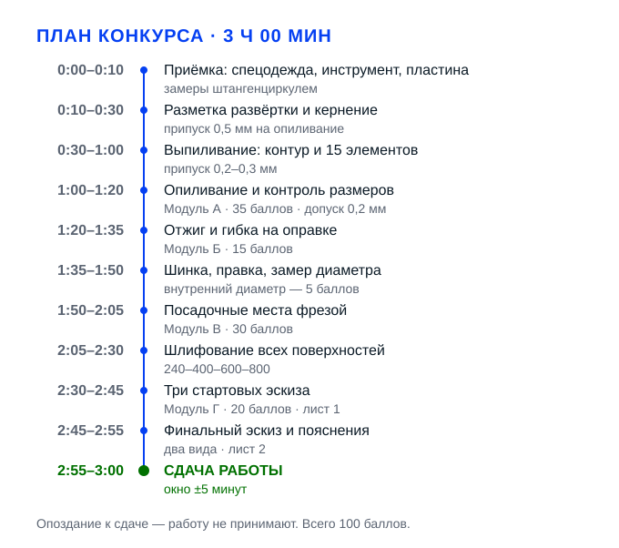
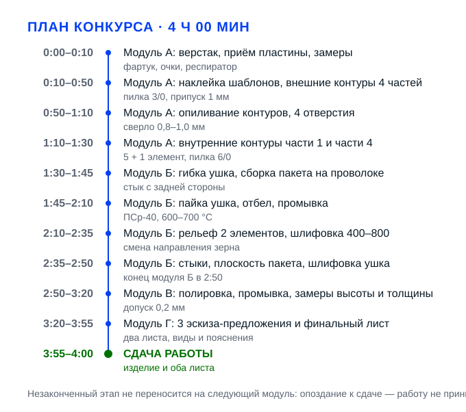
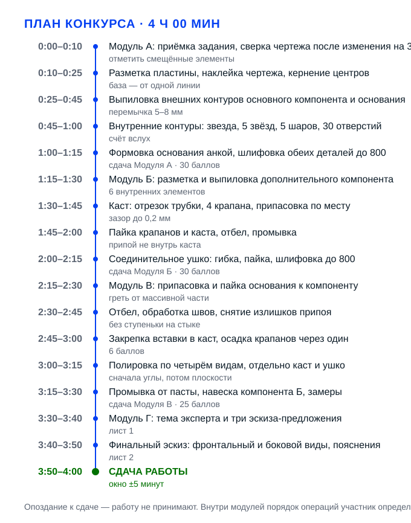

Ювелирное дело (Р,О)
Задания ниже — официальные файлы «Абилимпикс» (источник: abilympics-russia.ru), разложенные по категориям. Решения написаны по тексту задания, регламенту и критериям оценки; в них указано, что именно проверяет эксперт.
Школьник
14–16 лет, базовый уровень заданияВыдержка из официального конкурсного задания: страницы, относящиеся к категории «Школьник» (стр. 9–11 источника).
Пошаговое решение
Задание для школьников — кольцо салфеточное, предмет сервировки стола, из латуни Л62: плоская развёртка с пятнадцатью выпиленными декоративными элементами, гибка в кольцо с разомкнутым стыком, посадочное место под вставку, шлифование до чистоты 800 и серия эскизов. Четыре модуля идут подряд и укладываются в 3 часа: развёртка — 1 час 20 минут и 35 баллов, формообразование — 30 минут и 15 баллов, отделка — 40 минут и 30 баллов, креативный дизайн — 30 минут и 20 баллов. Почти все измеримые критерии оценивают с допуском: каждые 0,2 мм отклонения снимают 1 балл, а 0,1 мм не вычитается, поэтому размеры проверяют штангенциркулем после каждого перехода, а не в конце. Перед стартом главный эксперт меняет задание на 30 процентов — форму внешнего контура, внутренних элементов и часть размеров, поэтому работать нужно по выданному чертежу.

Задача 1. Изготовить развёртку кольца салфеточногоМодуль А · 35 баллов
Модуль А — самый дорогой в задании: 35 баллов из 100, и почти все они набираются или теряются до того, как металл согнут. Здесь из пластины латуни Л62 нужно получить плоскую развёртку кольца: внешний контур, пятнадцать внутренних декоративных элементов (по три центральных, по три основных слева и справа, по три дополнительных с каждой стороны), одно сквозное отверстие под посадочное место, а также высоту и длину в пределах 0,2 мм от чертежа. На всё отведено 1 час 20 минут, и внутри этого времени важен порядок: сначала разметка и контроль, потом пиление, потом опиливание — не наоборот.
Действие 1.1. Принять рабочее место, инструмент и заготовку
Шаг 1.1.1
Надеваем халат или фартук с цельнокроеным нагрудником, головной убор — пилотку или косынку, закрытую обувь на нескользящей подошве. Волосы убираем полностью: и спереди, и на затылке, потому что именно затылок чаще всего остаётся открытым. Рукава застёгиваем или подворачиваем выше локтя, чтобы манжета не попала в зону реза лобзика и не намоталась на вал бормашины. Защитные очки с прозрачными стёклами надеваем сразу, до первого включения бормашины, а не в тот момент, когда стружка уже полетела.
Комплект спецодежды и очки — условие допуска к работе: в разделе 6 задания прямо сказано, что работать нужно в халате, головном уборе и закрытой обуви, а на бормашине — в защитных очках. Латунная стружка мелкая и горячая, она летит в лицо быстрее, чем участник успевает прищуриться, и травма глаза снимает участника с конкурса целиком, вместе со всеми баллами. Аккуратный вид с первой минуты читается экспертом как понимание того, где находишься.
Отойдите к зеркалу или попросите волонтёра посмотреть со спины: волос не видно ни спереди, ни сзади, халат застёгнут, обувь закрытая. Очки сидят плотно и не сползают при наклоне головы к верстаку — проверьте наклоном вниз, как будто смотрите на разметку. Если стёкла запотели от дыхания, протрите их и работайте дальше, а не откладывайте в сторону.
Самая частая ошибка — надеть косынку «на макушку», оставив затылок открытым: спереди всё аккуратно, а сзади волосы выбиваются, и замечание эксперт делает уже на старте. Вторая — прийти в удобной открытой обуви или в футболке, рассчитывая надеть халат «потом»: время на это уйдёт из модуля А, а замечание по охране труда уже зафиксировано.
Эксперт по охране труда обходит рабочие места в первые минуты и смотрит именно комплектность: халат, головной убор, обувь, очки на месте. Дальше он поглядывает, остаются ли очки на лице в момент, когда включена бормашина, — это отдельное наблюдение по ходу всей работы.
Шаг 1.1.2
Осматриваем верстак так, как будто принимаем смену: проверяем, закреплены ли тиски и струбцина, нет ли на столешнице масляных пятен, свободен ли проход к верстаку. Раскладываем инструмент по зонам: справа — лобзик, пилки, надфили и напильники с надетыми ручками, слева — измерительный инструмент и чертёж, в лотке — крепёж и мелочь. Режущий и колющий инструмент держим в чехлах или в подставке, а не россыпью у края стола. Отдельно проверяем освещение: лампа должна давать свет на плоскость заготовки без тени от собственной руки.
Требования к организации места прописаны в разделе 6: инструмент располагать по порядку, режущий хранить в чехлах, напильники и надфили держать с ручками, опилки не сдувать и не смахивать рукой, а сметать щёткой. Напильник без ручки при обратном ходе хвостовика пробивает ладонь — это типичная мастерская травма, и на конкурсе она означает снятие участника. Порядок экономит время: из 80 минут модуля не хочется тратить десять на поиск пилки.
Проверьте три вещи: напильники и надфили с ручками, режущий инструмент в чехлах, на столе есть щётка-смётка. Лампа светит на заготовку так, что при вашей посадке тень не падает на линию разметки. Проход за спиной свободен — вы можете отойти от верстака, не переступая через ящик.
Классика — работать «на коленке», разложив всё в одну кучу: пилка теряется, надфиль катится под заготовку, а рука тянется через разметку и стирает линию. Вторая ошибка — сдувать опилки: мелкая латунная пыль летит в глаза и в дыхание, а по требованиям её сметают щёткой.
Эксперт оценивает организацию рабочего места глазами, без измерений, обычно в первые минуты и ещё раз в конце модуля. Отдельно он отмечает наличие щётки и порядок в лотке с инструментом — по ним видно, работал человек в мастерской раньше или нет.
Шаг 1.1.3
Получаем пластину латуни Л62 и чертёж, кладём их на верстак и сразу сверяем: марку металла, толщину, габариты заготовки и то, что на чертеже стоит именно кольцо салфеточное с вашим вариантом контура. Штангенциркулем замеряем толщину в трёх точках — у кромки, в середине и у противоположной кромки: разница больше 0,05 мм означает, что пластина поведёт при пилении. Замеры записываем на свободном поле чертежа карандашом, чтобы потом не держать цифры в голове.
Замеры и подгонка размеров входят в задание модуля А, а критерии «Соответствие размерам» дают по 2 балла за высоту и по 2 балла за длину, причём каждые 0,2 мм отклонения снимают 1 балл. Без реальной толщины пластины не посчитать внутренний диаметр при гибке в модуле Б: ошибка уйдёт дальше и снимется ещё раз, уже по 5 баллам. Чертёж перед соревнованием меняют на 30 процентов, поэтому сверять нужно выданный лист.
Три цифры должны совпасть с чертежом: толщина пластины (в трёх точках, разброс не больше 0,05 мм), габарит заготовки с припуском на обработку и номер варианта контура. Штангенциркуль держите строго перпендикулярно кромке: при перекосе губок он показывает на 0,1–0,2 мм больше, а это ровно та погрешность, которая потом съедает баллы.
Не сверить марку металла и взять первую попавшуюся пластину: Л62 отличается от ЛС59 по цвету и твёрдости, а пилится иначе, и на чужой заготовке контур просто не сойдётся с чертежом. Вторая ошибка — сразу начать пилить, не записав замеры: к середине модуля цифры забываются, и подгонка идёт «на глаз».
Эксперт подходит к верстаку в начале модуля и смотрит, лежит ли чертёж на виду и пользуется ли участник штангенциркулем, а не линейкой. В конце модуля он тем же инструментом проверяет высоту и длину развёртки — по тем же контрольным точкам, что и вы.
Действие 1.2. Разметить развёртку на пластине
Шаг 1.2.1
Выбираем базу — одну длинную кромку пластины, от которой будем строить всё остальное, и проверяем её на просвет по линейке: она должна быть прямой. Наклеиваем на заготовку фрагмент чертежа с развёрткой так, чтобы контур не выходил за края пластины и оставался припуск 0,5 мм по всему периметру, а клей наносим тонким слоем и разглаживаем от середины к краям, чтобы не осталось пузырей. Если шаблон не наклеивается, размечаем чертилкой по линейке и угольнику, а осевую линию проводим от базы и отмечаем её керном с двух концов.
Разметка — фундамент измеримых критериев: форма развёртки даёт 1 балл, форма декоративных элементов — 2, расположение отверстия — ещё 2, и всё это проверяется по нанесённому контуру. Припуск 0,5 мм нужен потому, что пилка лобзика уводит рез на 0,2–0,3 мм, и без запаса контур после опиливания окажется меньше чертёжного. Пузырь под наклейкой — местный сдвиг шаблона: линия уходит, и элемент выпиливается не там.
Проверьте наклейку пальцем: пузырей и отогнутых краёв нет, шаблон сидит плотно по всей площади. Припуск одинаков по всему периметру — 0,5 мм, а не «где-то больше, где-то в ноль». Осевая линия видна и не стёрта, керны на её концах стоят точно на линии, а не рядом.
Наклеить шаблон «на глаз», без базы: контур встаёт под углом, и половина декоративных элементов уходит к краю пластины, где не хватает металла. Вторая ошибка — размечать шариковой ручкой по металлу: линия смазывается от руки за две минуты и становится шире допуска 0,2 мм.
Эксперт смотрит на разметку до начала пиления, когда ещё можно всё исправить: ровно ли лежит шаблон, есть ли припуск, видны ли оси. Дальше он сверяет с чертежом уже готовый контур, но начинается оценка именно здесь.
Шаг 1.2.2
Переносим на заготовку все контрольные точки: центры пятнадцати декоративных элементов, центр сквозного отверстия и габаритные линии высоты и длины. Центры накерниваем керном с одного удара молотка — не «тыкаем» чертилкой, а именно керним, чтобы сверло потом не ушло в сторону. Симметрию проверяем от осевой линии: расстояние до парных элементов слева и справа должно совпадать, иначе кольцо после гибки перекосится и «Фронтальный вид» потеряет баллы.
Точки, которые вы накернили, задают положение каждого из пятнадцати элементов, а критерии выпиливания оценивают их поштучно: три центральных — 3 балла, три основных слева — 3, три основных справа — 3, три дополнительных слева — 3, три дополнительных справа — 3. Пропущенный элемент — минус балл за каждый, и вернуть его нельзя: металл удалён. Перекос полосы после гибки читается как дефект формы, а не разметки.
Считаем керны: пятнадцать штук по элементам плюс один под отверстие, всего шестнадцать. Расстояния от осевой до парных элементов одинаковы — проверяем штангенциркулем в двух-трёх парах, расхождение не больше 0,1 мм. Керн глубокий и круглый, а не вытянутый: вытянутое углубление уводит сверло.
Размечать элементы «по памяти» после того, как чертёж перевернули: у выданного варианта изменены форма и расположение контуров на 30 процентов, и заученная картинка не совпадёт. Вторая ошибка — кернить слабо, тогда сверло уходит по наклонной и пробивает отверстие не там, где нужно.
Эксперт проверяет расположение отверстия и симметрию элементов по чертежу после выпиливания, но керны видны ему и раньше. Ровные, одинаковые по глубине керны он читает как признак аккуратной работы.
Шаг 1.2.3
Прежде чем брать лобзик, проходим по разметке штангенциркулем и линейкой: высота развёртки, длина развёртки, расстояние между крайними элементами, положение центрального отверстия относительно торцов. Сверяем каждую цифру с чертежом и записываем отклонение на полях — если оно уже сейчас 0,1–0,2 мм, значит, при пилении нужно держаться внутренней стороны линии. Отдельно проверяем, что все пятнадцать элементов целиком помещаются внутри внешнего контура и между ними остаются перемычки не тоньше 1 мм.
Критерии «Соответствие размерам» в модуле А дают 2 балла за высоту и 2 балла за длину, и правило одинаково для всего задания: каждые 0,2 мм отклонения снимают 1 балл, а 0,1 мм не вычитается. То есть запас в одну десятую — это подарок, который нужно сохранить, а не потратить на «примерно так». Тонкая перемычка опаснее: она ломается при пилении или при гибке, и элемент выпадает, забирая с собой балл за выпиливание.
Все размеры сняты и укладываются в 0,2 мм от чертежа, отклонения записаны. Между соседними элементами видна перемычка не тоньше 1 мм — проверьте на самом узком месте. Внешний контур обведён целиком, без разрывов, и ни одна линия не выходит на кромку пластины.
Пропустить эту проверку и начать пилить сразу: обнаруживается всё то же, но уже на металле, когда исправлять приходится сваркой или новой заготовкой, а времени на второй подход нет. Вторая ошибка — сузить перемычки «чтобы элементы были крупнее»: они ломаются на первой же гибке.
Эксперт не наблюдает за этим шагом постоянно, но по готовой развёртке видно, проверяли ли размеры до реза: у проверявших контур ровный и повторяемый, у остальных — «гуляет» по длине.
Действие 1.3. Выпилить внешний контур лобзиком
Шаг 1.3.1
Ставим заготовку на выпиловочный столик или зажимаем в тиски так, чтобы линия реза шла в 1–2 мм от края опоры и пластина не дребезжала. Заправляем в лобзик пилку с мелким зубом (шаг 0,6–0,8 мм) и натягиваем её так, чтобы при щипке она давала короткий высокий звук, а не глухой. Пилку смазываем воском или мылом — по латуни она идёт ровнее и меньше нагревается.
Правильно натянутая пилка идёт по линии, а не гуляет вокруг неё: слабое натяжение даёт увод реза на 0,3–0,5 мм, и припуск, который вы оставили на опиливание, съедается целиком. Мелкий зуб обязателен для тонкой пластины: крупный вырывает металл на выходе и оставляет сколы по кромке, а «Выпиливание по внешнему контуру» оценивается отдельным баллом. Дребезг заготовки — это ещё и риск порвать полотно и порезать пальцы.
Натяжение проверяем щипком: звук высокий, пилка пружинит и возвращается на место. Заготовка не шатается от нажатия пальцем, линия реза видна и не перекрыта столиком. Лобзик держим так, чтобы рука двигалась свободно, без упора в верстак.
Работать с ненатянутой пилкой: рез уводит в сторону, и вместо прямой кромки получается волна, которую потом не выправить надфилем. Вторая ошибка — зажать пластину далеко от линии реза: она начинает вибрировать, зубья рвут кромку, а пилка ломается в самый неподходящий момент.
Эксперт смотрит на качество выпиловки уже по готовому контуру, но момент, когда участник ставит пилку и проверяет натяжение, показывает уровень подготовки. Рваная кромка и сколы на выходе пилки читаются сразу.
Шаг 1.3.2
Пилим по внешнему контуру, держа линию разметки снаружи реза, то есть оставляя 0,3–0,5 мм металла на опиливание. Ведём лобзик ровно, с равномерным нажимом, без рывков: на прямых участках движение длинное и спокойное, на поворотах пилку почти не подаём вперёд, а разворачиваем на месте, чтобы не сломать полотно. Дойдя до угла, делаем два-три коротких движения на месте, затем меняем направление — так радиус получается круглым, а не срезанным.
Припуск — страховка от увода пилки: снимая металл напильником, вы выходите на линию чертежа, а без припуска погрешность реза остаётся в допуске 0,2 мм. Разворот на месте вместо резкого поворота под нажимом сохраняет пилку целой: сломанное полотно меняют за 2–3 минуты, но за это время кромка успевает «уйти». Ровный рез по контуру — это балл за выпиливание и основание для «Общего впечатления» на 2 балла.
Пройдя половину контура, остановитесь и посмотрите на просвет: кромка ровная, припуск одинаковый, линия разметки не перерезана. Радиусы круглые, без граней и «ступенек». Пилка не потемнела и не дымит — значит, режим выбран верно.
Пилить точно по линии «чтобы меньше опиливать»: увод пилки на 0,3 мм сразу выводит деталь за допуск, и исправить это можно только уменьшением всей развёртки. Вторая ошибка — давить на лобзик на поворотах: полотно ломается, а на месте слома остаётся задир.
Эксперт осматривает внешний контур на просвет и с лупой, отмечая волны, задиры и срезанные радиусы. Отдельно он смотрит углы: именно там видно, разворачивал участник пилку или выламывал металл.
Шаг 1.3.3
Снимаем заготовку, кладём на чертёж и совмещаем по базовой кромке и осевой линии. Обводим карандашом расхождения: где контур вышел за линию — металл уже удалён, там придётся подтягивать соседние участки; где остался припуск — это нормально, его снимет напильник. Заусенец с тыльной стороны снимаем шабером или надфилем сразу, пока он не загнулся внутрь и не мешает укладывать деталь на плоскость.
Сверка с чертежом сразу после пиления — последняя точка, где видна системная ошибка: если контур ушёл по всей длине в одну сторону, виновата разметка или посадка, и остальные элементы пилят с поправкой. Заусенец на кромке при опиливании заворачивается под напильник и оставляет царапины, которые вышлифовываются с потерей размера. За форму развёртки дают 1 балл, за общее впечатление — 2, и оба снимаются за такие мелочи.
Наложите деталь на чертёж: расхождение по внешнему контуру не больше 0,3 мм с запасом на опиливание, линия разметки видна по всему периметру. Проведите пальцем по кромке с двух сторон — заусенца нет, кромка не режет. Деталь лежит на столе без качания.
Оставить заусенец и начать опиливать: напильник цепляется, кромка выкрашивается, а деталь «прыгает» в руке. Вторая ошибка — не сверить контур с чертежом и пилить дальше «по памяти», повторяя уже допущенный перекос на всех пятнадцати элементах.
Эксперт сверяет готовую развёртку с чертежом, прикладывая её или измеряя контрольные точки. Следы заусенца и грубые задиры на кромке он отмечает как низкую культуру обработки.
Действие 1.4. Выпилить внутренние декоративные элементы
Шаг 1.4.1
Начинаем с трёх центральных элементов: в каждом сверлим или накерниваем и просверливаем отверстие под пилку диаметром 0,8–1,0 мм, заправляем пилку, закрепляем её в лобзике и выпиливаем контур изнутри, двигаясь по часовой стрелке. Ведём рез с внутренней стороны линии, оставляя 0,2–0,3 мм на надфиль, и не торопимся на малых радиусах: там пилка разворачивается почти на месте. После каждого элемента снимаем пилку, переходим к следующему, а стружку сметаем щёткой, чтобы она не царапала плоскость.
Три центральных элемента — это 3 балла, и они самые заметные на готовом изделии: именно центр композиции эксперт рассматривает первым. Внутренний рез сложнее внешнего, потому что пилку приходится заводить через отверстие и держать её вертикально на весу — малейший наклон даёт конусную стенку, и элемент выглядит «скошенным». Припуск 0,2–0,3 мм нужен из-за тонких перемычек: срезав лишнее, вы ослабляете перемычку, и она ломается при гибке.
Все три элемента одинаковы по форме и размеру — приложите их контуры друг к другу или измерьте штангенциркулем по контрольным точкам. Стенки вертикальные: наклон виден, если посмотреть на элемент сбоку при боковом свете. Перемычки между элементами целые, без трещин и потемнений.
Заводить пилку без отверстия, прокалывая металл: на плоскости остаётся вмятина и задир, который потом не убрать без потери толщины. Вторая ошибка — пилить по линии, а не рядом с ней: внутренний контур можно только увеличить, вернуть металл невозможно, и элемент теряет форму.
Эксперт рассматривает внутренние элементы с лупой и на просвет: важны одинаковость трёх центральных, вертикальность стенок и чистота углов. Именно здесь чаще всего видно, работал участник лобзиком раньше или держит его второй раз в жизни.
Шаг 1.4.2
Переходим к трём основным элементам с левой стороны: размечаем центры, сверлим отверстия под пилку, выпиливаем по внутреннему контуру, сохраняя припуск 0,2–0,3 мм. Держим деталь так, чтобы левая группа была ближе к вам и линия реза не уходила под столик, а лобзик ведём без наклона в сторону. Между элементами оставляем перемычки по чертежу, а не «как получится»: если ширина перемычки по чертежу 1,2 мм, значит, после пиления и опиливания она должна остаться 1,2 мм.
Левая группа — отдельные 3 балла, и оценивается она поштучно: за каждый отсутствующий элемент снимают балл. Основные элементы крупнее дополнительных, поэтому на них приходится больше реза и выше риск увести пилку на длинном участке. Ровная перемычка заданной ширины — это не эстетика, а прочность: при гибке полосы в кольцо металл между элементами работает на растяжение, и тонкая перемычка рвётся.
Считаем элементы слева: их ровно три, все замкнутые, без «недопилов», где контур не сомкнулся. Перемычки измерены штангенциркулем в самом узком месте и совпадают с чертежом с точностью 0,2 мм. Кромки без заусенца, деталь не погнута от нажима.
Пилить сразу все левые элементы, не проверяя первый: ошибка в посадке пилки повторяется трижды, и вместо одного дефекта получается три. Вторая ошибка — экономить перемычку, чтобы элемент вышел крупнее: кольцо при гибке трескается именно по перемычкам.
Эксперт считает элементы поштучно и сверяет их форму с чертежом, обращая внимание на одинаковость внутри группы. Недопиленный контур, где металл остался соединённым, он отмечает как отсутствующий элемент.
Шаг 1.4.3
Повторяем ту же операцию для трёх основных элементов с правой стороны, но разворачиваем заготовку так, чтобы рез шёл «от себя» и линия была видна целиком. Сверлим отверстия под пилку по кернам, заправляем пилку, выпиливаем контур с припуском и сразу снимаем заусенец с тыльной стороны надфилем. После каждого элемента проверяем, не повело ли полосу: тонкая пластина от нагрева и нажима иногда «винтом», и это надо поймать до гибки.
Правая группа — ещё 3 балла, и её форма должна быть зеркальной левой: если элементы справа вышли крупнее или сдвинуты, симметрия кольца нарушается, а вместе с ней теряются баллы за фронтальный и тыльный вид в модуле Б. Проверка на «винт» важна потому, что погнутую полосу в модуле Б придётся править, а правка тонкой латуни почти всегда оставляет следы на плоскости. Снятый вовремя заусенец не даёт напильнику царапать лицевую сторону при опиливании.
Сравните правую и левую группы: количество элементов, размеры по контрольным точкам, расстояния от осевой линии. Полоса лежит на столе без качания — просвета под ней нет. Заусенец снят с обеих сторон, кромки не режут палец.
Спешить к концу модуля и делать правую группу «на скорость»: именно на ней чаще всего остаются недопилы и сорванные радиусы, а стоит она столько же, сколько левая. Вторая ошибка — не заметить, что полосу повело: при гибке «винт» превращается в перекошенное кольцо.
Эксперт сравнивает группы между собой: разница в форме и размерах бросается в глаза, потому что элементы стоят рядом. Он также смотрит, нет ли на плоскости следов правки и вмятин от тисков.
Шаг 1.4.4
Выпиливаем шесть дополнительных элементов — по три с каждой стороны: они мельче основных, поэтому отверстие под пилку сверлим 0,6–0,8 мм, а пилку берём самую тонкую из набора. Работаем короткими движениями, почти без подачи вперёд, разворачивая полотно на месте в углах; после каждого элемента сметаем стружку и осматриваем перемычку со стороны соседнего элемента. Если дополнительный элемент примыкает к основному, сначала проходим общий участок, а потом разделяем элементы — так меньше риска порвать тонкую перемычку между ними.
Дополнительные элементы слева и справа дают по 3 балла каждая группа, то есть 6 баллов из 35 — почти пятая часть модуля А, и теряют их чаще всего из-за спешки в конце. Мелкий контур требует тонкой пилки: толстая просто не входит в радиус и выламывает металл, оставляя рваную стенку. Разделение элементов после прохода общего участка — приём, который сохраняет перемычку: пилить сразу два контура навстречу друг другу почти всегда означает скол.
Все шесть дополнительных элементов на месте, каждый замкнут, стенки вертикальные. Перемычки между дополнительным и основным элементом целые, ширина по чертежу с точностью 0,2 мм. Внутри элементов нет задиров и «ступенек» от пилки.
Брать одну пилку на все элементы и не менять её при переходе на мелкий контур: пилка рвётся в радиусе, а элемент остаётся недопиленным. Вторая ошибка — пилить дополнительные элементы в последние пять минут модуля, когда рука уже устала: сколы и недопилы появляются именно там.
Эксперт пересчитывает все пятнадцать элементов и отмечает отсутствующие поштучно. Отдельно он смотрит на мелкие элементы: по ним видно, менял ли участник пилку и работал ли с лупой.
Действие 1.5. Просверлить отверстие под посадочное место
Шаг 1.5.1
Ставим заготовку на подкладную дощечку или на деревянный брусок, чтобы сверло на выходе не рвало металл о столешницу, и зажимаем так, чтобы точка сверления была открыта. В патрон бормашины ставим сверло 1,0–1,2 мм (диаметр — по чертежу), надеваем очки и включаем машину на 5–8 тысяч оборотов. Сверлим насквозь с лёгкой подачей, без нажима, периодически выводя сверло из отверстия, чтобы вышла стружка; на выходе придерживаем заготовку, потому что сверло «закусывает» тонкий металл.
Отверстие под посадочное место — это 2 балла за расположение и 1 балл за наличие сквозного отверстия, а в правильной точке его можно просверлить только по керну с разметки. Лёгкая подача и вывод сверла нужны потому, что латунь — вязкий материал: сверло с налипшей стружкой заклинивает, и тонкая пластина вырывается из руки. Очки на бормашине обязательны по требованиям охраны труда: обломок сверла летит с большой скоростью.
Отверстие сквозное, круглое, без овальности, расположено по чертежу — проверьте расстояние до двух ближайших контрольных точек штангенциркулем. Заусенец с обеих сторон снят зенковкой или сверлом большего диаметра на малых оборотах. Деталь не погнута, вокруг отверстия нет вмятин от сверла.
Сверлить без керна «с руки»: сверло уходит по плоскости, отверстие получается овальным и смещается на 0,5–1 мм, а это уже не 2 балла, а ноль. Вторая ошибка — давить на бормашину: сверло закусывает, пластина вырывается, и на ней остаётся вмятина, которую невозможно убрать без уменьшения толщины.
Эксперт проверяет отверстие на просвет и измеряет его положение от контрольных точек. Отдельно он отмечает заусенец: торчащая кромка не даст вставке сесть в гнездо и выдаст небрежность обработки.
Шаг 1.5.2
Снимаем заготовку, осматриваем отверстие с лупой и проверяем его положение по чертежу: расстояние до торца, до осевой линии и до ближайших элементов. Если отверстие ушло на 0,1–0,2 мм, ещё можно поправить зенковкой или круглым надфилем, но не сверлом большего диаметра — размер посадочного места тоже нормируется. Проходим кромку зенковкой на малых оборотах, снимая заусенец под углом примерно 45 градусов и не углубляясь больше чем на 0,2 мм.
Расположение отверстия — это отдельные 2 балла критерия «Соответствие чертежу», и проверяется оно от контрольных точек, а не «на глаз». Зенковка нужна для того, чтобы вставка или штифт садились в гнездо без перекоса: заусенец работает как клин и поднимает деталь на 0,1–0,2 мм, что сразу видно на сборке. Углубляться больше 0,2 мм нельзя — стенка тонкая, и при шлифовании гнездо «проваливается», теряя форму.
Отверстие круглое, без овальности, заусенец снят с обеих сторон. Расстояние от центра отверстия до двух контрольных точек совпадает с чертежом в пределах 0,2 мм. Гнездо не имеет конусности: стенка вертикальная по всей глубине.
Расширять отверстие сверлом «чтобы выровнять»: диаметр растёт, посадочное место перестаёт соответствовать чертежу, а исправить это можно только пайкой и повторной обработкой, на которую в модуле А нет времени. Вторая ошибка — снять заусенец напильником: на плоскости остаются риски, которые потом вышлифовываются вместе с металлом.
Эксперт измеряет положение отверстия и осматривает кромку с лупой. Ровная фаска и чистое гнездо читаются как понимание того, зачем отверстие вообще нужно.
Действие 1.6. Опилить контуры и сдать модуль
Шаг 1.6.1
Кладём заготовку на деревянную подкладку и опиливаем внешний контур: сначала драчёвым напильником снимаем припуск до линии разметки, затем личным выравниваем кромку, а мелкие радиусы доводим надфилем соответствующего профиля. Напильник ведём вдоль кромки, а не поперёк, снимая металл равномерно по всей длине и проверяя плоскость на просвет по линейке. Движение должно быть длинным и спокойным: короткие «тычки» оставляют ступеньки, которые потом видны на отражении.
Опиливание выводит деталь на чертёжный размер и формирует то, что эксперт оценивает как «Качество выпиловки. Общее впечатление» — 2 балла, а также «Форму развёртки» — 1 балл. Драчёвый напильник снимает 0,2–0,3 мм за проход, личной — сотые доли, поэтому порядок «сначала грубо, потом тонко» экономит и время, и размер. Ведение вдоль кромки даёт ровную плоскость; поперёк — волнистую кромку, которую видно на отражении при боковом свете.
Кромка ровная по всей длине, без ступенек и «завалов» на углах. Приложите линейку к кромке на просвет: щель не больше 0,1 мм. Радиусы круглые, повторяют чертёж, а не срезаны фаской. Напильник не «засален» — стружку с него снимают щёткой, а не ладонью.
Опиливать сразу личным напильником, минуя драчёвый: работа идёт вдвое дольше, напильник забивается, а кромка получается волнистой. Вторая ошибка — заваливать углы: там металл снимается быстрее всего, и вместо острого угла по чертежу получается скругление.
Эксперт осматривает внешний контур на просвет и на отражении, отмечая волны, завалы и срезанные радиусы. Это самый быстрый способ понять, сколько времени участник потратил на опиливание, а сколько сэкономил.
Шаг 1.6.2
Переходим к внутренним контурам: работаем надфилями — плоским для прямых участков, трёхгранным для углов, круглым для радиусов и полукруглым для переходов. Держим надфиль двумя руками, опираясь одной на верстак, чтобы не сорвать кромку на выходе, и снимаем металл мелкими движениями от себя. В углах работаем вершиной трёхгранного надфиля, а не боковой стороной, иначе угол «разъедается» и элемент теряет форму.
Внутренние контуры дают основную массу баллов за выпиливание — пятнадцать элементов по 3 балла в пяти группах, и опиливание определяет, насколько контур соответствует чертежу. Сорванная кромка на выходе надфиля — самая частая причина брака: инструмент срывается, режет металл глубже, чем нужно, и элемент теряет симметрию. Работа двумя руками и опора на верстак убирают этот рывок почти полностью.
Стенки элементов вертикальные, углы чистые, без «разъезженных» скруглений. Форма каждого элемента совпадает с чертежом при наложении, размеры по контрольным точкам в пределах 0,2 мм. Перемычки не сточены, их ширина соответствует чертежу.
Дорабатывать углы боковой стороной надфиля: угол расширяется, элемент теряет геометрию, а восстановить её нечем — металл уже снят. Вторая ошибка — торопиться и не менять надфиль по профилю: круглым надфилем прямые участки получаются волнистыми.
Эксперт смотрит внутренние контуры на просвет и с лупой, обращая внимание на одинаковость элементов внутри группы и на чистоту углов. Здесь видно, менял ли участник профиль инструмента или работал одним надфилем на всё.
Шаг 1.6.3
Финальная проверка модуля А: измеряем штангенциркулем высоту и длину развёртки по контрольным точкам чертежа, пересчитываем пятнадцать элементов и сквозное отверстие, осматриваем плоскость на просвет. Сметаем стружку щёткой, убираем инструмент на места, чертёж и заготовку держим на виду. Если отклонение уже вышло за 0,2 мм, дальше металл не снимаем: каждое следующее движение только ухудшает размер.
Высота и длина — это по 2 балла, и правило снятия простое: каждые 0,2 мм отклонения стоят 1 балл, а 0,1 мм не вычитается. Плюс 5 баллов за «Завершение задания. Модуль выполнен. Развёртка» — их дают за готовую, комплектную развёртку, а не за «почти готовую». Осмотр плоскости на просвет ловит «винт» и погнутость, которые в модуле Б обойдутся дороже: там за внутренний диаметр дают 5 баллов, а править погнутую полосу придётся уже на согнутом кольце.
Высота и длина укладываются в 0,2 мм от чертежа, элементов пятнадцать, отверстие одно и на месте. Полоса лежит на столе без качания. Инструмент убран, стружка сметена, чертёж подписан и лежит рядом с заготовкой.
Продолжать опиливать «до идеала» в последние минуты: снимается лишний металл, размер уходит за допуск, и теряются те самые 2 балла, которые вы уже набрали. Вторая ошибка — начать уборку и не измерить деталь: без замера вы не знаете, что именно сдаёте, а переделать уже нечем.
Эксперт фиксирует завершение модуля по факту предъявления развёртки и сразу измеряет высоту и длину. Плоскость он проверяет на просвет и на отражении — по ней видно, берегли ли деталь или бросали на верстак.
Задача 2. Согнуть развёртку в кольцо и сформировать шинкуМодуль Б · 15 баллов
Модуль Б длится 30 минут и стоит 15 баллов: 3 за фронтальный вид, 3 за тыльный, 5 за внутренний диаметр и 4 за завершение. Плоскую развёртку нужно превратить в кольцо с разомкнутым стыком, сформировать декоративную часть шинки и выдержать диаметр так, чтобы отклонение не вышло за 0,2 мм. Времени мало, поэтому гибка идёт сразу на нужный радиус, без примерок «на глаз» и без многократной правки.
Действие 2.1. Подготовить развёртку и оправку к гибке
Шаг 2.1.1
Снимаем наклейку с шаблоном, обезжириваем полосу и осматриваем её: на плоскости не должно остаться клея, заусенцев и следов надфиля, которые при гибке превратятся в задиры. Отжигаем латунь, если она наклёпана после пиления: нагреваем полосу до 600–700 градусов, пока она не станет тускло-красной, и даём остыть на воздухе, не опуская в воду. После отжига металл становится мягким и гнётся без трещин по перемычкам.
Отжиг снимает наклёп от пиления и опиливания и возвращает Л62 пластичность: без него перемычки между пятнадцатью элементами трескаются именно на гибке, а это сразу минус баллы за фронтальный и тыльный вид. Нагрев выше 700 градусов опасен: цинк испаряется, поверхность становится рыхлой, и в модуле В её придётся шлифовать глубже, теряя размер. Остывание на воздухе даёт равномерную структуру, а вода может повести тонкую полосу.
Полоса после отжига гнётся пальцами с заметно меньшим усилием, цвет ровный, без красных пятен и окалины. Трещин по кромкам и перемычкам нет — проверьте с лупой. Полоса лежит на столе ровно, без «винта»: просвета под ней нет.
Греть полосу «на глаз» горелкой до ярко-красного цвета: цинк выгорает, поверхность становится шершавой, и в модуле В придётся снимать лишний металл, уходя из допуска. Вторая ошибка — не отжигать вовсе: первые трещины появляются на перемычках, и восстановить их нечем.
Эксперт смотрит на цвет и состояние поверхности после отжига и на отсутствие трещин по кромкам. Рыхлая красноватая поверхность сразу говорит о перегреве.
Шаг 2.1.2
Подбираем оправку под внутренний диаметр по чертежу: диаметр оправки равен чертёжному внутреннему диаметру минус толщина полосы, потому что при гибке металл ложится снаружи. Размечаем на полосе линию начала гибки, середину и линию стыка так, чтобы стык пришёлся на участок без декоративных элементов. Если оправки нужного диаметра нет, подойдёт подходящий по диаметру круглый стержень, обёрнутый одним слоем плотной бумаги, — бумагу потом снимают, и диаметр выходит точнее.
Внутренний диаметр — самый дорогой критерий модуля Б, 5 баллов, и считается он именно от оправки: ошибка в расчёте на толщину полосы сразу даёт 0,5–1 мм, то есть минус 3–5 баллов. Стык на участке без элементов нужен потому, что декоративная часть при гибке работает как концентратор напряжения, и разрыв пойдёт именно по ней. Бумажная прокладка — простой способ точно выйти на диаметр, когда набор оправок неполный.
Диаметр оправки измерен штангенциркулем и равен чертёжному внутреннему диаметру минус толщина полосы, расхождение не больше 0,1 мм. Линии начала гибки, середины и стыка видны и нанесены на чистую сторону, которая останется внутри кольца. Стык попадает между элементами, а не в центр декоративной группы.
Взять оправку «примерно такого диаметра»: кольцо получается на 0,6–1 мм шире или уже, и это сразу 3–5 баллов из 15. Вторая ошибка — разметить стык по центру декоративной части: при гибке там появляется залом, который видно на фронтальном виде.
Эксперт измеряет готовое кольцо по внутреннему диаметру штангенциркулем, и по результату видно, считал участник толщину полосы или нет. Положение стыка он тоже отмечает: разрыв на декоративной части читается как дефект.
Действие 2.2. Согнуть полосу в кольцо и сформировать шинку
Шаг 2.2.1
Кладём полосу на оправку лицевой стороной наружу и начинаем гибку с середины: большими пальцами прижимаем металл к оправке и постепенно перемещаем усилие к концам, а не наоборот. Дойдя до декоративной части, замедляемся и подгибаем полосу деревянной киянкой через мягкую прокладку, чтобы не оставить вмятин на лицевой плоскости. Концы сводим так, чтобы между ними остался зазор по чертежу, и не сжимаем их до полного смыкания.
Гибка от середины к концам даёт ровный радиус: начиная с концов, вы получите овальное кольцо и потеряете по 3 балла за оба вида. Киянка через прокладку сохраняет плоскость — следы молотка на латуни не убираются шлифованием без потери 0,1–0,2 мм, а это уже допуск. Зазор по чертежу обязателен: критерий «Соответствие размера разомкнутого расстояния» в модуле В даёт 4 балла, и сомкнутые концы сразу обнуляют его.
Радиус одинаковый по всей дуге: приложите кольцо к оправке — просвет между металлом и оправкой не больше 0,2 мм. Плоскость лицевой стороны ровная, без вмятин от киянки. Зазор между концами соответствует чертежу и одинаков по высоте.
Гнуть «на весу», держа полосу за концы: середина не тянется за оправкой, кольцо выходит овальным, и приходится править его, сминая декоративную часть. Вторая ошибка — бить киянкой прямо по лицевой плоскости: остаются вмятины, которые видны на отражении.
Эксперт осматривает кольцо на просвет и прикладывает к оправке: равномерность радиуса видна сразу. Отдельно он ищет вмятины на лицевой плоскости — по ним понятно, чем и как гнули.
Шаг 2.2.2
Доводим кольцо до нужного радиуса в тисках с мягкими губками или на ригеле: поджимаем металл к оправке постепенно, по 0,3–0,5 мм за подход, и после каждого поджатия проверяем диаметр. Декоративную часть поддерживаем пальцами с внутренней стороны, чтобы она не проминалась. Если полоса пошла «винтом», раскручиваем её обратно на оправке лёгкими встречными движениями, а не выкручиванием руками за концы.
Постепенное поджатие сохраняет равномерность: за один сильный зажим металл тянется неравномерно, и кольцо получает плоский участок, который видно на тыльном виде (3 балла). Поддержка декоративной части нужна потому, что именно там сосредоточены перемычки, и они проминаются первыми. «Винт» исправляется только на оправке: выкручивание за концы закручивает полосу вокруг продольной оси, и после этого кольцо уже не ложится плоскостью.
Диаметр после каждого поджатия укладывается в 0,1–0,2 мм от чертежа, разница по трём направлениям (0, 120 и 240 градусов) не больше 0,2 мм. Кольцо лежит на столе и не качается, как тарелка. Декоративная часть не промята, перемычки целые.
Пережать тиски «чтобы наверняка»: диаметр уходит в минус, металл в зоне зажима утоньшается, и вернуть размер можно только разжатием, после которого остаётся плоский участок. Вторая ошибка — править «винт» руками за концы, без оправки.
Эксперт измеряет диаметр в трёх направлениях и смотрит, лежит ли кольцо на плоскости. Разница между направлениями больше 0,2 мм он читает как овальность, а не как случайное отклонение.
Шаг 2.2.3
Формируем декоративную часть шинки: там, где по чертежу предусмотрено расширение или плавный переход, подгибаем края полосы на оправке меньшего диаметра, а переходы проходим пальцем через мягкую ткань, чтобы не оставить следов. Если по чертежу есть отгибы или волна, задаём их плоскогубцами с гладкими губками, подкладывая под металл кусочек кожи. После формовки ещё раз проверяем, что декоративные элементы не потеряли плоскость и не повело всю дугу.
Формование шинки входит в критерий «Завершение задания» на 4 балла и работает на фронтальный вид: без шинки кольцо читается как простая согнутая полоса. Инструмент с гладкими губками и кожаная прокладка сохраняют поверхность, которую в модуле В придётся шлифовать до чистоты 800 — каждая вмятина там превращается в лишний съём металла. Контроль после формовки нужен потому, что местная подгибка легко закручивает всю дугу.
Шинка соответствует чертежу по ширине и профилю, переходы плавные, без заломов. Декоративные элементы лежат в одной плоскости с остальной полосой, перекос не больше 0,2 мм. Кольцо по-прежнему круглое, диаметр не изменился после формовки.
Формовать шинку после того, как кольцо уже согнуто и поджато: местная деформация сбивает диаметр, и его приходится выводить заново, теряя время модуля. Вторая ошибка — работать обычными плоскогубцами с насечкой: на латуни остаются отпечатки, которые не убрать без глубокой шлифовки.
Эксперт сравнивает профиль шинки с чертежом на фронтальном и тыльном виде. Плавность перехода и отсутствие отпечатков инструмента он отмечает отдельно, в общем впечатлении.
Шаг 2.2.4
Правим кольцо окончательно: проверяем, что оба конца лежат в одной плоскости, зазор равномерный по всей высоте, а диаметр одинаков в трёх направлениях. Мелкие неровности убираем лёгкими нажатиями пальцев через кожу на оправке, без инструмента. Если концы смещены по высоте, подгибаем один из них плоскогубцами с прокладкой, а не стучим по кольцу. Перед правкой кладём кольцо на ровную плитку и смотрим на просвет: пятно контакта должно быть сплошным, без качания.
Смещённые по высоте концы — это дефект, который в модуле В обнулит критерий разомкнутого расстояния на 4 балла и испортит вид сверху и снизу по 2 балла каждый. Правка пальцами через кожу не оставляет следов, а любой металлический инструмент на готовой поверхности оставляет вмятину, которую потом видно на отражении. Равномерный зазор нужен и для того, чтобы кольцо стояло на столе устойчиво.
Концы совпадают по высоте с точностью 0,1–0,2 мм, зазор одинаков сверху и снизу. Кольцо стоит на столе, не качаясь, и не «прыгает» при нажатии. Диаметр в трёх направлениях отличается не больше чем на 0,2 мм.
Стучать по кольцу молотком «чтобы выровнять»: плоскость мнётся, и в модуле В её придётся шлифовать глубже, уходя из допуска по толщине. Вторая ошибка — оставить концы в разных плоскостях, решив, что «при шлифовке сравняется»: шлифование снимает металл, но не выравнивает геометрию.
Эксперт смотрит на кольцо сбоку и сверху: смещение концов по высоте видно сразу. Он же проверяет устойчивость кольца на столе — этот признак он использует и в модуле В.
Действие 2.3. Проконтролировать геометрию и сдать модуль
Шаг 2.3.1
Измеряем внутренний диаметр штангенциркулем в трёх направлениях: по стыку, под 120 и под 240 градусов к нему. Замер делаем губками для внутренних измерений, держа инструмент строго в плоскости кольца, без перекоса. Результат записываем и сравниваем с чертежом: допустимое отклонение — 0,2 мм, отклонение 0,1 мм баллы не снимает. Если разброс больше 0,2 мм, поджимаем кольцо на оправке в том направлении, где размер больше, и повторяем замер.
Внутренний диаметр — 5 баллов из 15 в модуле Б, самая крупная позиция, и правило снятия жёсткое: каждые 0,2 мм отклонения стоят 1 балл. Три направления нужны потому, что после гибки кольцо почти всегда чуть овальное, и один замер в удобном месте показывает «идеальный» размер, а по другому направлению отклонение уже выходит за допуск. Перекос штангенциркуля даёт ошибку до 0,3 мм — это цена двух баллов.
Три замера отличаются друг от друга не больше чем на 0,2 мм и все укладываются в 0,2 мм от чертежа. Штангенциркуль входит в кольцо без нажима и не качается в плоскости. Записанные цифры совпадают с тем, что вы видите на шкале при повторном замере.
Мерить один раз «по удобному месту»: кольцо овальное, и в удобной точке размер в норме, а по стыку уходит на 0,4 мм — минус 2 балла. Вторая ошибка — поджимать губки с усилием: упругая деформация даёт заниженный размер, и участник успокаивается раньше времени.
Эксперт измеряет диаметр теми же тремя направлениями и сравнивает с чертежом по таблице допусков. Овальность он фиксирует отдельно, даже если средний размер в норме.
Шаг 2.3.2
Проверяем фронтальный и тыльный вид: ставим кольцо на стол, смотрим на него с лицевой стороны и с тыльной, сравнивая с чертежом форму, симметрию декоративных групп и положение стыка. Тыльную сторону осматриваем особенно внимательно: там видны заломы и вмятины от оправки, которых не видно спереди. Если обнаружен залом, аккуратно расправляем его на оправке пальцами через кожу, а не напильником.
Фронтальный вид — 3 балла, тыльный — 3 балла, и оба проверяются именно как вид, а не как набор размеров: эксперт смотрит на симметрию групп, ровность дуги и положение стыка. Тыльная сторона страдает первой, потому что при гибке она прижата к оправке и именно по ней идёт давление. Залом, снятый напильником, уменьшает толщину и выводит деталь из допуска — расправлять можно только давлением.
Кольцо симметрично относительно вертикальной оси, декоративные группы слева и справа одинаковы по высоте. Стык расположен по чертежу и не пересекает элементы. На тыльной стороне нет заломов, вмятин и следов оправки.
Смотреть только на лицевую сторону, потому что «тыл всё равно не видно»: там остаются вмятины от оправки и заломы, а это 3 балла. Вторая ошибка — исправлять залом напильником: металл утоньшается, и на тыльном виде появляется плоский участок.
Эксперт поворачивает кольцо в руках и осматривает оба вида, часто при боковом свете — так видны вмятины. Симметрию он проверяет, положив кольцо на лист с чертежом.
Шаг 2.3.3
Сдаём модуль: кольцо кладём на подставку или на чистый лист, рядом оставляем чертёж, инструмент убираем на места, стружку сметаем щёткой. Коротко называем эксперту, что сделано и какие размеры получены, если он спрашивает: диаметр, зазор, положение стыка. Время модуля — 30 минут, и сдача идёт сразу по готовности, а не в последнюю минуту. Кольцо не кладём на голый металл верстака: под ним должна быть подложка, иначе на отшлифованной поверхности появятся новые царапины.
«Завершение задания. Преобразование формы изделия» — это 4 балла, и они даются за предъявленное сформированное кольцо, а не за «почти готовое». Убранное рабочее место и разложенный инструмент входят в общую культуру работы, которую эксперт отмечает по ходу всех модулей. Точный ответ по своим размерам показывает, что участник контролировал работу, а не надеялся на удачу.
Кольцо предъявлено, чертёж рядом, на столе нет стружки и лишнего инструмента. Вы можете назвать три своих замера диаметра и зазор, не подглядывая в записи. Следующий модуль начинается без поиска инструмента.
Оставить уборку «на конец конкурса»: стружка от гибки и опиливания попадает на лицевую плоскость и царапает её при шлифовании. Вторая ошибка — не предъявить кольцо сразу и взяться за следующий модуль: незавершённый модуль фиксируется как невыполненный.
Эксперт фиксирует предъявление кольца и при необходимости задаёт вопросы по размерам: какой диаметр получился, какой зазор. По ответам он видит, измерял участник изделие или работал на глаз, и это же наблюдение переносит в оценку завершения модуля.
Задача 3. Подготовить посадочные места и отшлифовать изделиеМодуль В · 30 баллов
Модуль В — второй по стоимости, 30 баллов из 100, и он же самый «дорогой» по времени: 40 минут на то, чтобы подготовить посадочное место бормашиной и фрезами и вывести все поверхности наждачной бумагой до чистоты 800. Здесь оценивают четыре вида по 2 балла (слева, справа, сверху, снизу), посадочное место на 2 балла, четыре зоны шлифования по 2 балла, общее впечатление на 3, разомкнутое расстояние на 4 и завершение на 5. Работа идёт от гнезда к шлифованию: сначала убирают металл фрезой, потом бумагой.
Действие 3.1. Подготовить посадочные места под вставки
Шаг 3.1.1
Ставим в бормашину шаровидную или конусную фрезу с мелкой насечкой — диаметр подбираем под размер вставки по чертежу, обычно на 0,1–0,2 мм меньше её посадочного диаметра. Надеваем очки, включаем машину на 8–12 тысяч оборотов и проверяем фрезу на холостом ходу: она не должна бить. Кольцо держим двумя руками, опираясь на подставку, и подводим фрезу к размеченному центру под небольшим углом, чтобы видеть кромку гнезда.
Подготовка посадочного места — отдельный критерий на 2 балла, и делать её нужно фрезой, а не сверлом: сверло даёт цилиндрическое отверстие с рваной кромкой, а вставке нужна посадка по профилю. Фреза на 0,1–0,2 мм меньше вставки оставляет запас на подгонку: снять лишнее всегда можно, вернуть металл нельзя. Биение фрезы на 12 тысячах оборотов даёт не гнездо, а борозду, и кольцо приходится переделывать целиком.
Гнездо круглое, стенки чистые, без вырывов и «ступенек» от фрезы. Диаметр гнезда на 0,1–0,2 мм меньше посадочного размера вставки. Кромка гнезда не имеет заусенца, который поднимал бы вставку над плоскостью.
Фрезеровать на полной глубине сразу: фреза закусывает, кольцо вырывается из рук, и на лицевой плоскости остаётся глубокая борозда, которую не убрать без потери 0,3 мм металла. Вторая ошибка — работать без очков: латунная пыль и обломки фрезы летят прямо в лицо.
Эксперт осматривает гнездо с лупой и проверяет посадку вставки: она должна лежать в гнезде без качания и не выступать над плоскостью. Рваные стенки и следы закусывания фрезы он отмечает сразу.
Шаг 3.1.2
Формируем гнездо в два-три прохода: сначала намечаем углубление на 0,2–0,3 мм, проверяем центровку, затем заглубляемся до посадочной глубины по чертежу. Держим фрезу строго перпендикулярно плоскости, а кольцо поворачиваем так, чтобы рабочая зона всегда была перед глазами. Периодически останавливаемся и убираем стружку мягкой кистью, а не сдуванием, чтобы видеть дно гнезда.
Послойная выборка металла — единственный способ не пробить кольцо насквозь: толщина стенки в зоне гнезда обычно 0,8–1,2 мм, и один неверный проход на полной глубине выводит изделие из строя. Перпендикулярность фрезы важна потому, что наклонное гнездо заставляет вставку вставать с перекосом, и это видно на виде сверху, который стоит 2 балла. Уборка стружки кистью нужна и по требованиям охраны труда, и для контроля: дно гнезда должно быть видно.
Глубина гнезда соответствует чертежу с точностью 0,1–0,2 мм, дно ровное. Вставка садится в гнездо и держится в нём без покачивания. Стенки не имеют конусности больше 0,1 мм на глубину, а насквозь кольцо не пробито.
Заглубляться «до упора», не проверяя толщину стенки: фреза выходит на тыльную сторону, и на кольце появляется отверстие, которое в этой категории не предусмотрено. Вторая ошибка — наклонять бормашину при выборке: гнездо получается косым, вставка встаёт с перекосом.
Эксперт проверяет гнездо вставкой и измеряет глубину. Отдельно он смотрит на тыльную сторону: вышедшая насквозь фреза — это дефект, который уже не исправить.
Шаг 3.1.3
Проверяем посадку: вставляем вставку или её шаблон в гнездо и смотрим на просвет со стороны плоскости. Вставка должна лежать по кромке гнезда равномерно, без зазора с одной стороны и без выступания с другой. Если вставка качается, снимаем 0,05–0,1 мм металла по кромке гнезда маленькой шаровидной фрезой, а не расширяем гнездо целиком. После подгонки убираем заусенец с кромки и продуваем гнездо грушей.
Равномерная посадка — это то, что эксперт видит на виде сверху и снизу, а они вместе дают 4 балла. Качание вставки означает, что гнездо глубже с одной стороны, и при закрепке вставка встанет с перекосом; в этой категории закрепку не выполняют, но подготовку оценивают именно по посадке. Заусенец на кромке поднимает вставку на 0,1–0,2 мм, и она перестаёт быть заподлицо с плоскостью.
Вставка лежит в гнезде без качания, кромка гнезда ровная по всему периметру. На просвет щели между вставкой и кромкой нет либо она равномерная и не больше 0,05 мм. Плоскость кольца вокруг гнезда не повреждена фрезой.
Расширять гнездо, если вставка качается: гнездо становится больше вставки, и посадить её ровно уже невозможно. Вторая ошибка — оставить заусенец и «прижать» вставку силой: кромка гнётся, на плоскости появляется вмятина.
Эксперт вставляет вставку и смотрит на просвет, затем переворачивает кольцо. Именно на этом шаге видно, готовили гнездо осознанно или просто выбрали металл фрезой.
Действие 3.2. Отшлифовать все поверхности до чистоты 800
Шаг 3.2.1
Начинаем с торцевых поверхностей: оборачиваем наждачную бумагу зернистости 240 вокруг плоского бруска или деревянной палочки и шлифуем торец движениями вдоль кромки, не снимая фаску. Затем переходим на 400 и 600, каждый раз меняя направление движения на 90 градусов, чтобы видеть, сняты ли риски от предыдущего номера. Заканчиваем на 800, добиваясь ровного матового блеска без отдельных глубоких рисок.
Торцевые поверхности — отдельный критерий на 2 балла, и они самые заметные: торец виден и на фронтальном, и на виде слева и справа. Смена направления на 90 градусов — это способ контроля: риски от прошлого номера видны поперёк новых, и понятно, когда они сняты. Переход с 240 сразу на 800 не работает: крупные риски остаются под тонкой шлифовкой и проявляются при полировке.
Торец ровный, без «завалов» на углах, риски от 240 и 400 не просматриваются. Поверхность матовая, одинаково серая по всей длине, без блестящих пятен, которые означают пропущенный участок. Кромка не скруглена больше, чем на 0,1 мм.
Шлифовать только поперёк кромки: получаются глубокие борозды, которые не снимаются 800-м номером, и торец выглядит полосатым. Вторая ошибка — давить на бумагу: она снимает металл неравномерно, углы «заваливаются», и кольцо теряет прямоугольность сечения.
Эксперт смотрит торцы под углом к свету и с лупой: равномерность матовости и отсутствие глубоких рисок видны сразу. Заваленные углы он отмечает и в общем впечатлении.
Шаг 3.2.2
Шлифуем внешнюю поверхность кольца: полосу бумаги 240 наклеиваем на деревянный брусок с мягкой подложкой или оборачиваем вокруг оправки и работаем по дуге, а не поперёк неё. Движения — вдоль дуги, с равномерным нажимом, чтобы не сделать плоских участков на круглой поверхности. После 240 переходим на 400, 600 и 800, поворачивая кольцо после каждых пяти-шести движений и осматривая поверхность при боковом свете.
Внешняя поверхность — 2 балла, и именно её видно на всех четырёх видах, то есть она влияет ещё и на общее впечатление на 3 балла. Шлифование вдоль дуги сохраняет круглую форму: поперёк дуги бумага на бруске срезает поверхность плоскими гранями, и кольцо становится гранёным. Боковой свет — единственный способ увидеть, остались ли риски от предыдущего номера на кривой поверхности.
Поверхность круглая, без плоских граней и вмятин, матовость равномерная по всей дуге. Риски 240-го номера не просматриваются при боковом свете. Декоративные элементы не заполированы в ноль, их кромки остались чёткими.
Шлифовать плоским бруском без подложки: на выпуклой поверхности появляются плоские площадки, и кольцо теряет круглоту. Вторая ошибка — обрабатывать декоративные элементы той же бумагой на бруске: тонкие перемычки стачиваются, и элементы сливаются.
Эксперт осматривает внешнюю поверхность на отражении, поворачивая кольцо: грани и вмятины видны как искажение отражённой линии. Равномерность матовости он проверяет при боковом свете.
Шаг 3.2.3
Переходим на внутреннюю поверхность: бумагу 240 наматываем на круглую оправку или палочку подходящего диаметра и шлифуем по дуге изнутри, поворачивая кольцо. Следим, чтобы оправка не выходила за кромку и не заваливала торцы, которые вы уже отшлифовали. Дальше 400, 600, 800 — с той же сменой направления и осмотром при боковом свете. Бумагу меняем чаще, чем кажется нужным: на внутренней поверхности она садится за 15–20 движений и начинает полировать вместо шлифования.
Внутренняя поверхность — 2 балла, и её обязательно смотрят на виде снизу и сверху, а также при проверке разомкнутого расстояния. Заваливать уже готовые торцы нельзя: их критерий в 2 балла снимается повторно, а восстановить прямоугольную кромку можно только новым опиливанием, на которое нет времени. Шлифование изнутри труднее тем, что поверхность вогнутая и бумага стремится лечь плоско.
Внутренняя поверхность матовая и равномерная, без продольных борозд от оправки. Торцы остались прямоугольными, фаска не появилась. Кольцо внутри не имеет следов фрезы и заусенцев вокруг посадочного места.
Шлифовать внутреннюю поверхность, держа бумагу в руке: пальцы не повторяют радиус, и поверхность получается волнистой. Вторая ошибка — давить оправкой на кромку: торцы скругляются, и баллы за них теряются.
Эксперт смотрит внутреннюю поверхность на просвет и на отражении, а затем ещё раз проверяет торцы. По ним видно, удержал участник кромку или снёс её шлифовкой.
Шаг 3.2.4
Шлифуем поверхности внутри декоративных элементов: узкую полоску бумаги 240 наклеиваем на тонкую палочку или используем надфиль с наждачной полоской, и проходим стенки каждого из пятнадцати элементов. Движения короткие, вдоль стенки, без нажима на перемычку; после каждого элемента сметаем пыль кистью. Затем повторяем те же проходы на 400, 600 и 800, а в углах работаем сложенной бумагой, а не палочкой.
Шлифование внутри элементов — 2 балла, и это самая трудоёмкая часть модуля: пятнадцать элементов при 40 минутах на весь модуль требуют дисциплины. Стенки элементов видны на просвет, и необработанные следы пилки читаются как незавершённая работа, а общее впечатление стоит 3 балла. Нажим на перемычку опасен: она тонкая, и её легко промять или сточить до потери прочности.
Стенки всех пятнадцати элементов матовые, без следов пилки и заусенцев. Перемычки сохранили ширину по чертежу, не промяты. В углах нет тёмных необработанных участков — проверьте с лупой и при боковом свете.
Шлифовать элементы «на скорость», не меняя бумагу: риски от 240 остаются и видны на просвет, а вернуться к ним после 800 бессмысленно. Вторая ошибка — тереть перемычку поперёк: она утоньшается, и элемент теряет форму.
Эксперт осматривает внутренние элементы на просвет и с лупой, обращая внимание на углы. Именно там остаются необработанные участки, которые он отмечает как пропуск.
Действие 3.3. Проверить геометрию, убрать место и сдать изделие
Шаг 3.3.1
Проверяем разомкнутое расстояние: измеряем штангенциркулем зазор между концами кольца в самом узком месте, не сжимая их. Замер делаем дважды — у лицевой и у тыльной плоскости, чтобы убедиться, что концы стоят параллельно. Записываем результат и сравниваем с чертежом: отклонение 0,1 мм не вычитается, каждые 0,2 мм стоят 1 балл из 4. Если зазор меньше чертежа, концы разводим на оправке пальцами, а если больше — поджимаем и снова проверяем диаметр, чтобы не сбить 5 баллов модуля Б.
Разомкнутое расстояние — 4 балла, самая крупная позиция модуля В после завершения, и она измеряется именно в зазоре, а не по внешнему габариту. Двойной замер у двух плоскостей ловит перекос концов: если у лицевой стороны 2,0 мм, а у тыльной 2,6 мм, кольцо стоит «раскрытым», и это видно на виде сверху. Сжатие концов при измерении даёт заниженный размер, и участник считает, что всё в норме, а эксперт получает другую цифру.
Зазор совпадает с чертежом в пределах 0,1–0,2 мм, у лицевой и тыльной плоскости разница не больше 0,2 мм. Концы стоят параллельно, кольцо не «раскрыто». Штангенциркуль не сжимает металл: после замера зазор остался прежним.
Мерить зазор «на глаз» линейкой: погрешность 0,3–0,5 мм сразу снимает 2 балла, а на глаз это неотличимо. Вторая ошибка — поджимать концы губками при замере: кольцо пружинит, и цифра получается меньше реальной.
Эксперт измеряет зазор штангенциркулем и сравнивает с чертежом, а затем смотрит на кольцо сверху: перекос концов виден как расхождение плоскостей. Тот же замер он повторяет после осмотра торцов, потому что при шлифовке концы иногда сходятся на 0,2–0,3 мм.
Шаг 3.3.2
Проходим по четырём видам: слева, справа, сверху и снизу. Кладём кольцо на лист с чертежом, совмещаем по стыку и осевой линии и сравниваем контур, положение декоративных элементов и посадочного места. Каждый вид осматриваем отдельно, при боковом свете, с лупой в зонах элементов. Найденные расхождения записываем, но металл больше не снимаем, если размер в допуске.
Четыре вида дают по 2 балла каждый, всего 8 баллов, и проверяются они именно как виды: слева, справа, сверху, снизу. Совмещение с чертежом по стыку и оси — самый быстрый способ увидеть, что элемент смещён или шинка сформирована несимметрично. После шлифования снимать металл уже нельзя: каждая сотая миллиметра уходит из допуска, а исправить смещение шлифовкой невозможно в принципе.
Все четыре вида совпадают с чертежом по контуру и положению элементов, расхождение не больше 0,2 мм. Посадочное место на виде сверху стоит по чертежу. При боковом свете на плоскостях нет вмятин и рисок, которые не снялись при 800.
Проверять только один вид, обычно лицевой: смещение элементов по оси видно именно на виде сверху, и это 2 балла. Вторая ошибка — пытаться «поправить» расхождение шлифовкой: размер уходит, а форма остаётся прежней.
Эксперт раскладывает изделие на листе с чертежом и смотрит все четыре вида по очереди. Расхождения он фиксирует по каждому виду отдельно, поэтому «в среднем нормально» здесь не работает.
Шаг 3.3.3
Сдаём изделие: убираем инструмент на места, сметаем стружку и латунную пыль щёткой с верстака и из лотка, выключаем бормашину. Собранные опилки и обрезки ссыпаем в отведённую ёмкость, потому что по требованиям охраны труда их сдают для взвешивания. Кольцо кладём на подставку рядом с чертежом, эскизы модуля Г держим отдельно и подписанными. Инструмент раскладываем по зонам, а не сваливаем в один лоток.
«Завершение задания» в модуле В — 5 баллов, и они даются за готовое изделие, предъявленное вместе с рабочим местом в порядке. Сдача опилок для взвешивания прямо прописана в требованиях: по окончании работы участник сдаёт работу и металлические опилки от заготовки. Чистый верстак нужен и практически: латунная пыль, оставленная на столе, при следующем модуле попадёт на бумагу и поцарапает готовую поверхность.
На верстаке нет стружки и пыли, инструмент разложен, бормашина выключена. Опилки собраны в ёмкость, а не сметены на пол. Кольцо и чертёж лежат вместе, эскизы подписаны и не смешаны с инструментом. Опилки ссыпаны в одну ёмкость, а не разбросаны по лоткам верстака.
Смести стружку на пол «чтобы не мешала»: это нарушение требований и потеря баллов за организацию, а латунь по требованиям собирают и сдают. Вторая ошибка — оставить бормашину включённой: это нарушение охраны труда, которое фиксируется сразу.
Эксперт проверяет рабочее место в конце модуля, отмечая чистоту верстака, выключенное оборудование и наличие собранных опилок. Эти признаки он использует и при оценке завершения задания.
Задача 4. Выполнить эскизы кольца салфеточногоМодуль Г · 20 баллов
Модуль Г — 30 минут и 20 баллов: три стартовых эскиза-предложения, один финальный эскиз и два листа графики. Тему объявляет главный региональный эксперт, и она идёт с уклоном в региональный колорит, поэтому готовые картинки из интернета здесь не работают. Оценивают не «красивость», а комплектность и проработанность: три эскиза — 3 балла, разработанность предложений — 3, проработка финального эскиза — 4, технические пояснения — 2, два вида — 2, пояснение идеи — 2, подача — 2, два листа — 2.
Действие 4.1. Понять тему и выполнить три эскиза-предложения
Шаг 4.1.1
Берём лист бумаги формата А4 (или тот, что указан в задании) и делим его на три равные части — по одному эскизу в каждой. Сначала выписываем в углу листа тему и три-четыре мотива, которые с ней связаны, а потом отбираем из них те, что читаются в контуре кольца: мотив должен укладываться в полосу шириной примерно 20–25 мм, иначе он не выпиливается. Затем карандашом Н или НВ намечаем три разных композиции: симметричную, с одним крупным элементом и с ритмическим повтором.
Тему задаёт главный региональный эксперт, и она идёт с уклоном в региональный колорит: первые пять минут уходят на осмысление, иначе три эскиза выходят одинаковыми, а критерий разработанности на 3 балла даёт один. Ограничение по ширине полосы — не художественное, а технологическое: всё, что шире развёртки, физически не выпилить, и эскиз, который нельзя изготовить, эксперт отмечает как непроработанный.
На листе три разных композиции, а не три варианта одной: отличаются силуэт, ритм элементов и место акцента. Каждый мотив укладывается в габарит развёртки по чертежу. Тема записана на листе, и по эскизам видно, что она прочитана, а не угадана.
Рисовать три почти одинаковых эскиза «чтобы быстрее»: засчитывается один, а два оставшихся места на листе выглядят как незавершённая работа. Вторая ошибка — придумать мотив крупнее развёртки и обнаружить это уже на финальном эскизе.
Эксперт смотрит лист целиком и сравнивает три эскиза между собой: одинаковые он отмечает как отсутствие вариантов. Он же проверяет, связан ли мотив с объявленной темой.
Шаг 4.1.2
Выполняем три стартовых эскиза: каждый — в своём квадрате, с габаритными линиями, показом пропорций и лёгкой штриховкой металла. Прорисовываем контур кольца в развёртке и в согнутом виде, чтобы было видно, как элементы располагаются по окружности. Не увлекаемся деталями: на этом этапе важнее силуэт и ритм, а тонкая проработка идёт в финальном эскизе.
Три эскиза — это 3 балла, причём за каждый отсутствующий эскиз снимают по баллу, то есть два эскиза вместо трёх дают только 1 балл из 3. Показ кольца в развёртке и в согнутом виде нужен потому, что изделие изготавливается из плоской заготовки: эскиз, где декор «не сходится» при гибке, эксперт считает непроработанным. Силуэт на этом этапе важнее деталей, потому что отбор идеи идёт по нему.
В каждом квадрате есть контур кольца, габаритные линии и хотя бы один вид в развёртке. Все три эскиза подписаны номером. Пропорции соблюдены: ширина полосы и диаметр соотносятся так же, как на чертеже изделия.
Рисовать один эскиз и «размножить» его мелкими изменениями: эксперт видит одинаковые силуэты и снижает балл за разработанность. Вторая ошибка — сразу начинать с деталей: на три эскиза уходит всё время, а финальный остаётся недорисованным.
Эксперт оценивает три эскиза как набор: наличие, различие, читаемость силуэта. Он не требует художественной виртуозности, но требует, чтобы каждый лист был закончен.
Шаг 4.1.3
Дорабатываем три предложения до состояния, в котором каждое можно защищать: добавляем по одному-двум элементам, которые подчёркивают мотив, и подписываем под каждым эскизом одну строку — что именно за мотив и почему он выбран. Затем отмечаем галочкой тот вариант, который пойдёт в финальный эскиз, и коротко записываем причину выбора: читаемость в металле, технологичность, связь с темой.
«Разработанный дизайн трёх предложений» — отдельные 3 балла, и они даются за проработанность, а не за количество: эскиз с одной линией и эскиз с показанным ритмом элементов оцениваются по-разному. Подпись под эскизом закрывает критерий «Наличие пояснений идеи» частично уже на этом этапе и экономит время в финале. Осознанный выбор варианта нужен, чтобы финальный эскиз не переделывался дважды.
Под каждым из трёх эскизов есть подпись с названием мотива. В каждом показан ритм или акцент, а не только внешний контур. Один вариант отмечен как выбранный, и причина выбора записана словами, а не галочкой без объяснения.
Оставить эскизы «как есть», потому что «и так понятно»: критерий разработанности снимается, и теряются 2–3 балла. Вторая ошибка — выбрать вариант, который красиво выглядит на бумаге, но не выпиливается из-за перемычек тоньше 1 мм.
Эксперт читает подписи и смотрит, показан ли ритм элементов. Эскизы без пояснений он оценивает ниже, даже если они аккуратно нарисованы, а три одинаковых силуэта считает одним предложением и снижает балл за разработанность.
Действие 4.2. Выполнить финальный эскиз
Шаг 4.2.1
На втором листе компонуем финальный эскиз: в центре — фронтальный вид кольца, рядом или сверху — боковой вид, оба в одном масштабе. Строим их по осевым линиям: сначала окружность и ширина полосы, потом декоративные элементы по развёртке, потом посадочное место. Оставляем поля 15–20 мм для подписей и технических пояснений, чтобы они не наезжали на рисунок.
Фронтальный и боковой виды — это 2 балла, и за каждый отсутствующий вид снимают по 1 баллу, то есть один вид вместо двух уже стоит половину. Единый масштаб нужен, чтобы эксперт мог сверить эскиз с изделием: разные масштабы читаются как небрежность компоновки, а «Общее впечатление от графической подачи» — это ещё 2 балла. Поля под подписи планируются заранее: пояснения, написанные поверх рисунка, снижают читаемость.
На листе есть фронтальный и боковой вид, оба построены по осям и в одном масштабе. Пропорции совпадают с чертежом изделия. Поля свободны, рисунок не обрезан краем листа. Осевые линии видны и не стёрты, а масштаб обоих видов одинаков — проверьте по ширине полосы.
Рисовать только фронтальный вид: минус 1 балл сразу, а боковой вид часто нужен, чтобы показать профиль шинки. Вторая ошибка — компоновать рисунок на весь лист, забыв о подписях, и потом писать пояснения поверх эскиза.
Эксперт ищет на листе оба вида и проверяет, совпадают ли пропорции с изделием: ширину полосы он сравнивает с чертежом по отношению к диаметру. Отсутствие вида он отмечает поштучно, поэтому один вид вместо двух стоит половину.
Шаг 4.2.2
Прорабатываем финальный эскиз: обводим контур линией одной толщины, показываем объём штриховкой по форме — на цилиндрической поверхности штрих идёт по дуге, а не крест-накрест. Отдельно прорисовываем декоративные элементы и посадочное место, а рядом ставим размерные линии с теми же цифрами, что на чертеже изделия: диаметр, ширина полосы, зазор. Технические пояснения пишем короткими строками со стрелками-выносками к элементам.
Проработанный дизайн финального эскиза — 2 балла, проработка — ещё 2, и оба критерия снимаются за «плоский» рисунок без объёма. Штриховка по форме показывает, что автор понимает геометрию изделия, а не просто раскрашивает контур. Размерные линии с реальными цифрами закрывают критерий «Наличие технических пояснений» на 2 балла и одновременно служат проверкой: если по эскизу нельзя изготовить изделие, значит, проработка недостаточная.
Штриховка показывает объём: на дуге линии изогнуты, тени сгущаются к краям. Выноски указывают на конкретные элементы, размеры совпадают с чертежом изделия. По эскизу понятно, где посадочное место и как расположены элементы.
Штриховать крест-накрест «для фактуры»: поверхность читается плоской, и оба критерия проработки теряют баллы. Вторая ошибка — поставить размеры «примерно», не сверив с чертежом: несовпадение цифр эксперт замечает сразу.
Эксперт читает выноски и сверяет размеры с чертежом изделия. Плоское изображение без объёма он отмечает как недостаточную проработку, даже если контур аккуратный.
Шаг 4.2.3
Пишем пояснение идеи: три-четыре строки о том, какой мотив взят, почему он связан с темой и как он работает в кольце — например, что ритм элементов повторяет орнамент и держит композицию при гибке. Рядом указываем технологическую логику: почему элементы расположены именно так, где проходят перемычки, как изделие выпиливается из развёртки. Пояснение подписываем и ставим дату и номер рабочего места.
«Наличие пояснений идеи финального эскиза» — 2 балла, и это самый простой балл в модуле: он даётся за текст, а не за рисунок. Связка «мотив — тема — конструкция» показывает эксперту, что дизайн осознан, а не скопирован. Технологическое обоснование важно потому, что изделие изготавливается из плоской развёртки: красивая идея, которая не выпиливается, в этой компетенции не считается дизайном.
Пояснение состоит из цельных фраз, а не из отдельных слов. В нём назван мотив, показана связь с темой и объяснено расположение элементов. Текст читается без увеличения, не перекрывает рисунок и подписан номером рабочего места.
Написать «эскиз выполнен по теме» одной строкой: формально пояснение есть, но идеи в нём нет, и балл снижается. Вторая ошибка — писать пояснение на обороте листа: эксперт оценивает лист целиком, и текст с обратной стороны может остаться незамеченным.
Эксперт читает пояснение целиком и ищет в нём связь мотива с темой. Общие фразы без конкретики он не засчитывает, а при сомнении задаёт вопрос: почему элемент стоит именно здесь.
Действие 4.3. Оформить два листа и сдать работу
Шаг 4.3.1
Проверяем комплектность листов: лист 1 — три стартовых эскиза, лист 2 — финальный эскиз с двумя видами и пояснениями. На каждом листе пишем фамилию, номер рабочего места и номер листа, листы не скрепляем степлером через рисунок, а скрепляем по полю. Если какой-то эскиз получился слабее остальных, не вырываем лист, а дополняем его пояснением прямо на поле.
«Завершение задания. Креативные разработки дизайна на 2 листах» — 2 балла, и за каждый отсутствующий лист снимают по 1 баллу: содержание на одном листе вместо двух стоит половину. Подписи с номером места нужны, чтобы листы не перепутались при оценке: работы раскладывают на столе, и безымянный лист может уйти не в ту стопку. Скрепление по полю сохраняет рисунок целым.
Листов ровно два, на первом три эскиза, на втором финальный. Оба подписаны и пронумерованы, рисунки не повреждены скрепкой, ни один лист не сложен и не смят. Номера совпадают с порядком, в котором листы лежат на столе.
Сдать один лист, решив, что «главное — финальный эскиз»: минус 1 балл и минус часть баллов за три предложения, которых на листе нет. Вторая ошибка — скрепить листы степлером через центр рисунка: на графике остаются проколы, и общее впечатление падает.
Эксперт раскладывает листы и проверяет комплектность по номерам, затем сверяет подпись с номером рабочего места. Отсутствие листа он фиксирует отдельно от качества графики, поэтому один хороший лист не заменяет двух.
Шаг 4.3.2
Сдаём работу в отведённое время: модуль Г длится 30 минут, и листы кладутся на стол сдачи до истечения этого времени, вместе с готовым кольцом и чертежом. Перед сдачей проходим по короткому списку: три эскиза, финальный эскиз, два вида, технические пояснения, пояснение идеи, два листа, подписи. Если чего-то не хватает, добавляем на свободном поле, а не начинаем новый лист.
Три часа на все модули — жёсткая рамка, и работа, не сданная в срок, не оценивается: за опоздание к сдаче изделие не принимают. Самопроверка по списку занимает две минуты и закрывает сразу несколько критериев модуля Г, каждый из которых стоит 2–3 балла. Новый лист в последнюю минуту хуже, чем дополнение на поле: он не подписан и в комплект из двух листов уже не входит.
Листы сданы до конца модуля, комплектность проверена по всем семи пунктам, кольцо и чертёж лежат рядом. Если чего-то не хватает, это дописано на поле и видно эксперту без пояснений. Список пройден сверху вниз, ни один пункт не пропущен.
Дорисовывать финальный эскиз до последней секунды и сдать с опозданием: работу не принимают целиком, а не только модуль Г. Вторая ошибка — сдать листы, не проверив наличие второго вида: минус 1 балл за минуту до конца.
Эксперт фиксирует время сдачи и проверяет комплектность листов вместе с изделием. По пояснениям он задаёт один-два вопроса, чтобы убедиться, что эскизы выполнены участником.
Студент
учащиеся колледжей и техникумовВыдержка из официального конкурсного задания: страницы, относящиеся к категории «Студент» (стр. 9–12 источника).
Пошаговое решение
Студенческое задание — изготовить подвес из латуни Л62 и показать его дизайн в эскизах. Четыре модуля: за 1 час 30 минут выпиливаются четыре части основного декоративного компонента (пять внутренних элементов на части 1 и один на части 4, по сквозному отверстию в каждой), за 1 час 20 минут гнётся и запаивается подвесное ушко, собирается пакет, формируется рельеф двух элементов и поверхности выводятся шлифовкой до чистоты 800, за 30 минут изделие полируется и промеряется, а последние 40 минут отданы трём эскизам-предложениям и финальному эскизу с фронтальным и боковым видами. Всего 4 часа и 100 баллов, из которых 35 стоят четыре части, 30 — сборка и пайка, 15 — полировка и 20 — дизайн. Главные ловушки: допуск 0,2 мм по высоте каждой части и по размерам собранного изделия, капиллярный шов ушка и проёмы, которые нужно выпилить все до единого — за каждый отсутствующий элемент снимается балл.

Задача 1. Изготовить четыре части основного декоративного компонентаМодуль А · 35 баллов · 1 ч 30 мин
Первый и самый дорогой модуль: из листовой латуни Л62 нужно получить четыре части основного декоративного компонента подвеса — выпилить внешние контуры, просверлить по одному сквозному отверстию в каждой части и вырезать внутренние декоративные элементы: пять на части 1 и один на части 4. По таблице критериев здесь лежат 35 баллов из 100, то есть треть всей оценки, и почти все они измеримые: за каждые 0,2 мм отклонения по высоте части снимается балл, а за каждый отсутствующий внутренний элемент — тоже балл. Времени даётся 1 час 30 минут на четыре детали, и это самый плотный отрезок конкурса.
Действие 1.1. Организовать верстак и принять заготовку
Шаг 1.1.1
Входим на площадку и первым делом обходим верстак: лобзик закреплён струбциной, выпиловочный столик выставлен так, чтобы заготовка была на уровне груди, а свет падал спереди и не давал тени от рук на линию разметки. Надеваем фартук с цельнокроеным нагрудником, защитные очки и убираем волосы под резинку или косынку. Инструмент раскладываем справа в том порядке, в котором будем им пользоваться: лобзик с пилками 3/0 и 6/0, набор надфилей, кернер, молоток, штангенциркуль, бормашина с борами и свёрлами 0,8–1,2 мм.
Организация рабочего места отдельной строкой в таблице критериев не стоит, но встроена в каждый из 35 баллов модуля А: общее впечатление (3 балла), качество выпиловки (4 балла) и чистота контуров снимаются быстрее всего, если инструмент приходится искать под заготовкой. На четыре части дано 1 час 30 минут, меньше 23 минут на каждую, и пауза на поиск надфиля вычитается из времени на подгонку размеров, где каждые 0,2 мм стоят балла.
Проверьте себя по трём признакам: до любого инструмента вы дотягиваетесь, не вставая с места; на столе нет ничего, кроме нужного для текущего перехода; лобзик включается, и пилка идёт без рывков, визга и увода в сторону. Если пилка визжит — она перетянута или зажата в зажиме косо, и это надо исправить до первой заготовки, а не на третьей части.
Самая частая ошибка — принести инструмент в одном лотке и разбирать его по ходу: к моменту выпиливания внутренних контуров нужная пилка 6/0 оказывается под надфилями, а кернер — под тряпкой. Вторая — сесть за лобзик без очков и с распущенными волосами: стружка летит в лицо, а волосы наматываются на вал привода.
Эксперт обходит площадку в первые минуты модуля и отмечает именно это: надет ли фартук, есть ли очки, разложен ли инструмент, не лежат ли на верстаке личные вещи и телефон, которые проносить на площадку нельзя.
Шаг 1.1.2
Принимаем пластину латуни Л62: штангенциркулем в трёх точках по длине и трём по ширине замеряем толщину и габарит, сверяем с чертежом и записываем цифры на полях распечатки. Пластину кладём на поверочную плиту и смотрим на просвет: если лист качается и под ним видна щель, его надо рихтовать — снять на деревянной подкладке киянкой или прокатать валками, но не гнуть руками. С поверхности снимаем окалину и заусенец наждачной бумагой зерна 240–400, потому что на шершавый лист шаблон ложится с пузырями.
Замеры до начала работы — единственный способ отличить свою ошибку от ошибки в заготовке, и на чемпионате такая фиксация спасает: если металл пришёл тоньше чертёжного, вы успеете сказать об этом до старта. Рихтовка нужна потому, что кривая пластина при выпиливании пружинит и пилку зажимает: пропил уводит в сторону, и высота части, за которую дают по 1 баллу за каждые 0,2 мм, выходит из допуска ещё до того, как вы взялись за надфиль.
Штангенциркуль показывает одинаковую толщину во всех шести замерах, отклонение не больше 0,05 мм; пластина лежит на плите без качания и без просвета по краям; поверхность матовая, без окалины и заусенца, на ощупь не цепляет палец. Записанные цифры должны совпадать с чертежом, а если не совпадают — идите к эксперту сразу.
Ошибка новичка — взять пластину «как есть» и начать размечать: на кривом листе все четыре части получаются с разной высотой, а это сразу минус баллы по каждой из четырёх позиций размеров. Вторая — снимать окалину крупной наждачкой поперёк листа и оставить глубокие риски: выводить их придётся шлифовкой, а времени в модуле В не останется.
Эксперт смотрит на заготовку в начале модуля и потом сверяет с ней готовые детали: если участник ссылается на тонкий или кривой металл, а замеров нет, претензию не принимают.
Шаг 1.1.3
Раскладываем перед собой чертёж и выписываем на отдельный листок все размеры, которые будут проверять: высоту каждой из четырёх частей, габариты по видам спереди и сбоку, положение отверстий, ширину ушка. Тут же прикидываем маршрут по времени: разметка и наклейка — 15 минут, внешние контуры — 35, опиливание — 20, отверстия — 10, внутренние контуры — остальное. Листок крепим на виду у верстака: сверяться с ним придётся каждые десять минут.
Индивидуальная маршрутная карта прямо упомянута в конкурсном задании: последовательность и время внутри модуля участник определяет сам, но карта должна приводить к своевременному завершению модуля. Практический смысл простой: на модуль А приходится 35 из 100 баллов, и незаконченный модуль стоит ещё и балла за завершение задания, поэтому лучше выпилить все четыре части чуть грубее, чем одну идеально.
Листок с размерами и таймингом висит на виду, и через каждые 20–25 минут вы сверяете, идёте ли по плану. Если к 40-й минуте выпилены не все четыре внешних контура — сокращайте припуск на опиливание и переходите к отверстиям, иначе внутренние элементы части 1 (5 баллов) останутся невырезанными.
Типичная ошибка — увлечься первой частью и довести её до идеала, потратив половину модуля: оставшиеся три выпиливаются в спешке, и оценка «общее впечатление от 4х частей» (3 балла) падает, потому что части не одинаковые. Вторая — держать все размеры в голове: к третьей части цифры путаются, и высота уходит на 0,4 мм.
Эксперт в середине модуля проходит и смотрит, есть ли у участника план и сколько частей уже готово: равномерность продвижения по четырём деталям учитывается в общем впечатлении.
Действие 1.2. Разметить пластину и наклеить шаблоны частей
Шаг 1.2.1
Обезжириваем пластину спиртом или мыльным раствором и просушиваем насухо, потому что на жирную поверхность клей ложится пятнами. Распечатку чертежа вырезаем с припуском 5–8 мм по краю, наносим тонкий слой клея-карандаша или ПВА на бумагу и прикатываем её к металлу от середины к краям, выгоняя воздух ребром линейки. Между контурами деталей оставляем 1,5–2 мм, чтобы пилка проходила свободно и перемычка не рвалась.
Наклейка вместо разметки чертилкой — не хитрость, а способ убрать главный источник ошибки: линии чертилки на латуни почти не видны, их смывает смазка, а бумажный контур остаётся на месте до конца выпиливания. Ровно так же поступают на производстве, когда деталь сложная: шаблон даёт точность 0,1–0,2 мм, то есть ровно тот запас, который в таблице критериев отделяет «баллы не вычитаются» от «минус 1 балл за 0,2 мм».
Бумага лежит без пузырей и морщин, контур не сдвинут относительно края пластины, клей не выступил за пределы листа. Проведите ногтем по линии: если бумага поднимается — переклейте, иначе пилка подцепит край и оторвёт шаблон на середине пропила.
Частая ошибка — клеить на окалину или на масляный след: шаблон всплывает пузырём, и контур на виде спереди читается со сдвигом, за который снимают баллы по каждой части. Вторая — клеить слишком много деталей вплотную, без перемычек: при выпиливании части разъезжаются, и приходится переклеивать шаблон, теряя 10–15 минут из 90.
Эксперт смотрит на заготовку с наклеенным чертежом до начала выпиливания: видно, попали ли детали в лист целиком и оставлены ли перемычки. Отдельно он смотрит, не поплыл ли контур у самого края листа.
Шаг 1.2.2
Размечаем базу отсчёта — одну длинную кромку пластины, от которой будем откладывать все размеры, и проводим её чертилкой по линейке. Детали раскладываем так, чтобы лицевые стороны частей 1 и 4 смотрели в одну сторону, а волокна проката шли вдоль длинной стороны. Между контуром и краем листа оставляем не меньше 3 мм, иначе надфиль цепляет кромку.
Единая база нужна потому, что все четыре части потом собираются в пакет и должны совпасть по отверстиям: если каждую размечать от своего края, накопленная ошибка вылезет на сборке, когда ушко не пройдёт через четыре отверстия сразу. Ориентация по волокну проката влияет на изгиб и на блеск после полировки, а равные отступы от кромки — это запас металла для опиливания и для исправления контура, если пилка ушла.
Кромка-база прочерчена по всей длине, все четыре контура отстоят от неё на одинаковом расстоянии, лицевые стороны помечены карандашом с лицевой стороны детали. Переверните лист: если контуры просвечивают насквозь ровно, значит шаблон лежит плотно.
Ошибка — размечать каждую деталь от ближайшего края и не помечать лицевую сторону: на сборке две части окажутся повёрнутыми, и рисунок рельефа на части 1 не совпадёт с остальными. Вторая — прижать контур к самой кромке листа: при выпиливании не остаётся места для пилки, и вы либо рвёте металл, либо недопиливаете угол.
Эксперт проверяет, помечены ли лицевые стороны и есть ли у деталей запас по краю — по этому видно, думал ли участник о сборке заранее. Ему важно увидеть, что все четыре детали размечены от одной базы.
Шаг 1.2.3
На каждой части намечаем центр сквозного отверстия: пересечение двух осевых линий, продолженных за контур, и лёгкий удар кернером через шаблон. Керн ставим строго вертикально, молоток держим коротко, бьём один раз — от повторных ударов металл наклёпывается, и сверло уводит в сторону. Рядом с контуром намечаем точку входа пилки для внутренних элементов: на части 1 их пять, на части 4 один, и в каждой сверлится отверстие чуть больше пилки.
Керн — это не формальность: сверло 0,8–1,0 мм без лунки скользит по гладкой латуни и уходит на 0,3–0,5 мм, а отверстие, смещённое относительно чертежа, потом не совпадёт с ушком, и баллы за четыре сквозных отверстия (4 балла) сгорят вместе со сборкой. Точки входа для пилки нужны, чтобы не сверлить лишнего и не портить декоративные элементы, которые ещё предстоит вырезать.
Все шесть меток видны, керны глубокие и круглые, осевые линии читаются. Приложите шаблон к детали и посмотрите на просвет: центр керна должен оказаться точно на пересечении осей, а не рядом с ним. Керн должен быть один, а не два рядом.
Типичная ошибка — кернить по бумаге слишком сильно: бумага рвётся, и вместе с ней уходит ориентир, а на латуни остаётся вмятина, которую потом видно на полировке. Вторая — сверлить отверстия под пилку «на глаз», без керна: сверло гуляет, и на части 1 вместо пяти аккуратных входов получается пять рваных пятен у самых границ декоративных элементов.
Эксперт осматривает керны и осевые линии до сверления: смещённый центр отверстия виден сразу и оценивается по позиции «наличие 4 сквозных отверстий». Смещённый керн он отмечает ещё до сверления.
Действие 1.3. Выпилить внешние контуры четырёх частей
Шаг 1.3.1
Заправляем пилку в лобзик: нижний конец зажимаем в нижний зажим, верхний — в верхний, натягиваем так, чтобы пилка звенела от щелчка, но не выла под пальцем. Для внешних контуров ставим пилку 3/0 — она толще и держит направление, для внутренних пригодится 6/0. Садимся так, чтобы выпиловочный столик был на уровне груди, лобзик стоял вертикально, а заготовка лежала на столике всей плоскостью и не свисала.
Натяжение пилки — главная настройка всего модуля: слабая пилка уводит пропил в сторону, и контур выходит за линию на 0,5 мм, а сильная рвётся в самом узком месте, обычно на радиусе. Посадка на уровне груди нужна, чтобы вести заготовку двумя руками и видеть линию сверху: при работе на весу линия уходит из поля зрения, и вы пилите «по памяти», что на четырёх деталях стоит неровных контуров.
Пилка звенит, но не тянется; при включении лобзик не дрожит; заготовка лежит на столике без перекоса и проходит под пилкой свободно. Прогоните лобзик на обрезке: пропил должен быть ровным, без увода в одну сторону.
Ошибка — поставить пилку 6/0 на внешний контур «чтобы чище»: тонкая пилка рвётся на радиусах, и вы теряете 5–10 минут на перезаправку посреди детали. Вторая — работать на весу, держа заготовку на руках: линия разметки уходит из поля зрения, и пропилы получаются волной.
Эксперт смотрит на посадку и на натяжение пилки в начале работы: правильная осанка и вертикальный лобзик сразу видны. Правильная осанка и вертикальный лобзик видны за десять шагов.
Шаг 1.3.2
Ведём заготовку двумя руками, прижимая её к столику, и пилим с припуском 0,8–1,5 мм от линии — этот запас снимет надфиль. Толкаем заготовку от себя короткими ходами по 3–5 мм, не нажимая сильно: лобзик пилит за счёт хода пилки, а не за счёт давления. На поворотах не крутим заготовку на ходу: останавливаемся, доводим пилку до угла, разворачиваем и только потом продолжаем, иначе пилка ломается.
Припуск — это ваша страховка: контур, выпиленный вплотную к линии, нельзя исправить, а 1 мм запаса превращается в ровную кромку после опиливания. Остановка на поворотах нужна потому, что при вращении на ходу пилка трётся о стенку пропила и уводит его в сторону — именно так теряются те 0,2 мм, за которые в таблице критериев снимают по баллу с каждой части.
Пропил идёт ровно, параллельно линии, ширина пропила одинаковая по всей длине, на обороте контур совпадает с лицевым. Посмотрите на деталь с торца: пропил должен быть перпендикулярен плоскости, а не скошен.
Ошибка — давить на заготовку, чтобы «быстрее»: пилка уводит в сторону, и на оборотной стороне контур смещается на 0,5 мм. Вторая — пилить вплотную к линии, экономя на опиливании: любая неточность становится неисправимой, а запас, который должен был уйти под надфиль, уходит в брак.
Эксперт смотрит на ширину пропила и на перпендикулярность торца: скошенный пропил виден на просвет и снимает баллы за качество выпиловки. Ширину пропила он сверяет с толщиной пилки.
Шаг 1.3.3
Выпиливаем четыре части по очереди, начиная с части 1 — самой сложной, пока руки и внимание свежие. Ведём контур по часовой стрелке, на внутренних углах сначала проходим одну сторону до угла, потом разворачиваем и идём по второй, чтобы не оставить непропил в вершине. Перемычки между деталями не перерезаем до конца: пока деталь держится в листе, её удобно держать при опиливании и невозможно потерять.
Порядок «сложное — первым» выбран не случайно: на часть 1 приходится пять внутренних элементов (5 баллов) и самая насыщенная форма, и если оставить её на конец модуля, на неё не хватит ни времени, ни сил. Недопил в вершине угла — классическая причина того, что деталь отламывается при опиливании, а перемычки дают вам свободу манёвра: пока лист цел, любую часть можно поправить, не перекладывая её на подкладку.
Четыре контура выпилены, каждый с припуском около 1 мм, все детали держатся в листе на перемычках, недопилов в углах нет. Пройдите пальцем по пропилу: он должен быть непрерывным, без ступенек и задиров.
Ошибка — выпиливать детали по одной и сразу отрезать от листа: деталь падает, её края мнутся, а тонкую часть 3 потом нечем придержать при опиливании. Вторая — идти по контуру против часовой стрелки на тонких участках: пилку выдавливает наружу, и она рвёт кромку.
Эксперт в середине модуля смотрит, сколько контуров готово и в каком они состоянии: рваные кромки и недопилы видны без лупы. Он считает, сколько контуров выпилено к середине модуля.
Шаг 1.3.4
После каждой части снимаем её с лобзика, кладём на шаблон и проверяем контур на просвет: где пропил ушёл внутрь линии, там металла уже нет, и это место надо будет компенсировать при опиливании соседних участков, чтобы форма осталась симметричной. Заодно проверяем габаритную высоту детали штангенциркулем: она должна быть больше чертёжной на 0,5–1 мм, то есть с запасом под опиливание.
Контроль после каждой части, а не после всех четырёх, экономит время: пока лист цел, ошибку можно исправить смещением соседнего контура, а после выпиливания всех деталей исправлять уже нечего. Замер высоты с припуском нужен потому, что в таблице критериев высота каждой части проверяется с допуском 0,2 мм, и входить в этот допуск надо с плюсом, а не с минусом.
Высота каждой детали больше чертёжной на 0,5–1 мм, контур читается, симметрия левой и правой сторон видна на глаз. Сфотографируйте деталь рядом с шаблоном на телефон — на фото смещение видно лучше, чем вживую.
Ошибка — не проверять детали до опиливания и обнаружить, что часть 3 вышла на 0,7 мм ниже чертежа: снять металл уже нельзя, и балл за высоту потерян. Вторая — проверять только длину и забыть про симметрию: деталь проходит по габариту, но на виде спереди читается перекос, за который снимают балл по соответствию чертежу.
Эксперт при первом обходе может попросить показать заготовку с шаблоном: по такому сравнению сразу видно, работает участник с контролем или на глазок.
Действие 1.4. Опилить внешние контуры напильниками и надфилями
Шаг 1.4.1
Деталь зажимаем в ручные тиски или придерживаем на деревянной подкладке и начинаем с плоского напильника с насечкой № 2: снимаем следы пилки короткими движениями вдоль кромки, держа инструмент обеими руками и ведя его под углом 10–15 градусов к плоскости. Работаем от середины к краям, чтобы не скалывать тонкие участки, и после каждых пяти-шести движений поворачиваем деталь, контролируя, что кромка остаётся перпендикулярной плоскости.
Напильник, а не надфиль, на первом проходе нужен потому, что он снимает следы пилки равномерно по всей длине и не заваливает кромку. Угол 10–15 градусов — единственный, при котором напильник режет, а не скребёт: при большем угле кромка получает фаску и деталь «худеет» по высоте, а высота — это как раз та позиция, где каждые 0,2 мм стоят балла.
Следы пилки не читаются, кромка ровная по всей длине, торец перпендикулярен плоскости — проверяется угольником на просвет. Проведите ногтем по кромке: заусенцев быть не должно, ноготь не цепляется. Кромка не должна блестеть от заглаживания.
Ошибка — начать с крупного напильника и снять 0,5 мм за один проход: вместе с припуском уходит и часть контура, а вернуть металл нечем. Вторая — водить напильник только в одну сторону и «завалить» кромку на одну грань: торец становится скошенным, и на виде сбоку это видно как утоньшение.
Эксперт осматривает торцы деталей в лупу: именно там видно, ровно ли велась опиловка. В лупу видно, ровно ли снят след пилки и нет ли завала кромки. Отдельно он смотрит на торец: там видно, ровно ли велась опиловка.
Шаг 1.4.2
Радиусы и сопряжения доводим круглым и полукруглым надфилем, подбирая профиль под радиус: для малых дуг — надфиль с диаметром меньше радиуса, чтобы он касался контура одной точкой. Движение ведём по дуге одним непрерывным проходом, поворачивая деталь, а не инструмент, и останавливаемся, как только кромка догнала линию разметки по всей дуге.
Сопряжения — самое заметное место в оценке «общее впечатление от 4х частей» (3 балла): именно по ним видно, держали ли форму или опиливали «на глазок». Подбор надфиля по радиусу нужен, чтобы не получить гранёный угол вместо плавной дуги: грань читается на полировке как блик, и деталь выглядит сделанной грубо.
Все радиусы плавные, без граней и зализов, линия контура непрерывная. Проведите по кромке пальцем с закрытыми глазами: палец не должен спотыкаться. Сравните левый и правый радиусы одной части: они должны быть зеркальны.
Ошибка — доводить радиус плоским надфилем: вместо дуги получается набор граней, и при полировке каждая грань даёт свой блик. Вторая — переусердствовать и срезать радиус глубже чертежа, потому что «так красивее»: форма расходится с чертежом, а соответствие чертежу — 12 баллов по четырём видам спереди и четырём видам сбоку.
Эксперт смотрит на радиусы и на симметрию левой и правой стороны каждой части: несимметричный радиус виден на глаз и стоит балла по общему впечатлению.
Шаг 1.4.3
Снимаем заусенец с обеих сторон кромки: плоским надфилем или шабером ведём под углом 45 градусов по ребру, снимая тонкую стружку, и делаем это по всему контуру, включая внутренние углы. Затем проходим кромку наждачной бумагой зерна 400 на деревянном бруске, чтобы снять риски от надфиля. Деталь кладём на шаблон и проверяем, что контур совпадает по всей длине.
Заусенец — это не косметика: он цепляется за палец, мешает сборке пакета и при полировке отрывается вместе с кусочком металла, оставляя раковину. Снятие фаски 0,1–0,2 мм по ребру делает кромку стойкой и заодно убирает мелкие сколы, которые появились при выпиливании, а контроль по шаблону показывает, не ушёл ли контур за линию на предыдущих проходах.
Кромка гладкая, палец по ней скользит, фаска одинаковая по всей длине, контур совпадает с шаблоном. Проверьте все четыре детали подряд и сравните их между собой: они должны читаться как один комплект.
Ошибка — снимать заусенец круговым движением надфиля поперёк кромки: появляются зализы, и торец выглядит волнистым. Вторая — оставить заусенец только с лицевой стороны: на сборке он упирается в соседнюю часть, зазор между деталями становится неравномерным, и это видно на виде спереди в сборке.
Эксперт проверяет кромки на ощупь и смотрит на зазоры при сборке пакета: заусенцы дают неравномерный стык. Заусенец он ищет на обеих сторонах каждой из четырёх частей.
Действие 1.5. Накернить и просверлить сквозные отверстия
Шаг 1.5.1
Каждую часть кладём на подкладку из дерева или оргстекла, ещё раз проверяем керн и сверлим сверлом 0,8–1,0 мм на бормашине: обороты средние, подача плавная, без нажима, с каплей масла или мыльной воды как смазкой. Сверло подводим вертикально, лови момент касания по звуку, и сверлим насквозь, подложив под деталь брусок, чтобы не просверлить стол и не вырвать кромку на выходе.
Отверстие диаметром 1,0 мм и глубиной 1 мм — самая хрупкая операция модуля: сверло тоньше миллиметра ломается от малейшего перекоса, а обломок в металле означает, что деталь придётся переделывать с нуля. Средние обороты и лёгкая подача дают стружку, а не нагрев: перегретая латунь наклёпывается, сверло садится, и на выходе получается конус вместо цилиндра. Всего отверстий четыре, по одному на часть, и они стоят 4 балла.
Отверстие круглое, без задиров на входе и выходе, ось вертикальная — проверяется по сверлу, вставленному в отверстие: оно не качается. Четыре отверстия лежат на одной линии, если нанизать части на проволоку.
Ошибка — сверлить на высоких оборотах без смазки: сверло садится, металл синеет от нагрева, и отверстие получается конусным, так что ушко в нём болтается. Вторая — сверлить без подкладки: на выходе кромка вырывается, появляется рваная дыра, и часть уходит в брак.
Эксперт проверяет отверстия на просвет и нанизывает части на проволоку: смещённое отверстие сразу видно по перекосу пакета. Отверстия он проверяет на просвет и нанизывает детали на проволоку.
Шаг 1.5.2
Снимаем заусенец с обеих сторон каждого отверстия зенковкой или сверлом большего диаметра, повёрнутым рукой, — буквально два-три оборота, чтобы получилась фаска 0,1 мм. Затем продуваем отверстие и протираем деталь, чтобы убрать стружку, и нанизываем все четыре части на кусок проволоки, проверяя, что отверстия совпадают.
Фаска нужна, чтобы ушко при сборке не цеплялось за заусенец и не рвало металл: ушко из проволоки входит в четыре отверстия подряд, и любой заусенец на входе становится точкой, где проволока застревает. Продувка — потому что латунная стружка в отверстии не видна, но при пайке она всплывает в шов и даёт раковину, а шов ушка оценивается отдельно: 2 балла за пайку и 2 за общее впечатление.
Фаски одинаковые с обеих сторон, стружки нет, все четыре части свободно нанизываются на проволоку и совпадают по контуру. Если какая-то часть садится с натягом — отверстие смещено, и это надо исправить сейчас.
Ошибка — снимать заусенец грубым сверлом и увлечься: фаска вырастает до 0,5 мм, отверстие становится воронкой, и ушко в нём сидит с люфтом, который потом виден на покачивании подвеса. Вторая — не продувать отверстия: стружка остаётся внутри и выходит при пайке.
Эксперт смотрит на фаски и на совпадение отверстий при нанизывании: это первая проверка будущей сборки. Фаску он осматривает с обеих сторон каждого отверстия.
Действие 1.6. Выпилить внутренние контуры на частях 1 и 4
Шаг 1.6.1
В части 1 выпиливаем пять внутренних декоративных элементов. В каждую точку входа вставляем пилку 6/0: ослабляем верхний зажим, продеваем пилку в отверстие, снова зажимаем и натягиваем. Идём по контуру элемента с припуском 0,3–0,5 мм, на малых радиусах работаем короткими ходами, а после каждого элемента снимаем деталь и проверяем, не повело ли соседний контур.
Пять элементов на части 1 — это 5 баллов, по баллу за каждый, и правило простое: за отсутствие элемента вычитается балл, поэтому лучше вырезать все пять чуть грубее, чем четыре идеально. Пилка 6/0 нужна из-за малых радиусов: пилка 3/0 в них просто не разворачивается. Припуск 0,3–0,5 мм оставляем потому, что внутренний контур потом доводится надфилем, и снять лишнее всегда проще, чем добавить.
Все пять элементов насквозь, между ними остались перемычки по чертежу, контуры не слились. Посмотрите деталь на свет: через каждый элемент должно быть видно фон, а перемычки должны быть одинаковой толщины.
Ошибка — выпиливать элементы подряд, не проверяя перемычки: две соседние перемычки сливаются, и вместо двух элементов получается один большой проём, за который снимут два балла. Вторая — тянуть пилку вбок, чтобы ускорить: пилка рвётся, а на кромке остаётся глубокий задир, который потом не вывести.
Эксперт считает внутренние элементы на части 1: пять проёмов по чертежу — это прямая проверка на 5 баллов, и недостача видна сразу. Пять проёмов он пересчитывает лично, не полагаясь на слова участника.
Шаг 1.6.2
На части 4 выпиливаем один внутренний элемент по той же схеме: точка входа, пилка 6/0, припуск 0,3 мм, движение по контуру без рывков. После выпиливания доводим контур надфилем подходящего профиля — плоским для прямых участков и круглым для скруглений, — снимая припуск до линии разметки. Затем снимаем заусенец с обеих сторон и продуваем проём.
Один элемент на части 4 стоит балла, но он важен не только сам по себе: через него читается рисунок всего подвеса, и если на части 1 пять проёмов, а на части 4 один смещён или деформирован, общее впечатление от четырёх частей (3 балла) падает. Доводка надфилем нужна потому, что после пилки кромка всегда слегка волнистая, а на полировке волна превращается в цепочку бликов.
Проём совпадает с шаблоном по форме и положению, кромка ровная, заусенцев нет, перемычки не повреждены. Сравните часть 4 с частью 1: стиль контуров должен читаться как один рисунок. Перемычка должна остаться целой.
Ошибка — выпилить элемент с припуском и не довести его надфилем: кромка остаётся ступенчатой, и на общем впечатлении это видно как небрежность. Вторая — снять надфилем слишком много и разомкнуть перемычку: элемент сливается с соседним, и часть теряет рисунок.
Эксперт сравнивает часть 4 с частью 1 по характеру контуров: разные по качеству кромки сразу бросаются в глаза. Сходство контуров части 4 и части 1 он оценивает как один рисунок.
Шаг 1.6.3
Закрываем модуль А проверкой комплекта: раскладываем четыре части в порядке 1–2–3–4, промеряем высоту каждой штангенциркулем и записываем цифры рядом с чертёжными, считаем внутренние элементы (пять на части 1, один на части 4) и отверстия (по одному на каждой). Протираем детали от стружки и бумажных остатков, снимаем шаблоны, если они ещё держатся, и убираем комплект в лоток с подписью.
Проверка комплекта перед переходом в модуль Б — это способ поймать ошибку, пока её ещё можно исправить: дальше детали уходят в сборку и пайку, и после пайки исправлять высоту или докладывать металл уже нельзя. Балл за завершение задания модуля А начисляется за готовый модуль целиком, поэтому недостающая часть обнуляет не только свои позиции, но и этот балл, а следующий модуль без комплекта просто не начинается.
Все четыре части на месте, высоты в пределах 0,2 мм от чертёжных, элементы и отверстия посчитаны, детали чистые и лежат в лотке лицевой стороной вверх. Если какая-то высота вышла за допуск — решайте сразу, тратить ли остаток времени на неё или идти дальше с тем, что есть.
Ошибка — начать сборку, не пересчитав элементы: на сборке выясняется, что один проём на части 1 не пропилен насквозь, и вернуться к нему уже неудобно, потому что пакет собран. Вторая — оставить на деталях бумажные обрывки: при пайке клей горит, даёт нагар, и его приходится выводить шлифовкой.
Эксперт фиксирует завершение модуля А по комплекту из четырёх частей и отмечает, в каком состоянии детали перешли в сборку. Комплектность он фиксирует до перехода к сборке.
Задача 2. Изготовить ушко, собрать и спаять подвесМодуль Б · 30 баллов · 1 ч 20 мин
Второй модуль собирает изделие: из проволоки гнётся подвесное ушко, оно продевается через четыре сквозных отверстия, замыкается и запаивается, после чего изделие отбеливается, на части 1 формируется рельеф двух элементов, а все поверхности выводятся шлифовкой до чистоты 800. Здесь лежат 30 баллов из 100, и они разложены мелко: по баллу за каждый из четырёх видов в сборке, 4 балла за рельеф двух элементов, 2 плюс 2 за пайку ушка, по баллу за шлифовку каждой части. На всё дано 1 час 20 минут, и самое дорогое по времени — пайка и выводка стыков.
Действие 2.1. Согнуть подвесное ушко из проволоки
Шаг 2.1.1
Берём проволоку по чертежу, отжигаем её конец над пламенем горелки до ровного вишнёвого цвета и даём остыть на воздухе — после отжига латунь становится мягкой и гнётся без пружины. Выпрямляем проволоку, прокатывая её между двумя деревянными брусками, и размечаем длину по чертежу с припуском 3–4 мм на конец под опиливание стыка. Штангенциркулем проверяем диаметр: он должен соответствовать чертёжному, иначе ширина ушка уйдёт из допуска.
Отжиг — обязательная операция, а не украшение процесса: неотожжённая проволока пружинит, и ушко после гибки разгибается обратно на несколько градусов, так что форма уходит от чертежа. Припуск по концам нужен потому, что стык потом опиливается в плоскости и подгоняется вплотную: без запаса металла замыкать ушко нечем. Диаметр проверяем сразу, поскольку за каждые 0,2 мм отклонения ширины ушка в таблице критериев вычитается балл из двух.
Проволока гнётся без сопротивления и не пружинит, длина с припуском отмерена, диаметр совпадает с чертежом. Проведите по проволоке ногтем: она должна оставаться прямой, без волны от прокатки. Проволока не должна быть покрыта окалиной.
Ошибка — гнуть холодную проволоку: она пружинит, ушко выходит перекошенным, и приходится переделывать с нуля. Вторая — отжечь на слишком сильном пламени и пережечь: металл становится хрупким, и при гибке на радиусе появляется трещина, которая потом рвётся при пайке.
Эксперт смотрит на подготовку проволоки: отожжена ли она, ровная ли, совпадает ли диаметр с чертежом. Он смотрит, отожжена ли проволока и совпадает ли её диаметр с чертежом.
Шаг 2.1.2
Гнём ушко на круглогубцах или на оправке подходящего диаметра: сначала формируем дугу по чертежу, потом отгибаем концы так, чтобы они сошлись в плоскости и стык получился прямым, а не внахлёст. Держим проволоку большим пальцем у места изгиба, чтобы она не уходила вбок, и после каждого изгиба прикладываем ушко к чертежу. Форму доводим до тех пор, пока ширина и высота не совпадут с чертежом, а концы не сойдутся без зазора.
Форма ушка — единственный элемент изделия, который виден в каждом из четырёх видов сборки: спереди, сзади, слева и справа. По 1 баллу за каждый вид плюс 2 балла за общее впечатление в сборке — и всё это держится на том, насколько ровно согнута проволока. Стык в плоскости, а не внахлёст, нужен для пайки: капиллярный шов заполняется припоем только в плотном стыке, на нахлёсте припой ложится сверху и выглядит как капля.
Ширина и высота ушка совпадают с чертежом, концы сошлись без зазора и без нахлёста, ушко лежит на чертеже без перекоса. Проверьте плоскостность: положите ушко на стекло — оно не должно качаться. Стык должен смотреть вниз, а не вбок.
Ошибка — гнуть сразу на глаз, без прикладывания к чертежу: ушко выходит на 1–1,5 мм шире, и это уже минус балл за ширину. Вторая — свести концы внахлёст, чтобы «крепче держалось»: пайка получается неряшливой, шов виден, и снимаются баллы за общее впечатление пайки.
Эксперт прикладывает ушко к чертежу и смотрит на плоскость: перекошенное ушко видно на просвет между проволокой и листом. Перекос ушка он ловит на просвет между проволокой и листом.
Шаг 2.1.3
Опиливаем торцы проволоки плоским надфилем так, чтобы они сошлись встык: снимаем по 0,2–0,3 мм с каждого конца, проверяя стык на просвет, пока зазор не станет меньше 0,1 мм. Место стыка слегка расширяем внутрь — снимаем фаску 0,2 мм с обеих сторон, чтобы припой затекал в шов, а не садился шариком сверху. Штангенциркулем ещё раз проверяем ширину ушка.
Зазор меньше 0,1 мм — условие капиллярной пайки: припой затягивается в щель сам, без флюса поверх, и шов получается тонким и прочным. Фаска на стыке работает как воронка для припоя и одновременно убирает следы надфиля с лицевой стороны, которые иначе остаются на виду после шлифовки. Ширину проверяем именно здесь, потому что после пайки ушко уже нельзя подогнуть без риска оторвать шов.
Торцы сходятся без видимого зазора, фаска снята с обеих сторон, ширина ушка в пределах 0,2 мм от чертежа. Посмотрите стык на свет с обратной стороны: щели быть не должно. Ширину ушка мерьте в двух местах: у дуги и у концов.
Ошибка — опилить торцы под углом: стык получается клином, припой затекает только в широкую часть, и шов держится на половине сечения, а при шлифовке разваливается. Вторая — оставить зазор 0,3–0,4 мм: припой заполняет его, но шов получается толстым, и ушко в этом месте выглядит раздутым.
Эксперт осматривает стык до пайки: качество подгонки определяет, будет ли шов аккуратным, и это видно заранее. Щель в стыке он проверяет до нагрева, а не после.
Действие 2.2. Собрать пакет из четырёх частей на ушко
Шаг 2.2.1
Раскладываем четыре части в порядке 1–2–3–4 лицевыми сторонами в одну сторону, как помечали при разметке, и складываем в пакет: сначала часть 1, за ней 2, 3 и 4. Совмещаем отверстия, вставляя в них кусок проволоки, и смотрим на просвет, как ложатся контуры: части должны читаться как один рисунок, без ступенек и перекосов.
Порядок 1–2–3–4 задан чертежом: части похожи по габариту, но рисунок у них разный. Совмещение по проволоке — самый быстрый способ проверить, что отверстия действительно лежат на одной оси: если проволока входит в четыре отверстия свободно, значит, при сверлении не было смещения. Просвет покажет ступеньки на контурах, а соответствие чертежу в сборке оценивается по четырём видам, по баллу за каждый.
Проволока проходит через все четыре отверстия без нажима, контуры частей совпадают, ступенек больше 0,2 мм нет. Проверьте с обеих сторон пакета: перевёрнутая часть видна по рисунку рельефа. Части не должны выступать одна за другую.
Ошибка — собрать пакет, не проверив лицевые стороны: одна часть оказывается повёрнутой, и внутренний рисунок на виде спереди не совпадает с остальными. Вторая — сидеть на проволоке, продавливая её через несовпадающие отверстия: так вы разбиваете отверстие и портите фаску, которую только что сняли.
Эксперт смотрит на пакет до пайки и проверяет порядок частей: перепутанный порядок виден по несовпадению контуров. Порядок частей в пакете он сверяет с чертежом по номерам.
Шаг 2.2.2
Продеваем отогнутое ушко через четыре отверстия, замыкаем его так, чтобы стык оказался с задней стороны изделия, и выравниваем зазоры между частями: они должны быть одинаковыми, по 0,05–0,1 мм, без перекоса пакета. Если части стоят с наклоном, подправляем их пальцами на ровной подкладке, а не подгибаем ушко: ушко уже подогнано по ширине.
Стык с задней стороны — потому что лицевая сторона оценивается по четырём видам и на ней не должно быть следов пайки. Равномерные зазоры нужны для пайки всего пакета: припой должен затечь между частями по всей длине отверстия, иначе пакет держится только на ушке и при шлифовке части разъезжаются. Перекос пакета виден на виде сбоку, а это отдельный балл.
Пакет ровный, зазоры одинаковые, ушко стоит вертикально относительно плоскости изделия, стык ушка с задней стороны. Положите изделие на стекло: оно не должно качаться на одну сторону. Ушко должно стоять по оси симметрии изделия.
Ошибка — подгибать ушко, чтобы выровнять пакет: ширина ушка уходит от чертежа, а она проверяется с допуском 0,2 мм. Вторая — оставить зазоры разной величины: при пайке припой затекает только в широкие щели, и часть стоит с наклоном, что видно на виде справа.
Эксперт проверяет посадку пакета и вертикальность ушка до нагрева: после пайки исправлять это поздно. Вертикальность ушка он проверяет угольником до пайки.
Шаг 2.2.3
Фиксируем пакет, чтобы он не разъехался при пайке: обвязываем его тонкой отожжённой проволокой в двух местах или зажимаем в тиски с мягкими губками через картон, оставляя открытым место стыка ушка. Проверяем ещё раз по четырём видам — спереди, сзади, слева, справа, — и только после этого переносим изделие на паяльный блок.
Фиксация — то, что отличает аккуратный шов от разъехавшегося пакета: при нагреве металл расширяется, и незакреплённые части сдвигаются на 0,3–0,5 мм именно в тот момент, когда припой уже плавится. Проверка по четырём видам до пайки — это последняя возможность что-то поправить, потому что после шва правка означает нагрев заново, а повторный нагрев рискует расплавить предыдущий шов.
Пакет не сдвигается при лёгком нажатии пальцем, обвязка не мешает подойти горелкой к стыку, все четыре вида читаются по чертежу. Если при нажатии части едут — обвяжите плотнее. Обвязка не должна закрывать место стыка.
Ошибка — паять без фиксации, надеясь на точность руки: пакет разъезжается, и приходится разбирать его и начинать сборку заново. Вторая — обвязать так, что проволока закрывает стык: припой не доходит до шва, и ушко держится на одной стороне.
Эксперт смотрит, зафиксирован ли пакет перед нагревом, и отмечает аккуратность обвязки. Он отмечает, зафиксирован ли пакет перед нагревом. Обвязку он оценивает как часть подготовки к пайке.
Действие 2.3. Запаять ушко
Шаг 2.3.1
Готовим место пайки: обезжириваем стык спиртом, наносим кисточкой раствор буры или флюс для пайки латуни, подкладываем под изделие кусок припоя ПСр-40 размером с булавочную головку — ровно столько, сколько нужно, чтобы заполнить шов. Рядом раскладываем всё, что понадобится во время нагрева: горелку с отрегулированным пламенем, пинцет, щипцы, ёмкость с водой для охлаждения.
Количество припоя — главная причина аккуратного шва: излишек вытекает на лицевую сторону и потом снимается шлифовкой, оставляя углубление, а недостаток даёт неполный шов, который рвётся при обработке. Бура защищает металл от окисления при нагреве: без неё латунь покрывается окалиной, и припой не смачивает поверхность, а собирается в шарик. Всё нужное под рукой: когда металл раскалён, отвлекаться нельзя.
Флюс лежит тонким ровным слоем, кусочек припоя на месте, пламя горелки ровное, без копоти, инструмент разложен. Проверьте пламя на обрезке металла: оно должно быть синеватым с коротким конусом, а не жёлтым.
Ошибка — положить припой «с запасом»: он вытекает по всему ушку, шов становится широким, и после шлифовки на его месте остаётся полоса другого оттенка. Вторая — работать без флюса: припой не затекает в шов, а сидит каплей, которая отваливается при первом же движении надфиля.
Эксперт наблюдает за подготовкой к пайке: наличие флюса, количество припоя и организация рабочего места входят в оценку пайки. Он смотрит на количество припоя и на слой флюса.
Шаг 2.3.2
Греем изделие горелкой, держа пламя на расстоянии 2–3 см и водя им по всей зоне вокруг стыка, а не по одной точке: латунь должна прогреться равномерно до 600–700 градусов, пока флюс не станет прозрачным и не «побежит». Как только припой оплавится и втянется в шов, убираем пламя и держим изделие неподвижно до застывания — движение в этот момент разрывает ещё жидкий шов.
Равномерный прогрев нужен потому, что при точечном нагреве ушко прогревается быстрее пакета, припой плавится, но не затекает — металл под швом остаётся холодным и отбирает тепло. Температура 600–700 градусов — рабочий диапазон для ПСр-40 на латуни: ниже припой не течёт, выше горит флюс и испаряется цинк, отчего шов становится пористым. Неподвижность после плавления — условие прочности: кристаллизация занимает 2–3 секунды.
Припой обошёл стык тонкой блестящей полоской по всему периметру, флюс остекленел, нагара нет, ушко не сдвинулось относительно пакета. Посмотрите на шов с двух сторон: он должен читаться как линия, а не как бугор.
Ошибка — греть одну точку и ждать: ушко прогревается, припой плавится, но растекается по проволоке, а в шов не идёт. Вторая — передержать пламя: латунь краснеет, цинк выгорает, поверхность становится губчатой, и шлифовка в этом месте даёт раковины, которые уже не убрать.
Эксперт смотрит на момент плавления припоя: важно, затекает ли он в шов капиллярно, а не лежит сверху. Ему важно увидеть, затекает ли припой в шов, а не ложится сверху.
Шаг 2.3.3
Оцениваем шов после остывания: он должен быть тонким, ровным, без наплывов и без видимых пор. Если припой вышел за габарит, снимаем излишек плоским надфилем с насечкой № 4, ведя инструмент вдоль шва, а не поперёк, чтобы не вырвать припой из щели. Если шов неполный, повторяем пайку: снова флюс, меньше припоя, короткий нагрев.
Тонкий шов — это и прочность, и внешний вид: он стоит 2 балла как пайка подвесного ушка и ещё 2 балла как общее впечатление пайки. Надфиль вдоль шва снимает наплыв, не задевая основной металл; если вести поперёк, припой выкрашивается из щели и шов оголяется. Повторная пайка допустима и нормальна: главное — не греть дважды с большим количеством припоя, иначе шов разрастается.
Шов непрерывный по всему стыку, без раковин и наплывов, ушко не шатается при лёгком покачивании пинцетом. Проверьте стык на свет с обратной стороны: просвета быть не должно. Проверьте шов и с лицевой, и с задней стороны.
Ошибка — снять наплыв напильником поперёк шва: припой выкрашивается, в шве появляется щель, и после полировки там остаётся тёмная полоса. Вторая — оставить шов «на потом» и надеяться, что шлифовка его выровняет: шлифовка снимает припой быстрее латуни, и на месте шва появляется канавка.
Эксперт проверяет шов пинцетом на покачивание и осматривает его в лупу: раковины и непровар видны как тёмные точки. Покачивание ушка пинцетом он проверяет сам.
Действие 2.4. Отбелить изделие, промыть и просушить
Шаг 2.4.1
После пайки на изделии остаются окалина и остатки флюса, поэтому отправляем его в отбел: подогретый до 40–60 градусов раствор лимонной кислоты или слабый раствор серной кислоты, 10 процентов. Опускаем изделие щипцами на 1–3 минуты, следя, чтобы раствор покрывал деталь целиком, и вынимаем, как только поверхность станет матово-чистой.
Отбел убирает оксидную плёнку и стекловидные остатки флюса, без него шлифовка идёт по окалине: абразив скользит, зерно садится, и на поверхности остаются тёмные пятна, которые потом проступают после полировки. Время 1–3 минуты и температура 40–60 градусов — рабочий режим: в холодном растворе процесс идёт втрое медленнее, а в кипящем латунь травится неравномерно и темнеет.
Поверхность равномерно матовая, без тёмных пятен, шов чистый и светлый, флюса в углах нет. Осмотрите рельеф и внутренние проёмы: там остатки флюса держатся дольше всего. Тёмных пятен окалины быть не должно ни в одном углу.
Ошибка — держать изделие в отбеле «пока не заблестит»: латунь травится, поверхность становится рыхлой, и при полировке появляется красноватый оттенок вместо золотистого. Вторая — опустить изделие в раствор вместе со стальной проволокой: начинается контактная коррозия, и на латуни остаются тёмные пятна.
Эксперт осматривает изделие после отбела: остатки флюса в углах рельефа считаются грубым дефектом подготовки поверхности. Остатки флюса в углах рельефа он ищет в лупу.
Шаг 2.4.2
Промываем изделие в проточной воде не меньше минуты, держа его пинцетом под струёй и поворачивая так, чтобы вода прошла через все проёмы и внутренние элементы. Затем нейтрализуем остатки кислоты в слабом растворе соды — 1 чайная ложка на стакан воды, — снова ополаскиваем и просушиваем на фильтре или обдуваем феном на слабом режиме.
Кислота, оставшаяся в проёмах, продолжает работать и через час даёт зелёные потёки на латуни — а их видно на полировке, и убрать их можно только повторной шлифовкой, на которую в модуле В уже нет времени. Нейтрализация содой останавливает травление, а сушка без капель нужна потому, что капля воды, высыхая, оставляет минеральное пятно, которое читается как дефект поверхности при оценке общего впечатления от шлифовки.
Вода стекает чистой, без зелёного оттенка; после сушки на поверхности нет разводов и капель, проёмы сухие. Проведите по детали белой салфеткой — на ней не должно остаться ни грязи, ни кислоты. Салфетка после протирки должна быть белой.
Ошибка — ополоснуть изделие один раз и сразу положить сушиться: в углах рельефа остаётся кислота, и через десять минут там появляется зеленоватый налёт. Вторая — сушить на полотенце: ворс прилипает к влажному металлу, и его приходится выковыривать из проёмов иголкой.
Эксперт смотрит на чистоту поверхности и на отсутствие разводов: подготовка к шлифовке видна сразу. Разводы от воды он отмечает как дефект подготовки поверхности.
Шаг 2.4.3
Осматриваем изделие после отбела в лупу 10х: проверяем, не осталось ли стекловидных капель флюса у основания ушка и на стыках между частями, нет ли зелёных потёков и тёмных пятен окалины. Найденное снимаем ватной палочкой, смоченной в отбеле, точечно, и снова промываем. Только после этого изделие готово к шлифовке.
Остатки флюса под ушком — самый частый скрытый дефект: они твёрже латуни, и при шлифовке абразив по ним проскакивает, оставляя вокруг нетронутый участок. На полировке этот участок читается как матовое пятно, а исправлять его придётся уже после сборки, когда изделие готово. Лупа нужна потому, что прозрачные капли флюса на матовом металле почти не видны глазом.
В лупу видно чистый металл без капель и пятен, стыки между частями чистые, ушко у основания без нагара. Если сомневаетесь — протрите подозрительное место и посмотрите ещё раз: капля флюса после протирания остаётся.
Ошибка — пропустить осмотр и начать шлифовать: капля флюса царапает абразив, и на поверхности появляется борозда, которую надо выводить заново. Вторая — снимать флюс надфилем: на его месте остаётся углубление, которое видно на полировке как вмятина.
Эксперт проверяет углы рельефа и основание ушка в лупу — именно там остаётся флюс. Он осматривает основание ушка и стыки между частями. Точечную чистку он считает признаком аккуратной подготовки.
Действие 2.5. Сформировать рельеф двух элементов на части 1
Шаг 2.5.1
На части 1 по чертежу намечаем два элемента рельефа и формируем их штихелем или бором с шаровидной головкой: сначала проходим контур элемента тонкой линией на глубину 0,2 мм, потом выбираем металл внутри контура короткими движениями от края к центру. Держим инструмент под углом 30–40 градусов к поверхности и работаем при хорошем боковом свете, чтобы видеть высоту валика.
Рельеф двух элементов стоит 4 балла, по 2 за каждый элемент, и ещё 3 балла даёт общее впечатление от рельефа — это седьмая часть модуля. Контурная линия сначала, а выборка потом, — потому что так элемент получает чёткую границу, и металл не «уползает» за неё. Угол 30–40 градусов и короткие движения от края к центру дают ровную поверхность выборки: при работе от центра к краю инструмент выталкивает металл за контур и заминает кромку.
Оба элемента читаются при боковом свете, глубина одинаковая — 0,2–0,3 мм, кромка чёткая, без замятин. Проведите пальцем: переход от поверхности к выборке должен ощущаться как ступенька, а не как волна.
Ошибка — выбирать металл бором на высоких оборотах: бор «скачет» по поверхности и оставляет цепочку лунок вместо ровного углубления. Вторая — сделать один элемент глубже другого: на общем впечатлении это читается как небрежность, и 3 балла за рельеф теряются.
Эксперт рассматривает рельеф при направленном свете: важно, чтобы оба элемента были одинаковой глубины и чистоты. Глубину обоих элементов он сравнивает при одном угле света.
Шаг 2.5.2
Доводим рельеф: убираем заусенцы по кромке маленьким шабером или надфилем с мелкой насечкой, выравниваем дно выборки плоским бором с мелким зерном, проходим поверхность наждачной бумагой зерна 400 на деревянной палочке. Сравниваем два элемента между собой, поворачивая изделие под одним и тем же углом света, и добиваемся, чтобы они читались как пара.
Пара элементов оценивается не по отдельности, а вместе: 4 балла за формирование и 3 за общее впечатление, и если один элемент глубже, шире или грубее другого, впечатление падает независимо от качества каждого по отдельности. Доводка наждачкой 400 нужна перед шлифовкой 800: между 400 и 800 слишком большой шаг, и риски от бора не выводятся, а только размазываются.
Оба элемента одинаковы по глубине и ширине, дно выборки чистое, кромка без заусенцев, риски от бора не читаются. Посмотрите на изделие в лупу под углом — поверхность должна быть однородной. Кромка элемента не должна цеплять палец.
Ошибка — доводить рельеф после шлифовки всей детали: свежие риски от надфиля попадают на уже выглаженную поверхность, и её приходится шлифовать заново. Вторая — не снять заусенец по кромке: при полировке он загибается и даёт тёмную полосу по контуру элемента.
Эксперт сравнивает два элемента рельефа между собой — это прямая проверка на общее впечатление. Чистоту дна выборки он проверяет на ощупь и в лупу. Разницу в глубине элементов он видит при одном угле света.
Действие 2.6. Обработать стыки и отшлифовать до чистоты 800
Шаг 2.6.1
Обрабатываем стыки между частями: если после пайки части стоят не в одной плоскости, выравниваем их надфилем с крупной насечкой, ведя инструмент вдоль пакета и проверяя плоскость на стекле. Снимаем излишки припоя у основания ушка, проходим место пайки бором с мелким зерном, чтобы шов сравнялся с поверхностью, и убираем наплывы между частями.
Стыки — это то, что видно в сборке на всех четырёх видах, и ровный стык отличает собранное изделие от набора деталей: за вид спереди, сзади, слева и справа в сборке дают по баллу, а за общее впечатление ещё 2. Выравнивание по стеклу — единственный способ поймать перекос пакета, который образовался при пайке: на глаз он не читается, а на плоскости виден как качание.
Пакет лежит на стекле без качания, стыки читаются как тонкие линии, припоя на поверхности нет, ступенек между частями не больше 0,1 мм. Проведите пальцем поперёк стыка: он не должен цепляться. Припоя на плоскости быть не должно.
Ошибка — стачивать стык бором на весу, без контроля плоскости: одна сторона пакета становится тоньше другой, и на виде справа изделие выглядит клином. Вторая — оставить припой у основания ушка: при полировке припой даёт другой оттенок, и вокруг ушка появляется тёмное кольцо.
Эксперт проверяет стыки на плоскость и осматривает основание ушка: наплыв припоя виден сразу. Плоскость пакета он проверяет на стекле. Перекос пакета он проверяет на стекле, а не на глаз.
Шаг 2.6.2
Шлифуем все поверхности последовательно: наждачная бумага зерна 400 на деревянном бруске, затем 600, затем 800, каждый номер — в одном направлении, перпендикулярном предыдущему, чтобы видеть, когда предыдущие риски перекрыты. Обрабатываем лицевую и заднюю плоскости каждой части, торцы, поверхность ушка и внутренние кромки проёмов; между номерами промываем изделие и меняем бумагу.
Чистота поверхности 800 задана в конкурсном задании прямым требованием, и именно по ней оценивают шлифовку: по баллу за каждую из четырёх частей, 2 балла за ушко и 2 за общее впечатление. Смена направления на каждом номере показывает, перекрыты ли риски предыдущего зерна, и не даёт «загладить» поверхность, оставив глубокие царапины под слоем мелких. Промывка между номерами убирает пыль, которая иначе работает как крупное зерно.
Поверхность равномерно матовая, без отдельных глубоких рисок, при косом свете не видно полос от предыдущего зерна. Проверьте проёмы и торцы: там чаще всего остаются необработанные участки. Проверьте проёмы: там чаще всего остаются риски.
Ошибка — начать сразу с 800, пропустив 400: риски от бора и надфиля остаются под тонким слоем, и после полировки они проступают как царапины. Вторая — шлифовать «по кругу» без смены направления: невозможно понять, перекрыты ли предыдущие риски, и работа идёт вслепую.
Эксперт смотрит на поверхность при косом свете и проверяет торцы: необработанный торец виден как полоса другого оттенка. Он смотрит на торцы: необработанный торец выдаёт спешку.
Задача 3. Отполировать подвес и сдать изделиеМодуль В · 15 баллов · 30 мин
Финальный модуль изделия: все поверхности подвеса выводятся полировкой, изделие промывается от пасты и просушивается, а затем проверяется по размерам собранного изделия — высоте и толщине, каждая с допуском 0,2 мм. Здесь 15 баллов из 100: по баллу или два за полировку каждой из четырёх частей, балл за ушко, 2 за общее впечатление, по 2 за высоту и толщину и 3 за завершение задания. Времени всего 30 минут, и в них надо уложиться с промывкой и контролем, поэтому полировка идёт по порядку, а не «где видно».
Действие 3.1. Подготовить полировальный участок
Шаг 3.1.1
Переходим на полировальный участок: надеваем респиратор, проверяем, что вытяжка работает и кожух полировального станка закрывает ворсовый круг снизу, а сам круг не имеет разрывов и не «бьёт». Наносим пасту ГОИ на круг коротким касанием на малых оборотах, чтобы она распределилась тонким слоем, и готовим рядом мягкую щётку, мыльный раствор и чистую салфетку.
Полировка — самая пыльная операция конкурса: ворс с пастой летит в лицо, и без респиратора работать нельзя, а эксперт вправе остановить участника за нарушение охраны труда. Разрыв на круге цепляет изделие и вырывает его из рук, а комок пасты даёт неравномерный блеск, из-за которого общее впечатление от полировки (2 балла) падает. Всё нужное рядом: в 30 минут модуля нельзя тратить время на поиски.
Круг ровный, без разрывов и биения, паста распределена тонким слоем, вытяжка гудит, респиратор надет. Проведите по кругу рукой на выключенном станке: он должен быть сухим и чистым, без комков старой пасты.
Ошибка — нанести пасту «пожирнее», чтобы блестело быстрее: круг засаливается, металл начинает пригорать, и на поверхности появляются тёмные мазки, которые приходится снимать заново шлифовкой. Вторая — работать без респиратора или с поднятым кожухом: пыль с пастой летит в лицо, и работу останавливают.
Эксперт проверяет наличие респиратора и состояние круга перед началом полировки: это часть оценки организации и безопасности. Наличие респиратора он проверяет до включения станка.
Шаг 3.1.2
Перед тем как вести изделие на круг, пробуем режим на обрезке латуни от той же заготовки: прижимаем обрезок к кругу на 2–3 секунды, смотрим, как паста работает — снимает матовость ровно или мажет. Подбираем обороты: на малых круг не режет, на максимальных металл греется и паста пригорает. Заодно проверяем, как держать изделие — двумя пальцами за край, чтобы при рывке оно не вылетело в стену.
Проба на обрезке стоит 30 секунд и экономит весь модуль: если паста старая или круг засален, вы увидите это на обрезке, а не на готовом изделии, где исправление означает повторную шлифовку. Хват двумя пальцами за край — приём безопасности: при зацепе изделие вырывается из пальцев, а не тянет руку в круг, и это уже вопрос травмы, а не баллов.
На обрезке появляется ровный блеск за 2–3 секунды, без мазков и без потемнения. Если блеск появляется только в одном месте — паста легла неравномерно, разотрите её заново. Если блеск идёт пятнами, пасту разотрите заново.
Ошибка — сразу вести готовое изделие на круг, не проверив режим: зацепившийся край вырывает подвес из рук, и он падает на пол, теряя форму ушка. Вторая — работать на максимальных оборотах: металл нагревается, паста пригорает, и вместо блеска получается тёмная плёнка.
Эксперт смотрит, пробует ли участник режим перед работой: осторожность на полировке оценивается как профессиональный навык. Осторожность на полировке он считает профессиональным навыком.
Действие 3.2. Отполировать поверхности изделия
Шаг 3.2.1
Полируем изделие по частям, начиная с части 1: прижимаем поверхность к кругу лёгким усилием, ведём изделие против направления вращения круга короткими проходами по 1–2 секунды, поворачивая его так, чтобы круг проходил по поверхности в одном направлении. Не держим изделие на одном месте дольше 2–3 секунд: металл тонкий, и перегрев ведёт его.
Полировка по частям и в одном направлении даёт тот ровный зеркальный блеск, по которому оценивают каждую из четырёх частей: 2 балла за часть 1 и по баллу за части 2, 3 и 4. Короткие проходы нужны из-за толщины деталей: за 4–5 секунд на одном месте латунь нагревается настолько, что тонкая перемычка между проёмами подворачивается, и деталь теряет форму, а вместе с ней и баллы за соответствие чертежу в сборке.
Поверхность зеркальная, без матовых пятен и следов пасты, блик ровный по всей площади. Наклоните изделие к свету: отражение лампы должно быть чётким, без разрывов на рисках. Матовая кайма у кромок означает недополировку.
Ошибка — давить на круг, чтобы «вытянуть» блеск быстрее: металл греется, перемычки подворачиваются, и рисунок проёмов деформируется. Вторая — полировать в разных направлениях: на поверхности остаются разнонаправленные штрихи, и при косом свете видно «лоскутное» отражение.
Эксперт осматривает каждую часть при направленном свете и проверяет, нет ли матовых участков и перегрева. Перегрев он определяет по радужному оттенку на металле.
Шаг 3.2.2
Полируем ушко и труднодоступные места: ушко ведём по кругу, поворачивая его вокруг оси, а проёмы и внутренние кромки обрабатываем войлочным конусом на бормашине или ниткой с пастой, протягивая её через проём. У основания ушка работаем маленьким войлочным шариком, не задевая поверхность части 1, чтобы не снять блеск с уже отполированной плоскости.
Ушко стоит балл, и именно на нём чаще всего видна разница: проволока круглого сечения полируется по касательной, и если вести её неправильно, на внешней стороне дуги остаётся матовая полоса. Проёмы и внутренние кромки входят в общее впечатление от полировки (2 балла), а нитка с пастой — единственный способ добраться до узких щелей, где круг не проходит.
Ушко блестит равномерно по всей дуге, проёмы чистые, кромки внутри проёмов отражают свет. Посмотрите изделие на свет: в проёмах не должно быть матовой серой каймы. Внутри проёма не должно быть серой матовой каймы.
Ошибка — полировать ушко, держа изделие за само ушко: оно гнётся, и ширина уходит от чертежа, за который дают 2 балла с допуском 0,2 мм. Вторая — проходить проёмы тем же большим кругом: кромки срезаются, и проём увеличивается, а его форма проверяется по чертежу.
Эксперт смотрит на ушко и на кромки проёмов: недополированная внутренняя кромка видна как тёмная линия. Недополированную кромку проёма он видит как тёмную линию.
Шаг 3.2.3
Проверяем результат под лупой 10х при косом свете: ищем матовые пятна, остатки рисок от 800, тёмные точки в раковинах шва и следы перегрева. Найденные места подполировываем точечно маленьким войлочным бором с пастой, после чего протираем изделие салфеткой и смотрим ещё раз под другим углом.
Контроль под лупой при двух углах света — потому что полировка читается по-разному: при прямом свете видны матовые пятна, при косом — остаточные риски. Раковины в шве — отдельная история: если в шве осталась пора, паста забивается в неё, и после промывки там остаётся тёмная точка, которая стоит баллов за общее впечатление пайки и полировки одновременно.
Под лупой поверхность однородная, рисок от 800 нет, шов светлый и без тёмных точек. Проведите по поверхности белой салфеткой: на ней не должно остаться серых следов пасты. Салфетка после протирки не должна сереть.
Ошибка — не проверять полировку в лупу и сдать изделие с матовым пятном на задней стороне: вид сзади в сборке проверяется отдельно, и там пятно видно. Вторая — полировать «до блеска» поверх раковины в шве: паста забивает пору, блеск есть, а через час на этом месте проступает тёмная точка.
Эксперт осматривает изделие в лупу при косом свете: остаточные риски и раковины видны именно так. Остаточные риски от 800 он ищет при косом свете. Полировку он оценивает при двух углах света.
Действие 3.3. Промыть изделие и удалить полировальную пасту
Шаг 3.3.1
Промываем изделие от пасты: сначала в мыльном растворе мягкой щёткой, проходя все проёмы и стыки, затем в ультразвуковой ванне 1–2 минуты, если она есть на площадке, и ополаскиваем в чистой проточной воде. Паста ГОИ жирная, поэтому вода должна быть тёплой — 40–50 градусов, а щётка мягкой, чтобы не оставить новых рисок на отполированной поверхности.
Паста в проёмах и на стыках — самая частая причина потери баллов уже после успешной полировки: снаружи изделие блестит, а в щелях остаётся серая кайма, и эксперт видит её при осмотре под углом. Тёплая вода и мягкая щётка растворяют жировую основу пасты, ультразвук выбивает её из узких мест, а жёсткая щётка оставила бы на зеркальной поверхности сетку микрорисок, которые пришлось бы выводить полировкой заново.
Вода стекает прозрачной, в проёмах нет серой каймы, стыки чистые. Проведите по изделию влажным пальцем и посмотрите на след: он должен быть чистым, без серого. Проверьте каждый проём отдельно: их на изделии шесть.
Ошибка — ополоснуть изделие под краном без щётки: паста в проёмах остаётся, и после сушки там появляется белый налёт. Вторая — тереть жёсткой щёткой или зубной пастой с абразивом: на полированной поверхности появляются риски, и часть приходится полировать заново, а времени в модуле В остаётся мало.
Эксперт осматривает проёмы и стыки после промывки: остатки пасты видны как серые или белые разводы. Серую кайму в проёмах он замечает при осмотре под углом.
Шаг 3.3.2
Просушиваем изделие: обдуваем феном на слабом режиме или промакиваем безворсовой салфеткой, а проёмы и стыки просушиваем отдельно — ватной палочкой или струёй воздуха. Не оставляем изделие сохнуть на воздухе в ванной: капли воды дают разводы, а в углах рельефа остаётся влага, которая через час даёт зеленоватый налёт на латуни.
Сушка входит в завершение модуля В, за которое дают 3 балла: изделие сдают чистым и сухим, а разводы от воды читаются как дефект поверхности. Продувка проёмов нужна потому, что там вода держится капилляром и не испаряется сама, — а именно в проёмах её меньше всего видно и больше всего последствий.
Поверхность сухая, без капель и разводов, проёмы сухие, стыки не блестят влагой. Поднесите изделие к свету: на зеркальной поверхности каждая капля видна как линза. Каждая капля на зеркальной поверхности видна как линза.
Ошибка — сушить на полотенце или бумажной салфетке: ворс и бумажные волокна прилипают к полированной поверхности, и убрать их можно только повторной промывкой. Вторая — оставить изделие в ванне «досохнуть»: на латуни остаются пятна от воды, которые видны на виде спереди.
Эксперт проверяет изделие на сухость перед укладкой в лоток: капли и разводы фиксируются как дефект отделки. Капли и разводы он фиксирует до укладки изделия в лоток.
Действие 3.4. Проверить размеры и сдать изделие
Шаг 3.4.1
Промеряем собранное изделие штангенциркулем: высоту — от нижней точки пакета до верхней точки ушка, и толщину — по пакету в самой широкой части. Каждый размер меряем в трёх местах и берём среднее, записывая цифры рядом с чертёжными. Заодно проверяем ширину ушка и совпадение контуров четырёх частей по видам спереди и сзади.
Высота и толщина собранного изделия — две отдельные позиции по 2 балла каждая, и в таблице критериев прямо сказано: за каждые 0,2 мм отклонения вычитается балл, а за 0,1 мм баллы не вычитаются. Три замера вместо одного нужны потому, что пакет после пайки может стоять с небольшим перекосом: среднее значение покажет реальный размер, а разброс между замерами — величину перекоса, который виден на виде сбоку.
Все замеры в пределах 0,2 мм от чертежа, разброс между тремя замерами не больше 0,1 мм, ширина ушка совпадает с чертежом. Если размер вышел за допуск — решайте сразу, снимать ли металл шлифовкой или сдавать как есть.
Ошибка — мерить один раз и по одному месту: перекос пакета даёт заниженный размер в одном месте и завышенный в другом, и вы сдаёте изделие, не зная реального положения. Вторая — подгонять размер грубым надфилем в последние минуты: на полированной поверхности остаются риски, и вы теряете баллы за полировку, которые только что заработали.
Эксперт измеряет изделие своим инструментом в тех же точках: расхождение с вашими замерами больше 0,1 мм означает, что мерили небрежно. Он измеряет изделие своим штангенциркулем в тех же точках.
Шаг 3.4.2
Укладываем изделие в лоток или на подписанную подложку лицевой стороной вверх, проверяем, что рядом нет инструмента, стружки и остатков пасты, и сдаём в отведённое время: модуль В заканчивается на 3:20 общего времени конкурса. Перед сдачей ещё раз проходим по чек-листу критериев модуля: четыре части, ушко, рельеф двух элементов, полировка, высота, толщина — и убеждаемся, что всё на месте.
Сдача в конце модуля В, а не в самом конце конкурса, — потому что после неё идёт модуль Г с эскизами, и изделие уже не должно лежать на верстаке, где его можно случайно задеть. Балл за завершение задания модуля В (3 балла) начисляется за сданное изделие, а не за готовое, но лежащее на столе: процедура сдачи фиксируется экспертом.
Изделие лежит в лотке, подписано, верстак свободен от инструмента, сдача зафиксирована. Убедитесь, что лоток не стоит на краю стола и не мешает следующему модулю. Лоток не должен стоять на краю стола.
Ошибка — оставить изделие на верстаке «пусть полежит» и уйти к эскизам: при уборке или случайном движении его смахивают на пол, и ушко мнётся. Вторая — сдавать изделие с инструментом и стружкой в лотке: это читается как небрежность и влияет на общее впечатление.
Эксперт принимает изделие, осматривает его и фиксирует время сдачи: опоздание к сдаче означает, что работу не принимают. Время сдачи он фиксирует по часам площадки.
Задача 4. Выполнить эскизы подвеса и сдать два листаМодуль Г · 20 баллов · 40 мин
Последний модуль не про металл, а про дизайн: нужно выполнить три эскиза-предложения подвеса по заданной теме, а затем один итоговый эскиз в соответствии с техническими требованиями к дизайну. Двадцать баллов из 100 разложены по девяти позициям: 3 балла за наличие трёх эскизов, 3 за разработанность трёх предложений, по 2 за проработанность финального эскиза и его графическую подачу, 2 за технические пояснения, 2 за фронтальный и боковой виды, 2 за пояснение идеи и 2 за два листа. На всё 40 минут, и тема формулируется главным экспертом с уклоном в региональный колорит.
Действие 4.1. Разобрать тему и собрать материал
Шаг 4.1.1
Читаем формулировку темы дважды и выписываем на черновик три-четыре ключевых слова: что именно задано — мотив, форма, образ. Дальше собираем опору: вспоминаем или набрасываем на черновике 8–10 ассоциаций по теме, из них отбираем три, которые можно перевести в металл — то есть в плоскую пластину с проёмами и рельефом. На этом этапе не рисуем красиво, а думаем: сколько минут уйдёт на каждый вариант и какой из них реально сделать из Л62.
Тема с региональным колоритом задаётся главным экспертом, и попадание в неё оценивается сразу в нескольких позициях: разработанность трёх предложений (3 балла) и пояснение идеи финального эскиза (2 балла). Отбор трёх ассоциаций, а не всех десяти, нужен потому, что на три эскиза и финальный лист дано 40 минут: если пытаться проработать всё, не хватит времени ни на один вариант, а отсутствие эскиза — минус балл за каждый.
На черновике есть формулировка темы, список ассоциаций и три отобранных мотива, каждый из которых можно изобразить линией. Если мотив требует объёма, которого нет в пластине, — меняйте мотив сейчас, а не на третьем эскизе.
Ошибка — начать сразу рисовать красивый вариант, не разобрав тему: эскиз получается эффектным, но не по теме, и баллы за соответствие идее не начисляются. Вторая — выбрать мотив, который невозможно выполнить в технике плоской выпиловки: на защите и в пояснениях это видно как непроработанность дизайна.
Эксперт смотрит на черновики и на то, как участник понял тему: работа без подготовительных набросков обычно читается по эскизам. Он смотрит на черновики: видно, разбирал ли участник тему.
Шаг 4.1.2
Определяем ограничения и фиксируем их на листе: изделие из латуни Л62, техника — плоская выпиловка с внутренними проёмами и рельефом, формат листа А4 или А3 по условиям площадки, материалы — карандаш, линер, при необходимости акварель или маркеры. Прикидываем композицию листа: где будут три эскиза, где финальный, сколько места останется под подписи и технические пояснения.
Ограничения задают рамку, внутри которой эскиз перестаёт быть фантазией: дизайн, который нельзя выполнить выпиловкой, теряет баллы за проработанность, а композиция листа без места под подписи — баллы за технические пояснения и пояснение идеи. Компоновка заранее нужна потому, что листов два: на первом три стартовых эскиза, на втором финальный, и за отсутствие каждого листа вычитается балл.
На листе размечены зоны под три эскиза и под финальный рисунок, есть место для подписей и пояснений, формат соответствует условиям. Проверьте, что композиция читается, если смотреть на лист с расстояния вытянутой руки.
Ошибка — рисовать эскизы с краю и упереться в границу листа на третьем: часть композиции обрезается, и лист выглядит небрежно. Вторая — не оставить места под пояснения: технические требования прямо требуют пояснений к финальному эскизу, и без них теряются 2 балла.
Эксперт оценивает лист целиком, включая компоновку: общее впечатление от графической подачи — отдельная позиция на 2 балла. Компоновку листа он оценивает вместе с графической подачей.
Действие 4.2. Выполнить три эскиза-предложения
Шаг 4.2.1
Рисуем три варианта подвеса, по одному в каждой размеченной зоне: сначала лёгким карандашом намечаем общую массу и оси симметрии, потом уточняем контур. Варианты делаем разными по идее, а не по размеру: в первом — геометрический мотив, во втором — растительный или орнаментальный, в третьем — комбинированный, где проёмы работают как рисунок. На каждый вариант закладываем 7–8 минут, чтобы осталось время на финальный лист.
Три эскиза — это 3 балла за наличие (за отсутствие каждого вычитается балл) и ещё 3 за разработанность трёх предложений, то есть шесть баллов из двадцати. Разные по идее варианты нужны потому, что оценивается именно разработка предложений: три похожих рисунка читаются как один вариант, повторённый трижды, и за разработку баллы снижаются. Лёгкий карандаш на первом проходе даёт возможность исправить пропорции, не перерисовывая лист.
В каждой зоне есть законченный вариант с читаемым контуром и осями, варианты отличаются мотивом, а не только размером. Посмотрите на лист, прищурившись: три силуэта должны читаться как три разных изделия.
Ошибка — нарисовать один вариант и «размножить» его с небольшими изменениями: за разработку трёх предложений дают 3 балла, и при копировании их снимают. Вторая — увлечься первым эскизом и довести его до финала, оставив два наброска: отсутствие эскиза — прямой минус балл.
Эксперт смотрит на лист с тремя эскизами и оценивает именно различие идей: похожие варианты видны сразу. Похожие варианты он читает как один эскиз, повторённый трижды.
Шаг 4.2.2
Прорабатываем каждый эскиз: обводим контур линером или мягким карандашом, показываем толщину металла двойной линией, штриховкой или точками передаём рельеф и углубления, лёгкой заливкой — акценты. Проёмы показываем как сквозные: либо белым, либо цветом фона, а не серым, чтобы читалась разница между металлом и отверстием. Тени кладём с одной стороны, единой для всех трёх эскизов.
Проработанный эскиз — это 3 балла за разработанный дизайн трёх предложений и подготовка к финальному листу: на нём нужно показать фронтальный и боковой виды, а значит, уже на эскизах надо понимать, как изделие выглядит сбоку. Единая сторона тени на всех трёх вариантах нужна для цельности подачи: лист с разным освещением читается как набор случайных рисунков, и общее впечатление от графической подачи (2 балла) падает.
На каждом эскизе читается толщина металла, видны проёмы и рельеф, свет падает с одной стороны. Проверьте: если закрыть подписи, всё равно понятно, где металл, а где отверстие. Тень на всех трёх эскизах должна падать с одной стороны.
Ошибка — закрасить проёмы тем же тоном, что и металл: сквозные элементы перестают читаться, и эскиз выглядит плоским пятном. Вторая — разное освещение на разных вариантах: лист рассыпается, и оценка за графическую подачу снижается.
Эксперт оценивает читаемость: видно ли по рисунку, что изделие плоское со сквозными проёмами. Он проверяет, читаются ли проёмы как сквозные. Плоский рисунок без проёмов он отмечает как недоработку подачи.
Шаг 4.2.3
Подписываем варианты: под каждым эскизом ставим номер и короткое название мотива в одну строку, например «вариант 1 — солярный знак». Рядом с финальным выбором отмечаем, почему выбран именно этот вариант — одной фразой, которую потом перенесёте в пояснение идеи. Подписи делаем одним шрифтом и одного размера.
Подписи — это те самые пояснения, за которые в таблице критериев дают 2 балла за технические пояснения и 2 за пояснение идеи финального эскиза. Черновая фраза о выборе варианта нужна потому, что в 40 минут на финальном листе уже не будет времени придумывать обоснование: его надо иметь на бумаге заранее. Единый шрифт подписей — часть графической подачи, которую оценивают отдельно.
Под каждым эскизом есть номер и название, у выбранного варианта — короткое обоснование, все подписи одного размера и начертания. Прочитайте их вслух: формулировки должны быть короткими и внятными. Подписи должны читаться без наклона листа.
Ошибка — оставить эскизы без подписей «потом подпишу»: на финальном листе время уходит на рисунок, и пояснения остаются недописанными. Вторая — подписывать разными шрифтами и разного размера: лист выглядит собранным из кусков.
Эксперт читает подписи: наличие и внятность пояснений проверяются по критериям отдельно от рисунка. Внятность подписей он оценивает отдельно от рисунка.
Действие 4.3. Выполнить финальный эскиз с видами и пояснениями
Шаг 4.3.1
На втором листе рисуем финальный эскиз выбранного варианта: сначала фронтальный вид в заданном масштабе, с осями симметрии и общей высотой изделия, затем боковой вид справа, выровненный по высоте с фронтальным. Проводим тонкие линии проекционной связи между видами, чтобы пропорции совпадали, и только после этого обводим контур.
Фронтальный и боковой виды — отдельная позиция на 2 балла, и за отсутствие каждого из видов вычитается балл, то есть один вид вместо двух стоит минус балл сразу. Линии проекционной связи нужны, чтобы боковой вид не «поехал» по высоте: именно расхождение видов читается как непроработанность дизайна, за которую дают ещё 2 балла.
Оба вида построены, высоты совпадают, оси симметрии проведены, пропорции читаются. Приложите линейку: верхняя и нижняя точки изделия на обоих видах должны лежать на одних горизонталях. Оси симметрии должны быть тонкими, не жирнее контура.
Ошибка — рисовать только фронтальный вид, потому что «сбоку непонятно как»: минус балл и потеря баллов за проработанность. Вторая — рисовать виды отдельно, без связи по высоте: боковой вид выходит выше или ниже, и это видно при сравнении.
Эксперт сверяет виды между собой: совпадение высот и пропорций — прямой признак проработанного эскиза. Совпадение высот на двух видах он проверяет линейкой.
Шаг 4.3.2
Дописываем к финальному эскизу технические пояснения: габаритные размеры стрелками с цифрами, материал Л62, толщина пластины, способ крепления ушка, характер отделки поверхности — шлифовка до 800 и полировка. Ниже — три-четыре предложения об идее: какой мотив взят, что он означает в контексте темы, как проёмы и рельеф работают на образ.
Технические пояснения стоят 2 балла, пояснение идеи — ещё 2, и вместе это пятая часть модуля Г. Размеры на эскизе нужны не для красоты: они показывают, что дизайн переведён в производственные параметры, то есть изделие можно изготовить по этому листу. Пояснение идеи проверяется на соответствие теме с региональным колоритом, и три-четыре связных предложения читаются экспертом быстрее, чем список слов.
На эскизе есть размерные линии с цифрами, указан материал и отделка, ниже написано связное пояснение идеи. Прочитайте пояснение постороннему человеку: если он понял мотив — формулировка удалась. Пояснение должно быть связным текстом, а не набором слов.
Ошибка — написать вместо пояснения набор слов через запятую: оценивается именно пояснение, и рубленый список читается как отсутствие мысли. Вторая — забыть размеры: без них эскиз остаётся картинкой, а технические пояснения оцениваются отдельно от рисунка.
Эксперт читает пояснения и сверяет их с темой: соответствие идеи теме проверяется по тексту, а не по рисунку. Соответствие идеи теме он проверяет по тексту пояснения.
Действие 4.4. Оформить два листа и сдать работу
Шаг 4.4.1
Оформляем листы к сдаче: на первом — три стартовых эскиза с подписями, на втором — финальный эскиз с видами, размерами и пояснениями. Подписываем оба листа своим именем и номером рабочего места в правом нижнем углу, проверяем поля не меньше 15 мм и то, что ничего не обрезано краем листа. Пятна ластика смахиваем мягкой кистью, а не рукой, чтобы не размазать графит.
Два листа — прямая позиция критериев на 2 балла, за отсутствие каждого листа вычитается балл, а лист с обрезанным краем или без подписи может быть не идентифицирован при оценке. Поля нужны, чтобы работа не «упиралась» в край: общее впечатление от графической подачи (2 балла) складывается в том числе из аккуратности листа.
Оба листа подписаны, поля ровные, ничего не обрезано, эскизы и пояснения на своих местах. Разложите листы рядом и посмотрите на них как на пару: они должны читаться как одна работа. Поля должны быть не меньше 15 мм.
Ошибка — сдать один лист, на котором «всё уместилось»: минус балл за отсутствующий лист и потеря баллов за композицию. Вторая — подписать листы мелко в углу, где подпись сливается с рисунком: работу сложно идентифицировать.
Эксперт проверяет наличие обоих листов и подписей до начала оценки: без этого работа не идентифицируется. Наличие обоих листов и подписей он проверяет до оценки.
Шаг 4.4.2
Проходим по чек-листу критериев модуля Г и отмечаем галочками: три эскиза есть, они разные, финальный эскиз проработан, технические пояснения написаны, фронтальный и боковой виды на месте, пояснение идеи есть, два листа подписаны. Чего не хватает — дописываем или дорисовываем в оставшиеся минуты, начиная с того, что стоит больше баллов. Сдаём работу в окно 3:20–4:00 общего времени.
Чек-лист по критериям — самый быстрый способ найти потерянные баллы: каждая позиция модуля Г стоит от 2 до 3 баллов, и одна незакрытая позиция стоит дороже, чем десять минут дополнительной штриховки. Порядок «сначала дорогое» работает потому, что времени на всё не хватит: лучше закрыть пояснения и виды, чем дорабатывать тень на третьем эскизе.
Все позиции чек-листа закрыты, работа сдана в окно 3:20–4:00. Если что-то осталось незакрытым — честно оцените, что успеете сделать за оставшиеся минуты, и не начинайте новую работу. Сдавайте работу до 4:00, а не в 4:01.
Ошибка — до последней минуты дорисовывать и сдать с опозданием: опоздание к сдаче означает, что работу не принимают, и все 20 баллов модуля Г теряются целиком. Вторая — сдавать, не проверив наличие обоих листов и подписей.
Эксперт фиксирует время сдачи и оценивает листы по позициям критериев: незакрытые позиции видны сразу при первом просмотре. Незакрытые позиции он видит при первом просмотре листов.
Специалист
работающие профессионалыВыдержка из официального конкурсного задания: страницы, относящиеся к категории «Специалист» (стр. 9–27 источника).
Пошаговое решение
Задание категории «Специалисты» — сувенирная статуэтка с сюрпризом, предмет украшения интерьера, из латуни Л62. Работа разбита на четыре модуля и идёт ровно 4 часа: 1 час 15 минут на основной декоративный компонент вместе с основанием, 1 час на дополнительный декоративный компонент с кастом и соединительным ушком, 1 час 15 минут на сборку, закрепку вставки и полировку и 30 минут на креативный дизайн. Сюрприз конструкции в том, что компонент второго модуля не припаивается наглухо, а навешивается на собранное изделие и снимается — это надо помнить с первой минуты, потому что от этого зависит, где вы оставите зазоры и как расположите ушко. Оценивают сто баллов, и почти половина из них приходится на два первых модуля, где металл только режут, паяют и шлифуют. Перед стартом главный эксперт меняет задание на 30 %: форму внешнего контура, рисунок внутренних выпиловок и контрольные размеры. Поэтому первое, что вы делаете на площадке, — читаете выданный чертёж заново, а не вспоминаете тот, что учили дома.

Задача 1. Изготовить основной декоративный компонент и основаниеМодуль А · 30 баллов · 1 ч 15 мин
Первый модуль задаёт геометрию всей статуэтки: пока основной компонент и основание не выпилены и не отшлифованы, ни паять, ни закреплять вставку нечего. Здесь же собирается самая большая группа баллов за выпиливание — тридцать сквозных отверстий, пять шаров, пять четырёхконечных звёзд и одна пятиконечная стоят вместе девять баллов, а соответствие чертежу по шести видам деталей — ещё восемь. Работайте от крупного к мелкому: сначала внешний контур, потом крупные внутренние элементы, потом отверстия, и только в конце формовка основания анкой и шлифовка до зерна 800. На весь модуль 75 минут, и если вы уйдёте в первую же звезду, на шлифовку времени не останется, а она даёт четыре балла из тридцати.
Действие 1.1. Принять задание, сверить чертёж и подготовить пластину
Шаг 1.1.1
Раскладываем на верстаке всё, что выдано: распечатку чертежа, заготовку латуни Л62, инфраструктурный лист. Сверяем чертёж с опубликованным вариантом: главный эксперт перед стартом меняет до 30 % — форму внешнего контура, рисунок внутренних выпиловок, положение контрольных точек. Помечаем карандашом, что именно изменилось: сколько стало звёзд, где сместились шары, как идут тридцать сквозных отверстий. Замеряем заготовку штангенциркулем и выписываем её габариты на поле листа, чтобы не путать размер детали с размером листа.
Изменения касаются именно критерия «Соответствие чертежу», а он в этом модуле стоит восемь баллов по шести видам деталей плюс два балла за общее впечатление. Если вы выпилите контур по памяти, деталь получится правильной по прошлогоднему заданию и неправильной по выданному: снимут и за форму, и за размеры, причём размеры измеряют штангенциркулем по контрольным точкам, которые тоже могли передвинуть.
Признак того, что вы разобрались: на листе отмечены все отличия от знакомого варианта, и вы можете вслух назвать, сколько внутренних элементов вырезать и где. Если по какому-то элементу остаются сомнения — идите к эксперту и уточняйте до первого реза, потом металл уже не вернуть.
Типичная ошибка — начать разметку по памяти, «я это задание видел». Вторая — читать чертёж по частям и обнаружить смещённые отверстия, когда половина уже просверлена: пересверлить нельзя, отверстие на новом месте попадёт в старое и превратится в овал.
Эксперт подходит к верстаку в первые пять минут и смотрит, лежит ли чертёж перед участником и сверяется ли он с ним. Отдельно фиксируется, отмечены ли изменения, внесённые в задание.
Шаг 1.1.2
Готовим пластину: протираем её ветошью от консервационной смазки, проверяем на просвет и на слух — лист не должен быть погнут, с волнистой кромкой и трещинами по краю. Кладём на рихтовальную плиту и выправляем деревянной или текстолитовой киянкой, если есть хлопок: металл под выпиловку должен лежать плоско, иначе лобзик будет уводить в сторону и пилка станет зажимать в пропиле. Толщину берём ту, что стоит в штампе чертежа, а в практике под такую статуэтку идёт 0,8–1,0 мм: тоньше — деталь играет при пайке, толще — пилка уходит в сторону на поворотах контура.
Плоская пластина — условие точности размеров, а за ширину основного компонента, высоту и диаметр основания дают по два балла, всего шесть. Погнутый лист даёт завышенный габарит по штангенциркулю даже при правильном контуре, и вы теряете баллы за размер, формально не сделав ошибки в разметке.
Проверяем так: кладём лист на плиту и нажимаем по углам — качания нет, просвета под серединой нет, кромки не подняты. Штангенциркулем в четырёх точках убеждаемся, что толщина одинаковая: разница больше 0,05 мм означает прокатный клин, и размечать деталь нужно от более толстой стороны.
Не выправить лист и начать разметку на «почти плоском» металле: при выпиловке полотно клинит, пропилы уходят от линии, а на шлифовке плоскость выявит волну, которую уже не убрать без потери толщины. Вторая ошибка — брать заготовку с задиром на кромке: задир выходит на лицевую сторону детали.
Смотрит на подготовку металла в начале модуля и на плоскость детали при промежуточном осмотре: волнистая поверхность видна на отражении ещё до шлифовки.
Шаг 1.1.3
Переносим чертёж на металл. Наклеиваем фрагмент чертежа на заготовку клеем-карандашом или светлым малярным скотчем, разглаживаем от середины к краям, чтобы не осталось пузырей: пузырь под бумагой смещает линию на 0,3–0,5 мм, и этого хватает, чтобы провалить допуск. Второй способ — разметка чертилкой по нанесённому слою краски, но для криволинейного контура с внутренними выпиловками наклейка точнее. Контуры обводим тонкой иглой или шилом, керним центры всех отверстий и звёзд, а базовые линии проводим по линейке и угольнику от одного края листа.
Наклейка переносит контур без ошибки масштаба, а кернение задаёт центры, от которых потом считается расположение элементов. Критерий «Расположение элементов выпиловки» проверяется по контрольным точкам: эксперт измеряет не только габарит, но и смещение элемента относительно фронтальной и тыльной стороны, поэтому база разметки должна быть одна на всю деталь.
Контроль простой: приложите металл с наклейкой к чертежу на просвет — линии должны совпасть, а масштаб совпасть по двум взаимно перпендикулярным размерам. Проверьте, что наклейка не пошла складкой у края и что все центры отмечены керном, а не нарисованы карандашом.
Клеить бумагу на жирный металл: наклейка сдвигается в процессе выпиловки, и контур уезжает постепенно, оставаясь незаметным до самого конца. Вторая ошибка — размечать каждый элемент от своего края: накапливается ошибка, и крайние звёзды выходят смещёнными относительно центра.
Сверяет наклейку с чертежом в первые минуты, а потом, уже во время выпиловки, смотрит, не поплыла ли бумага: сдвиг на 0,3 мм он замечает по кромке и отдельно отмечает, размечал участник от базовой линии или от края листа.
Действие 1.2. Выпилить внешние контуры основного компонента и основания
Шаг 1.2.1
Заправляем лобзик: полотно по металлу с шагом зубьев, рассчитанным на латунь, натянутое так, чтобы при щипке давало короткий высокий звук, и установленное зубьями вниз. Заготовку зажимаем в тиски или прижимаем струбциной к выпиловочному столику так, чтобы линия пропила шла в 3–5 мм от губок: слишком далеко — деталь дребезжит, слишком близко — пилка цепляет тиски. Начинаем с прямого участка, ведём полотно вертикально, без бокового нажима, продвигая деталь, а не лобзик, и держим 60–80 двойных ходов в минуту.
Вертикальное полотно — это ровный пропил: наклон даёт скос, из-за которого на обратной стороне контур уходит на десятые доли миллиметра, а допуск по габаритам здесь 0,2 мм, причём отклонение 0,1 мм ещё не наказывается, а дальше каждый 0,2 мм стоит балл. Выпиливание по внешнему контуру основного компонента — два балла, основания — один, и оба снимаются за рваную кромку сразу.
После прохода проверяем кромку ногтем: заусенец чувствуется как шероховатость, которая цепляет. Пропил должен идти точно по линии, без «уходов» на поворотах; смотрим на деталь с торца — стенка пропила перпендикулярна плоскости.
Давить на полотно «чтобы быстрее»: пилка перегревается, теряет натяг и уводит пропил в сторону, а на латуни ещё и рвёт кромку. Вторая ошибка — пилить без смазки, на сухую: полотно садится уже через десять минут, и остаток контура выходит с задирами.
Смотрит кромку на свет и с лупой: рваная кромка и скос видны сразу, а снимают за них и баллы за выпиливание, и баллы за общее впечатление. Отдельно он проверяет торец на перпендикулярность — скос в 0,2 мм уже читается как брак, потому что из него потом не выйдет ровная шлифовка.
Шаг 1.2.2
Выпиливаем основание отдельно, не отрезая его от того же листа вплотную к основному компоненту: между контурами оставляем перемычку 5–8 мм, чтобы не потерять жёсткость листа и не погнуть уже выпиленную деталь. Диаметр основания — один из трёх контролируемых размеров модуля, поэтому контур ведём по керну и линии, а после выпиловки сразу промеряем диаметр в двух взаимно перпендикулярных направлениях. Если чертёж задаёт основание с бортиком, бортик выпиливаем на этом же проходе, не оставляя его на потом.
За диаметр основания дают два балла, за высоту ещё два, и оба размера проверяются штангенциркулем после формовки, когда исправить уже почти ничего нельзя. Перемычка нужна потому, что тонкая выпиленная деталь ведёт себя как пружина: любое нажатие лобзиком рядом её изгибает, и круглое основание превращается в овал.
Проверяем круглость: замеряем диаметр в двух направлениях, разница не должна превышать 0,1 мм, иначе основание овальное. Кладём на плиту — деталь не качается, просвета под ней нет. Высоту бортика, если он задан чертежом, меряем в трёх точках по окружности: она должна быть одинаковой, иначе купол потом встанет с перекосом.
Выпилить основание вплотную к основному компоненту: при выпиловке лист играет, и круг выходит с плоской площадкой. Вторая ошибка — вырезать круг «на глаз» без керна центра: диаметр гуляет, а вместе с ним уходит и посадочное место.
Замеряет основание сразу после выпиловки и помечает результат у себя: если диаметр уже вышел за 0,2 мм, дальше спасать нечего, лучше переделать из остатка листа.
Шаг 1.2.3
Снимаем детали с наклейки и опиливаем внешние контуры: сначала крупным напильником под углом 45 градусов к кромке, потом личным и бархатным, а в вогнутостях — надфилями круглого и полукруглого профиля. Движение напильника — от себя по всей длине, с нажимом только на рабочем ходу, кромку ведём до исчезновения следов пропила, но не «съедая» контур: опиливание снимает десятые доли, и именно здесь деталь подгоняется в размер. После опиливания снимаем заусенец с обеих сторон шабером или надфилем под небольшим углом.
Опиливание — это и есть подгонка в допуск: выпиловка всегда оставляет 0,3–0,5 мм запаса, и снять его нужно равномерно, потому что допуск 0,2 мм по габаритам и ширине основного компонента. Кроме того, после опиливания кромка становится ровной, а за «качество выпиловки» и общее впечатление дают отдельные баллы.
Контроль: проводим ногтем по кромке — ступенек и заусенцев нет, кромка ровная по всей длине. Прикладываем деталь к чертежу: контур совпадает, а не «примерно похож», и после опиливания габарит не ушёл ниже допуска в минус.
Опиливать «на глаз», без опоры на чертёж: снимают лишнее, и деталь уходит в минус, а нарастить металл обратно нельзя. Вторая ошибка — работать только крупным напильником и оставить глубокие риски: они не убираются шлифовкой и видны на полировке как царапины.
Осматривает кромки после опиливания и проверяет, совпадает ли контур с чертежом при наложении: это самый быстрый способ увидеть, что деталь «поплыла».
Действие 1.3. Выпилить внутренние контуры: звёзды, шары и тридцать отверстий
Шаг 1.3.1
Начинаем с пятиконечной звезды. Сверлим в её теле стартовое отверстие сверлом 1,0–1,2 мм на бормашине, снимаем полотно лобзика с одной стороны, продеваем через отверстие, снова натягиваем и выпиливаем лучи по внутреннему контуру, разворачивая деталь вокруг полотна. В вершинах лучей делаем плавный поворот: не крутим лобзик на месте, а подаём деталь мелкими движениями, чтобы полотно срезало угол, а не заклинилось в нём.
Пятиконечная звезда — единственный элемент такого рода, и он стоит балл отдельно в строке «Выпиливание по внутренним контурам, элемент — звезда пятиконечная». Заклинивание полотна в вершине луча — главная причина, по которой лучи выходят разной длины: металл в углу рвётся, и звезда теряет симметрию, за которую смотрят при оценке общего впечатления.
Проверяем симметрию: переворачиваем деталь и смотрим звезду на просвет, лучи должны быть одинаковой длины, внутренние углы — острые, без зализанных скруглений. Полотно после выпиловки должно выниматься свободно, без нажима.
Выпиливать звезду, не сняв натяг: полотно рвётся в самый неподходящий момент, а обломок в пропиле царапает лицевую сторону. Вторая ошибка — начинать с луча, а не с перемычки между лучами: в узком месте металл не выдерживает и выкрашивается.
Смотрит звезду на просвет и с лупой, отдельно отмечает острые внутренние углы: зализанные углы читаются как небрежность, а вырванный металл в вершине луча — как спешка. Он же проверяет, одинаковой ли длины вышли лучи, и сравнивает их с чертежом при наложении.
Шаг 1.3.2
Переходим к пяти четырёхконечным звёздам. Их удобно делать серией: сначала сверлим по одному отверстию в каждой, затем выпиливаем все пять подряд, а не по одной от начала до конца — так рука держит одинаковый ритм и звёзды получаются одного размера. Работаем тонким полотном, на малых оборотах, с обязательной смазкой пропила, и после каждой звезды снимаем заусенец надфилем, пока металл не накопил задиров по всей детали.
За все пять звёзд дают два балла, и начисление идёт поштучно: за каждый отсутствующий элемент минус балл. Серийный подход даёт одинаковость, а она оценивается и в строке выпиливания, и в общем впечатлении от основной детали. Кроме того, мелкие элементы — самое вероятное место, где ломается полотно, и чем раньше вы это заметите, тем дешевле переделать.
Проверяем: все пять звёзд на месте, между ними сохраняется металл, размеры совпадают между собой при наложении. Считаем их вслух по чертежу — пять, не четыре и не шесть, потому что за каждую отсутствующую снимают балл. Расстояние между звёздами и кромкой промеряем штангенциркулем: оно должно быть одинаковым во всех пяти местах.
Выпиливать звёзды в последнюю очередь, когда время уже кончается: не успеваете две-три, и теряете по баллу за каждую. Вторая ошибка — расположить звёзды слишком близко к краю, металл между звездой и кромкой прогибается и рвётся при шлифовке.
Считает элементы по факту и сверяет с чертежом: недоделанные внутренние выпиловки видны сразу и стоят дорого. Он же смотрит, не остались ли звёзды разного размера — при серийной работе это самая частая ошибка, и она видна при наложении детали на чертёж.
Шаг 1.3.3
Шары — пять элементов — выпиливаем так же, но с одной поправкой: у круглого контура нет прямых участков, поэтому деталь непрерывно поворачиваем, а полотно всё время остаётся вертикальным. Чтобы круг не превратился в овал, размечаем его от центра циркулем или керним центр и ведём пропил по керну, а не по наклейке: бумага на малом радиусе даёт искажение. После выпиловки каждый шар проходим круглым надфилем и снимаем заусенец с двух сторон.
Пять шаров стоят два балла, и здесь особенно заметна разница между аккуратным и быстрым: овальный шар виден невооружённым глазом, а «общее впечатление» по основной детали — это ещё балл. Ровный круг ещё и проще шлифовать: овальный контур при шлифовке «гуляет» и заваливается по краю.
Проверяем круглость штангенциркулем в двух направлениях на каждом шаре и смотрим на просвет: контур должен быть замкнутым, без плоских участков. Между шарами и соседними элементами металл целый, без трещин.
Круглить шар «на глаз» и потом править надфилем: правка уводит центр, и элемент смещается относительно контрольной точки. Вторая ошибка — оставить острый переход между шаром и полем детали: при полировке там остаётся тёмная кайма.
Измеряет круглость выборочно и смотрит, не смещены ли шары относительно разметки на чертеже. Овальный шар он отмечает сразу: при полировке такой контур заваливается по краю и даёт характерную тёмную полосу, которая уже не убирается.
Шаг 1.3.4
Тридцать сквозных отверстий — самая массовая операция модуля. Керним все центры заранее и сверлим на бормашине сверлом 0,8–1,0 мм, подложив под деталь деревянную подкладку, чтобы не рвать металл на выходе сверла. Сверлим на малых оборотах с подачей капли масла, снимая стружку, и каждые пять-шесть отверстий останавливаемся, чтобы смахнуть стружку щёткой: она забивает канавки сверла и уводит его в сторону. Отверстия по чертежу идут рядами или по дуге — ведите их в той же последовательности, что на чертеже, тогда не собьётесь со счёта.
Тридцать отверстий стоят три балла, и начисляются они поштучно: за каждое отсутствующее минус балл, то есть три пропущенных отверстия обнуляют всю строку. Кроме того, отверстия — это контрольные точки расположения: если они смещены относительно фронтальной и тыльной стороны, эксперт видит это при наложении на чертёж, и страдает уже «соответствие чертежу».
Проверяем счётом и на просвет: отверстий ровно тридцать, все сквозные, все на своих местах по керну. Смотрим на деталь против света — смещённое отверстие сразу видно как нарушение ритма ряда. Отдельно проверяем кромку каждого отверстия ногтем: заусенец на выходе сверла цепляет и потом мешает шлифовке.
Сверлить без керна, «по наклейке»: сверло скользит по латуни и уходит на 0,3–0,5 мм, а на тридцати отверстиях ошибка накапливается в целую линию. Вторая ошибка — сверлить на высоких оборотах без смазки: сверло садится, металл на выходе рвётся, и отверстие получается с рваной кромкой.
Пересчитывает отверстия и сверяет их расположение с чертежом: это самая быстрая проверка, и эксперт делает её при каждом подходе к верстаку. Три пропущенных отверстия обнуляют всю строку на три балла, поэтому счёт он ведёт вслух и при участнике.
Действие 1.4. Сформовать основание анкой и пунзелями, отшлифовать до 800
Шаг 1.4.1
Преобразуем форму основания: кладём выпиленный диск на анку — стальную подставку с полусферическим или коническим углублением — и пунзелем с округлым бойком постепенно выводим купол или воронку, в зависимости от того, что задаёт чертёж. Бьём не в центр одним ударом, а расходящимися кругами от середины к краю, поворачивая деталь после каждого прохода на 30–40 градусов, чтобы металл тянулся равномерно. Латунь перед формовкой отжигаем до 550–600 °C и охлаждаем на воздухе: нагарённый металл тянется без трещин.
Формовка даёт объём, которого не получить выпиловкой, и именно она превращает плоский диск в основание статуэтки. За соответствие чертежу по основанию — вид сверху, сбоку и снизу — дают по баллу, а высота и диаметр основания контролируются отдельно, по два балла каждый. Если металл не отожжён, купол выходит с трещинами по кромке, и деталь приходится выбрасывать.
Проверяем высоту и симметрию: штангенциркулем по высоте в четырёх точках по окружности, разница не больше 0,1–0,2 мм, иначе купол перекошен. Кладём основание на плиту: оно стоит устойчиво, без качания, кромка не поднята.
Формовать без отжига и без промежуточных отжигов: латунь наклёпывается, и на третьем проходе по кромке идёт трещина, которую видно только после шлифовки. Вторая ошибка — бить в одну точку: получается вмятина, а не купол, и металл растягивается неравномерно.
Смотрит основание сбоку и на просвет, измеряет высоту: перекошенный купол виден и без инструмента, а стоит он четырёх баллов за размеры — два за высоту и два за диаметр. Отдельно он проверяет, нет ли на кромке трещин от формовки: они проявляются после шлифовки.
Шаг 1.4.2
После формовки опиливаем основание по контуру и снимаем следы пунзеля: сначала шабером или крупным напильником по выступающим местам, затем личным напильником по всей поверхности. Внутреннюю поверхность купола обрабатываем шарошками и наждачной бумагой на бормашине, потому что напильник туда не достаёт. Плоскость дна ведём по плите с наждачной бумагой, положив лист на ровную поверхность и двигая деталь восьмёркой.
Обработка поверхности основания — отдельный балл, и он снимается за следы инструмента: вмятины от пунзеля, риски от напильника, заусенцы по кромке. Дно основания в собранном изделии видно всегда, поэтому его шлифуют не менее тщательно, чем лицевую сторону.
Проверяем на отражении: поворачиваем деталь под лампой — вмятины и риски проявляются как искажения отражения. Проводим ногтем по кромке — заусенцев нет, кромка ровная по всей окружности. Дно проверяем на плите: положите деталь и покачайте, стука быть не должно, иначе в собранном изделии статуэтка встанет с наклоном.
Шлифовать только лицевую сторону, оставив дно с рисками: при полировке дно выйдет матовым пятном, а «общее впечатление от обработки поверхности» — это отдельный балл. Вторая ошибка — стачивать кромку до острой: она режет руки и скалывается при закрепке.
Осматривает основание со всех сторон, включая дно, и отмечает, обработаны ли переходы между куполом и кромкой. Именно в переходе чаще всего остаются следы пунзеля, и на полировке они дают рябь, которую видно на отражении.
Шаг 1.4.3
Доводим обе детали до чистоты поверхности 800: идём последовательно зерном 240, 400, 600 и 800, не перескакивая через номер, и меняем направление движения на каждом шаге на 90 градусов, чтобы видеть, когда убраны риски предыдущего зерна. Работаем с водой или маслом, чтобы шкурка не засаливалась, и не давим: нажим греет металл и сажает зерно. Внутренние контуры звёзд и шаров проходим шкуркой, накрученной на деревянную палочку или надфиль, иначе кромки останутся с заусенцем.
Чистота 800 — прямое требование задания, и по ней судят об обработке поверхности основного компонента и основания: два балла, по одному за каждую деталь. Кроме того, поверхность, доведённая до 800, потом полируется за минуты, а недошлифованная не полируется вообще: полировальная паста только выявляет риски предыдущего зерна.
Проверяем на косом свете: поверхность должна быть равномерно матовой, без отдельных блестящих пятен и без сетки рисок. Проведите по ней ногтем в разных направлениях — ни одна риска не цепляет. Отдельно смотрим кромки внутренних контуров: там шкурка чаще всего не доходит, и остаётся полоска с заусенцем.
Перескочить с 240 сразу на 800: риски от крупного зерна не убираются, и на полировке они проступают сеткой, которую уже нечем снять. Вторая ошибка — шлифовать в одном направлении: риски ложатся в линию и читаются как борозда.
Проверяет поверхность под лампой сбоку и в лупу, отдельно смотрит кромки внутренних выпиловок: именно там чаще всего остаётся недошлифованное. Он же оценивает равномерность мата: если одна половина детали блестит сильнее другой, значит зерно меняли неравномерно и до 800 поверхность не доведена.
Задача 2. Изготовить дополнительный декоративный компонент с кастом и ушкомМодуль Б · 30 баллов · 1 ч
Второй модуль — самая насыщенная часть задания: здесь одна деталь собирается из пяти частей, и почти половина баллов приходится на пайку. Четыре крапана к касту — четыре балла, каст к компоненту — балл, качество этой пайки — ещё балл, ушко — балл и качество ушка — балл. Дальше идут шесть внутренних элементов по три балла, два сквозных отверстия по два, соответствие чертежу по четырём видам и шлифовка шести поверхностей. Уложиться за час можно только при одном условии: заготовки режутся и опиливаются до первой пайки, а не по ходу. Помните про сюрприз: этот компонент потом навешивается на собранное изделие, поэтому ушко должно быть круглым, без наплыва припоя внутри.
Действие 2.1. Подготовить пластину и выпилить контуры компонента
Шаг 2.1.1
Готовим вторую пластину: протираем, правим на плите, замеряем толщину штангенциркулем и сверяем с чертежом — у дополнительного компонента своя толщина, и она входит в контроль высоты и ширины. Наклеиваем фрагмент чертежа, совмещая базовую линию с кромкой листа, и керним все центры: под каст, под ушко, под два сквозных отверстия и под шесть внутренних элементов. Габариты выписываем на свободном поле листа, чтобы во время работы не искать их по чертежу.
Высота и ширина дополнительного компонента контролируются отдельно, по баллу каждый, а соответствие чертежу по виду спереди, сзади и сбоку стоит четыре балла вместе с общим впечатлением. Ошибка на этом шаге переносится на всю деталь: каст встанет не по центру, ушко уйдёт с оси, и никакая последующая пайка это не исправит.
Проверяем наклейку на просвет и сверяем два взаимно перпендикулярных размера, чтобы исключить масштабную ошибку. Все центры отмечены керном, а не карандашом: карандаш стирается под пальцами уже к середине модуля.
Размечать от края листа, а не от базовой линии чертежа: кромка листа всегда неровная после прокатки, и вся деталь смещается на 0,3–0,5 мм. Вторая ошибка — кернить центры после выпиловки внешнего контура, когда металл уже потерял жёсткость и керн уводит деталь.
Сверяет наклейку и керны с чертежом до первого реза: дальше он только смотрит, совпадает ли готовая деталь с контрольными размерами. Отдельно он отмечает, выписаны ли габариты на поле листа, — по этому видно, работает участник по размерам или на глаз.
Шаг 2.1.2
Выпиливаем внешний контур дополнительного компонента тем же порядком, что и в первом модуле: зажим в 3–5 мм от линии, вертикальное полотно, 60–80 ходов в минуту, движение детали вокруг полотна. Контур у этого компонента сложнее, чем у основного, поэтому на каждом повороте сбрасываем ход и проходим угол мелкими подачами, а после выпиловки сразу опиливаем кромку личным напильником и надфилями по профилю.
Выпиливание по внешнему контуру дополнительного компонента стоит балл, но именно от этой кромки зависит, сядет ли деталь в композицию: за соответствие чертежу по трём видам дают четыре балла. Кроме того, ровная кромка нужна для пайки — наплыв припоя на рваной кромке не убирается без потери контура.
Проверяем наложением на чертёж: контур совпадает по всей длине, без плоских площадок на кривых. Кромка при проведении ногтем ровная, заусенца нет. Высоту и ширину детали промеряем штангенциркулем сразу после опиливания: это два отдельных балла, и лучше узнать о выходе за допуск сейчас, пока есть запас металла.
Пилить на одном дыхании, не сбрасывая ход на поворотах: полотно закусывает, и в самом заметном месте детали остаётся пропил внутрь контура. Вторая ошибка — опиливать кромку крупным напильником под прямым углом: кромка заваливается и деталь теряет толщину по периметру.
Смотрит контур на просвет и сбоку: заваленная кромка видна как блестящая полоса по периметру. Он же проверяет, не срезан ли контур в минус — деталь, вышедшая за нижнюю границу допуска, уже не исправляется, и это видно по зазору при наложении на чертёж.
Шаг 2.1.3
Выпиливаем шесть внутренних элементов. Сверлим стартовые отверстия, продеваем полотно и идём по каждому контуру, начиная с самого крупного: крупный элемент забирает больше времени, и его нужно сделать, пока рука свежая. Между элементами оставляем перемычки не тоньше 0,6–0,8 мм — тоньше они прогибаются при шлифовке и ломаются. После каждого элемента снимаем заусенец с двух сторон надфилем, не дожидаясь конца работы.
Шесть внутренних элементов стоят три балла, начисление поштучно: за каждый отсутствующий минус балл. Перемычки — это не эстетика, а прочность: деталь с провалившимися перемычками разваливается при пайке каста, и тогда теряются уже все баллы модуля, включая пайку на восемь баллов.
Считаем элементы по факту и сверяем с чертежом, проверяем перемычки на просвет: они должны быть одинаковой толщины и без трещин. Деталь при лёгком изгибе пальцами не играет. Заусенец снят с обеих сторон каждого элемента — проверяем ногтем по внутренней кромке, потому что именно там он мешает пайке каста.
Вырезать элементы подряд без промежуточного снятия заусенца: заусенец забивается в соседний пропил и рвёт его при следующем проходе. Вторая ошибка — оставить перемычку 0,3 мм: она ломается на первой же шлифовке.
Пересчитывает элементы и осматривает перемычки: провалившаяся перемычка — типовая причина, по которой модуль не засчитывают как выполненный. Он же смотрит, не вырезан ли элемент с подрезом внутрь соседнего: такой подрез виден на просвет и стоит балла за общее впечатление.
Действие 2.2. Изготовить каст: отрезок трубки и четыре крапана
Шаг 2.2.1
Размечаем трубку под каст: оборачиваем её полоской бумаги по окружности, прокалываем шилом на нужной длине и разворачиваем — получаем линию отпила без перекоса. Отпиливаем отрезок лобзиком или на отрезном станке, держа трубку в тисках с деревянными нагубниками, чтобы не смять стенку. После отпила снимаем заусенец с обоих торцов надфилем и проверяем, что торцы параллельны: каст с косым торцом садится на деталь с зазором, который не пропаивается.
Каст — посадочное место под вставку, и от его геометрии зависит вся закрепка: за неё в третьем модуле дают шесть баллов. Косой торец даёт неравномерный зазор при пайке, припой затекает внутрь каста и потом мешает вставке сесть на место. Длина отрезка входит в контроль высоты компонента.
Проверяем торцы на плите: трубка стоит вертикально, без качания. Штангенциркулем замеряем длину в двух точках — разница не больше 0,1 мм. Заусенец снят, внутренний канал чистый, без стружки. Диаметр каста промеряем в двух направлениях: разница больше 0,1 мм означает овальность, и вставка в такой каст сядет с перекосом.
Пилить трубку, зажав её в тиски без нагубников: стенка сминается, каст получается овальным, и вставка в него не садится. Вторая ошибка — не снять заусенец внутри: он мешает вставке и царапает её при закрепке.
Осматривает каст на просвет и проверяет, круглый ли он: овальность каста — типовая причина провала закрепки. Он же смотрит торец: косой срез виден по клиновидному зазору, если приложить трубку к плите, и такая деталь в сборке даёт непропай.
Шаг 2.2.2
Размечаем круглую проволоку под крапаны: четыре заготовки, длина каждой — по чертежу, с припуском 0,5 мм на опиливание. Проволоку рихтуем, чтобы она была прямой, отрезаем лобзиком или бокорезами и опиливаем торцы под углом, который задан посадкой на каст: чаще всего крапан ставится вертикально по стенке каста и его нижний торец должен повторить кривизну трубки. Подгоняем каждый крапан по месту, прикладывая к касту и проверяя плотность прилегания без зазора.
Четыре крапана — четыре балла, по баллу за каждый припаянный. Крапан, который стоит с зазором, при пайке «утягивается» припоем и встаёт криво, а в закрепке он либо не держит вставку, либо царапает её. Поэтому припасовка делается до пайки, а не после.
Проверяем: все четыре крапана одинаковой длины, торцы повторяют кривизну стенки каста, прилегание без просвета на просвет. Расстояние между крапанами по окружности одинаковое — при наложении на чертёж совпадает.
Ставить крапаны «на глаз», без подгонки торца: зазор 0,2 мм припой не заполняет, и крапан держится на одном пятне, отваливаясь при закрепке. Вторая ошибка — сделать крапаны разной длины: вставка садится с перекосом.
Проверяет припасовку крапанов до пайки: эксперт подходит к верстаку в момент подготовки и смотрит, припасованы ли детали или пайка идёт «как получится».
Шаг 2.2.3
Припасовываем каст на деталь: ставим трубку на размеченное место, проверяем просвет по всей окружности и, если нужно, подгоняем торец по месту надфилем. Фиксируем каст на детали тонкой проволочной скруткой или прихватываем точечно припоем, чтобы он не сдвинулся при нагреве. Все места будущей пайки обезжириваем и покрываем флюсом — бурой, разведённой до состояния сметаны.
Припасовка определяет, встанет ли каст по оси: за «пайку каста к дополнительному компоненту» дают балл и ещё балл за качество этой пайки, а смещённый каст читается как ошибка композиции во всех трёх видах. Флюс нужен потому, что латунь на воздухе мгновенно покрывается оксидом, и припой без флюса не смачивает металл, а собирается в шарик.
Проверяем посадку на просвет со всех сторон: зазора нет, каст стоит вертикально по отношению к плоскости детали. Флюс нанесён тонким слоем, без комков, скрутка не мешает посадке крапанов. Расстояние от каста до края детали промеряем штангенциркулем: оно должно совпадать с чертежом, иначе композиция съедет в сторону.
Паять без фиксации: каст «уезжает» на 0,3–0,5 мм при первом же нагреве, и выправить это можно только повторной пайкой, которая перегревает деталь. Вторая ошибка — густой слой флюса: при пайке он вскипает и разбрасывает припой.
Смотрит посадку каста до пайки и положение каста в собранном компоненте: вертикальность каста видна сбоку без инструмента. Он же проверяет, не посажен ли каст на кромку — тогда часть стенки висит в воздухе, и припой туда не затекает, сколько его ни подавай.
Действие 2.3. Спаять компонент, отбелить и обработать соединения
Шаг 2.3.1
Паяем крапаны к касту: укладываем деталь на паяльную подставку из шамота, прогреваем место пайки пламенем горелки до тёмно-красного свечения — для латуни это примерно 600–650 °C, — и подаём в зазор тонкую полоску серебряного припоя с флюсом. Припой должен затечь в зазор капиллярно, а не лежать шариком сверху. Греем деталь целиком, а не точку: местный перегрев ведёт к оплавлению крапана и к прожогу тонкой стенки каста.
Пайка крапанов — четыре балла, по баллу за каждый, и это самая уязвимая операция модуля: четыре тонкие стойки на малом пятачке нагрева. Капиллярное затекание даёт прочное соединение, которое держит вставку при закрепке; шарик припоя сверху держится до первой механической нагрузки и отваливается вместе с крапаном.
Проверяем визуально: галтель припоя ровная по всему периметру крапана, без раковин и без наплыва внутрь каста. Крапан не шевелится при лёгком нажатии пинцетом, припой не вышел за пределы соединения. Считаем крапаны: их четыре, и каждый должен стоять на своём месте по разметке, а не там, куда его сдвинуло пламя.
Греть только крапан, а не всю деталь: припой схватывается на холодном металле и не затекает, а крапан оплавляется. Вторая ошибка — много припоя: он затекает внутрь каста и потом не даёт вставке сесть на место, а снять его оттуда невозможно без высверливания.
Осматривает паяные швы с лупой сразу после отбела: раковины и непропай видны как тёмные точки в галтели. Он же проверяет, не перегрет ли металл у основания крапана: перегрев даёт характерную крупнозернистую поверхность, которая не полируется.
Шаг 2.3.2
Отбеливаем изделие: после пайки в горячем растворе отбела снимаем оксидную плёнку и остатки флюса. Работаем в очках и перчатках, кислоту льём в воду, а не наоборот, деталь держим на медной или латунной проволоке, чтобы не загрязнять раствор. Как только металл стал равномерно золотистым и матовым, вынимаем и промываем в проточной воде, затем сушим на салфетке или в струе тёплого воздуха, не оставляя капель в углублениях.
Отбел — обязательная операция по заданию, и она влияет на оценку обработки поверхности: недоотбеленный оксид потом не убирается шлифовкой полностью и проступает тёмными пятнами на полировке. Промывка в проточной воде убирает остатки кислоты, которые продолжают травить металл и оставляют матовые пятна.
Проверяем: поверхность равномерного цвета, без тёмных разводов вокруг швов и без белого налёта от флюса. В углублениях и внутри каста капель нет — проверяем, продув сжатым воздухом или промокнув салфеткой.
Передержать деталь в отбеле: латунь травится неравномерно, по границам зёрен появляется характерная красноватая пятнистость, которую видно на полировке. Вторая ошибка — сушить на воздухе без промокания: капли оставляют пятна.
Смотрит цвет металла после отбела: пятнистость и разводы читаются как небрежная обработка поверхности. Он же проверяет, не осталось ли флюса в углах — стекловидный налёт не снимается шкуркой, и на полировке этот участок остаётся матовым пятном.
Шаг 2.3.3
Обрабатываем места соединения: снимаем излишки припоя шабером, проходим швы надфилем и шкуркой, в труднодоступных местах — шарошками на бормашине. Шов должен стать частью поверхности, а не выступать валиком. Затем шлифуем поверхности компонента: вид спереди, вид сзади, каст и ушко, последовательно зерном 240, 400, 600 и 800, с водой, меняя направление движения.
За обработку поверхности основной детали спереди и сзади дают по баллу, за каст и ушко — тоже по баллу, и ещё два балла за общее впечатление: вместе шесть. Выступающий валик припоя — самая заметная ошибка в этом модуле, потому что он читается на любом виде и сразу выдаёт, что деталь не обработана после пайки.
Проверяем на косом свете и на ощупь: поверхность в зоне шва не имеет ступеньки, ноготь не цепляет переход. Припой не выходит цветным пятном на поверхность — серебряный припой на латуни даёт светлую полосу, которая видна после полировки.
Шлифовать, не сняв излишек припоя: шкурка засаливается о припой и размазывает его по поверхности тонким слоем, который потом проступает светлыми пятнами. Вторая ошибка — стачивать шов до отверстия: тонкая галтель прорывается.
Проверяет швы на ощупь и на свет, отдельно смотрит зону каста изнутри: там припой чаще всего остаётся наплывом. Он же обращает внимание на цвет: серебряный припой на латуни даёт светлую полосу, и если её размазали шкуркой, после полировки пятно проступит ещё сильнее.
Действие 2.4. Изготовить и припаять соединительное ушко
Шаг 2.4.1
Размечаем круглую проволоку под ушко и гнём его по чертежу: круглогубцами формируем кольцо нужного диаметра, следя, чтобы проволока не перекручивалась вокруг своей оси. Ширина ушка — контрольный размер, он проверяется отдельно и стоит двух баллов, поэтому диаметр кольца выводим по оправке подходящего диаметра, а не «на глаз». Концы ушка сводим встык, без нахлёста, и подгоняем так, чтобы торец к торцу прилегал без просвета.
Ушко — это и есть механизм сюрприза: через него компонент навешивается на собранное изделие и снимается. Ширина ушка контролируется с допуском 0,2 мм, а за пайку ушка дают балл и ещё балл за качество пайки. Нахлёст концов вместо стыка даёт утолщение, которое не даёт ушку пройти через отверстие детали.
Проверяем ширину штангенциркулем в двух направлениях и стык на просвет: зазора нет, утолщения нет. Кольцо круглое, а не овальное — прокатываем его по плите, оно не должно «прыгать». Отдельно проверяем, что ушко проходит в сквозное отверстие детали без нажима: иначе сюрприз не заработает, и это будет видно только на сборке.
Гнуть ушко без оправки: кольцо выходит овальным, и ширина уходит за допуск. Вторая ошибка — свести концы с нахлёстом «чтобы крепче»: ушко не пройдёт через сквозное отверстие, а сточить утолщение можно только вместе с толщиной проволоки.
Измеряет ширину ушка штангенциркулем: это одна из немногих операций, где проверка делается инструментом прямо у верстака. Допуск 0,2 мм, причём отклонение до 0,1 мм не наказывается, и эксперт смотрит, попадает ли участник в середину допуска или держится за границу.
Шаг 2.4.2
Продеваем ушко через сквозное отверстие компонента, замыкаем его и паяем стык. Деталь ставим на подставку так, чтобы ушко стояло свободно и не касалось подставки, иначе оно припаяется к ней. Прогреваем, подаём минимум припоя с флюсом и следим, чтобы припой не затёк внутрь кольца: капля внутри ушка перекрывает проход, и компонент перестаёт навешиваться.
За пайку ушка — балл, за качество — ещё балл, и оба снимаются, если кольцо залито припоем: тогда сюрприз не работает, а это функциональная часть задания. Свободное кольцо нужно ещё и для полировки: залитое ушко невозможно отполировать изнутри, и оно остаётся тёмным.
Проверяем проходимость: продеваем через кольцо отрезок проволоки или пинцет — он проходит свободно. Стык пропаян по всей толщине, припой не вышел за габарит кольца, следов оплавления нет. Ушко при лёгком покачивании не двигается относительно детали: люфт означает, что припой лёг только на поверхность и соединение держится на пятне.
Паять ушко, не зафиксировав деталь: ушко проворачивается и встаёт под углом к плоскости, из-за чего компонент висит косо. Вторая ошибка — греть ушко напрямую: проволока 0,8 мм оплавляется за секунды, а вместе с ней уходит балл за пайку и балл за её качество.
Проверяет, свободно ли вращается ушко и нет ли припоя внутри: это первый признак, по которому судят, понимает ли участник конструкцию изделия. Он же смотрит, не припаяно ли ушко к подставке или к соседней детали — такое соединение потом не расчистить, не погнув кольцо.
Шаг 2.4.3
Отбеливаем компонент повторно, промываем и просушиваем, затем доводим поверхности ушка и прилегающей зоны до чистоты 800. Ушко шлифуем шкуркой, натянутой на тонкую палочку, изнутри — сложенной полоской, продетой через кольцо. Проверяем, что после отбела не осталось наплыва припоя у основания ушка: там чаще всего собирается припой и остаётся тёмная кайма.
Ушко — самая заметная часть дополнительного компонента, и за обработку его поверхности дают отдельный балл, а за общее впечатление от обработки — ещё два. Кайма припоя у основания ушка видна при любом ракурсе и читается как необработанное соединение, даже если сама пайка выполнена правильно.
Проверяем на свет и на ощупь: у основания ушка нет ступеньки, изнутри кольцо чистое и матовое, без блестящих наплывов. После отбела цвет металла равномерный. Ушко после шлифовки по-прежнему свободно пропускает проволоку — шкурка не должна была забить проход.
Оставить ушко неотшлифованным «оно маленькое»: балл за обработку ушка снимается, а при полировке шкурка уже не поможет — полировальный круг до основания ушка не достанет. Вторая ошибка — гнуть ушко после шлифовки, чтобы «выровнять»: нагартованный металл трескается.
Смотрит ушко со всех сторон и проверяет, не осталось ли тёмной каймы у основания: это одно из первых мест, куда направляют лупу. Он же оценивает, не сточено ли ушко до тонкого места: перешлифованное кольцо гнётся от нажатия пальцем и не держит нагрузку.
Задача 3. Собрать изделие, закрепить вставку и отполироватьМодуль В · 25 баллов · 1 ч 15 мин
Третий модуль сводит всё, что сделано раньше: детали первого модуля припасовываются и спаиваются в одно изделие, в каст садится вставка, всё полируется, а компонент второго модуля навешивается сверху. Баллы здесь распределены так: закрепка и её качество — шесть, полировка по четырём видам и общее впечатление — шесть, соответствие чертежу в сборке — шесть, пайка основания — два, высота собранного изделия — три, завершение — два. Порядок операций жёсткий: сначала пайка и отбел, потом закрепка, только потом полировка. Нарушите последовательность — и вставка сгорит в пламени или паста забьётся под крапаны, а вытащить её оттуда уже не получится.
Действие 3.1. Припасовать и спаять детали первого модуля
Шаг 3.1.1
Припасовываем основной декоративный компонент к основанию. Ставим деталь на купол основания по разметке, проверяем просвет по всей линии стыка и подгоняем пятно контакта: у основания кривая поверхность, поэтому посадка делается по месту, а не по чертежу. Если стык идёт по кромке, снимаем фаску надфилем, чтобы припой затёк в зазор, а не остался снаружи. Детали фиксируем скруткой из тонкой проволоки или прихватываем в двух точках, чтобы они не разъехались при нагреве.
Пайка основания к декоративному компоненту — балл, качество этой пайки — ещё балл, но настоящая цена ошибки выше: за соответствие чертежу в сборке по четырём видам дают шесть баллов, и перекошенное основание читается на всех четырёх. Стык с зазором вообще не пропаивается: припой не идёт в щель шире 0,2 мм.
Проверяем: деталь стоит по оси, не наклонена, просвета по стыку нет. Приложите угольник к основанию и к плоскости детали — угол соответствует чертежу, а не «примерно прямой». Зазор по стыку проверяем на просвет со всех сторон: он должен быть не шире 0,2 мм, иначе припой в него не затечёт и шов останется непропаянным.
Ставить деталь на купол без подгонки: пятно контакта получается точечным, и соединение держится на одной точке, отваливаясь при полировке. Вторая ошибка — прихватывать припоем в одной точке и потом паять «на весу»: деталь уходит в сторону от нагрева.
Смотрит посадку до пайки и проверяет положение детали после отбела: наклон виден сбоку без измерений. Он же обращает внимание на пятно контакта — если деталь стоит на куполе на одной точке, шов получится точечным, и это станет ясно уже при полировке.
Шаг 3.1.2
Паяем сборку. Прогреваем деталь целиком, начиная с массивной части — основания, потому что тонкая деталь нагревается быстрее и при местном нагреве её ведёт. Подаём припой в стык, когда металл дошёл до тёмно-красного свечения, и даём ему затечь капиллярно по всей длине шва. После пайки не остужаем в воде: резкое охлаждение даёт напряжения, и шов может треснуть. Даём остыть на подставке.
Качество пайки оценивают отдельно, и здесь важна именно непрерывность шва: непропай в середине стыка не виден до полировки, а после неё проступает тёмной линией. Медленное охлаждение сохраняет геометрию: быстрая закалка в воде коробит основание, и высота собранного изделия, за которую дают три балла, уходит за допуск.
Проверяем шов по всему периметру: галтель ровная, без раковин, припой не растёкся по лицевой поверхности. Деталь не качается на основании при нажатии, шов не «хрустит». Отдельно проверяем, не повело ли изделие: ставим его на плиту и смотрим, есть ли просвет под кромкой основания — коробление в 0,3 мм уже уводит высоту за допуск.
Греть тонкую деталь первой: она перегревается, и её ведёт винтом, а выправить собранное изделие уже нельзя. Вторая ошибка — остудить сборку в воде «чтобы быстрее»: основание коробится, и три балла за высоту потеряны.
Осматривает шов после отбела с лупой, отдельно проверяет, не повело ли изделие: это видно по зазору между основанием и плитой. Он же смотрит, не потемнел ли металл у шва от перегрева: такое место потом не полируется до общего блеска и читается как дефект.
Шаг 3.1.3
Отбеливаем собранное изделие, промываем в проточной воде и сушим, затем убираем излишки припоя и следы флюса: шабером по шву, надфилем в углах, шкуркой 400 по плоскости. Шабер ведём под небольшим углом к поверхности, снимая припой тонкой стружкой, а не срезая его вместе с металлом. Внутренние углы, куда не достаёт напильник, проходим шарошками на бормашине на малых оборотах, чтобы не оставить «ям» от торца шарошки.
За обработку мест соединения отвечает «общее впечатление» в критериях сборки и полировки, а вместе это четыре балла. Остатки флюса — это стекловидный налёт, который не снимается шкуркой и мешает полировке: паста на нём не работает, и участок остаётся матовым.
Проверяем: шов не выступает валиком, при проведении ногтем ступеньки нет. На поверхности нет белых и тёмных разводов от флюса, в углах нет блестящих капель припоя. Проверьте стык сбоку при косом свете: именно там видно, осталась ли ступенька между деталью и основанием.
Снимать припой шкуркой, не срезав основной наплыв: шкурка размазывает припой по поверхности тонким слоем, который после полировки даёт светлое пятно на латуни. Вторая ошибка — работать шарошкой на высоких оборотах: она выбивает ямы, которые потом видны на отражении.
Проверяет стык на ощупь и на свет, смотрит внутренние углы: там чаще всего остаётся недообработанное. Он же отмечает, снят ли припой полностью: светлая полоса на латуни после полировки проступает ярче, чем был виден наплыв до неё.
Действие 3.2. Закрепить ювелирную вставку в каст
Шаг 3.2.1
Проверяем посадку вставки до закрепки: вставляем камень в каст и смотрим, садится ли он на посадочную полку, не качается ли и не выступает ли край каста выше рундиста больше чем на 0,5 мм. Если камень «висит» на крапанах, а не лежит на полке, каст подгоняем фрезой или шарошкой, снимая металл с посадочного места понемногу и примеряя после каждого прохода.
Закрепка вставки — три балла, качество закрепки — ещё три: вместе шесть, и это четверть всех баллов модуля. Камень, который не лежит на полке, при закрепке садится с перекосом, а перекос виден сразу: вставка стоит косо относительно плоскости каста, и никакая полировка это не скрывает.
Проверяем: камень лежит на полке, не качается при лёгком нажатии пальцем в нескольких направлениях, зазор между рундистом и стенкой каста равномерный по всей окружности и не превышает 0,1–0,2 мм. Отдельно смотрим высоту каста: край стенки должен подниматься над рундистом настолько, чтобы крапану хватило металла на осадку, но не выше.
Садить камень без примерки, «по размеру каста»: каст мог сесть при пайке, и вставка входит с натягом, от которого скалывается рундист. Вторая ошибка — снять слишком много с полки: камень проваливается, и каст приходится переделывать.
Смотрит посадку камня до закрепки: это единственный момент, когда видно, понимает ли участник, как устроен каст. Он же проверяет, не снят ли лишний металл с полки: проваленный камень уже не исправить, а каст под него придётся переделывать, и времени на это в модуле нет.
Шаг 3.2.2
Осаживаем крапаны: подгибаем их поочерёдно, начиная с двух противоположных, чтобы давление распределялось равномерно. Работаем штихелем, давиком или специальной закрепкой, подгибая крапан сначала на 45 градусов, потом до касания с рундистом, и только после этого прижимаем окончательно. После осадки проходим по крапанам гладилкой, чтобы снять следы инструмента и уплотнить металл над камнем.
Последовательность «через один» нужна для того, чтобы камень не сместился в сторону: если осаживать крапаны подряд по кругу, вставка сдвигается и встаёт с перекосом. За «закрепку ювелирной вставки в каст» дают три балла, и снимают их именно за смещённый или болтающийся камень.
Проверяем: камень не двигается при нажатии пальцем и не проворачивается пинцетом, все крапаны прижаты к рундисту одинаково. Край каста не «провален» и не выступает выше крапанов. Смотрим на камень сверху при боковом свете: перекос в 0,2 мм читается как светлая полоса с одной стороны рундиста.
Осаживать крапаны по кругу: камень сдвигается, и одна сторона рундиста выходит из-под крапана. Вторая ошибка — давить сильно и сразу: крапан сминается и на нём остаётся вмятина, которая видна на полировке.
Смотрит закрепку с лупой и проверяет камень на качание: эксперт делает это пинцетом, а не пальцем, поэтому люфт в 0,1 мм он почувствует. Он же отмечает, нет ли на крапанах вмятин от инструмента — замятый крапан виден и на полировке, и на отражении.
Шаг 3.2.3
Обрабатываем закрепку: снимаем надфилем и шкуркой следы штихеля с крапанов и с площадки вокруг камня, затем полируем крапаны и каст вокруг вставки отдельным маленьким кругом, стараясь не задеть камень. Надфиль ведём вдоль крапана, а не поперёк, иначе на нём остаётся плоская площадка. Если камень чувствителен к нагреву, работаем на малых оборотах с частыми паузами и не подводим круг вплотную к рундисту.
Качество закрепки оценивают как общее впечатление — три балла, и сюда входят именно следы инструмента: замятые крапаны, царапины на касте, зализанная площадка вокруг камня. Кроме того, после закрепки поверхность вокруг вставки должна быть такой же, как остальное изделие, иначе каст читается как чужеродный элемент.
Проверяем на свет с лупой: крапаны ровные, без вмятин, площадка вокруг камня без рисок, камень чистый, без следов пасты под рундистом. Граница между полированной и матовой зоной отсутствует. Отдельно смотрим каст изнутри: там не должно остаться стружки от шарошки, она высыпается при встряхивании.
Полировать каст, не сняв риски шкуркой: на полировке они проступают сеткой, а снять их уже нечем, не задев камень. Вторая ошибка — греть камень кругом: термический удар раскалывает вставку по рундисту.
Осматривает закрепку в лупу со всех сторон и проверяет, не осталось ли пасты под камнем: это одна из контрольных точек оценки качества закрепки. Он же сравнивает блеск крапанов с блеском остального изделия: если крапаны матовее, значит их не довели, и балл снимается.
Действие 3.3. Отполировать изделие и промыть его от пасты
Шаг 3.3.1
Полируем поверхности по порядку: сначала труднодоступные места — внутренние углы, пазы, зону под ушком, — потом плоскости и внешние кромки. Круг берём войлочный или тканевый, пасту наносим на круг, а не на изделие, и работаем на средних оборотах, не прижимая деталь сильно: нажим греет металл и «засаливает» пасту, от чего поверхность становится мутной. Деталь держим двумя руками и обязательно в защитных очках: круг вырывает изделие из рук.
Полировка оценивается по четырём видам — спереди, сзади, слева и справа, по баллу за вид, и ещё два балла за общее впечатление: всего шесть. Полировка выявляет всё, что не убрано раньше: риски от шкурки 400, ямы от шарошки, наплывы припоя. Именно поэтому полировать идут последними и только после того, как все соединения обработаны.
Проверяем на отражении: в поверхности должно читаться чёткое отражение лампы или окна, без «тумана» и без сетки рисок. Проводим пальцем в перчатке — поверхность скользит ровно, без зацепов на кромках.
Полировать на высоких оборотах с сильным нажимом: металл греется, паста пригорает, и поверхность покрывается тёмным налётом, который снимается только повторной шлифовкой. Вторая ошибка — начинать полировку с лицевых плоскостей, оставив углы: потом круг туда не достанет.
Смотрит изделие на отражении и под лампой сбоку: «туман» и риски видны именно в косом свете. Он же проверяет кромки и торцы — там полировальный круг работает хуже всего, и матовая полоса по торцу читается как незаконченная обработка.
Шаг 3.3.2
Промываем изделие от полировальной пасты: тёплый мыльный раствор и мягкая щётка, затем проточная вода. Особое внимание — касту и закрепке: паста забивается под крапаны и в щель между рундистом и стенкой, и вымыть её оттуда можно только щёткой с тонкой щетиной или струёй воды под давлением. После промывки изделие просушиваем, продувая углубления сжатым воздухом или промокая салфеткой.
Требование промыть изделие и удалить следы пасты стоит в задании отдельным пунктом, и оно напрямую влияет на оценку закрепки: белая паста в закрепке читается как грязная работа, а на камне она вообще заметна сразу. Остатки пасты в углах со временем темнеют и дают зелёный налёт.
Проверяем с лупой: под крапанами и вокруг камня нет белых разводов, в углублениях нет капель, металл равномерного цвета. После сушки на поверхности не остаётся водяных пятен. Проверяем каст на просвет: внутри не должно быть ни пасты, ни ворса от салфетки — и то и другое видно на светлой подложке.
Промыть изделие «под краном и насухо вытереть полотенцем»: паста не уходит из-под крапанов, а полотенце оставляет ворс в закрепке. Вторая ошибка — сушить на воздухе: капли оставляют разводы, которые видны на полировке.
Осматривает каст и углы после промывки: чистота закрепки — часть оценки её качества, три балла. Он же смотрит, не осталось ли пасты в рифлении и во внутренних контурах звёзд: оттуда её вымывают щёткой, и отсутствие налёта заметно сразу.
Шаг 3.3.3
Проверяем полировку по всем четырём видам, поворачивая изделие на подставке: спереди, сзади, слева, справа. На каждом виде ищем то, что не видно с одного ракурса — риски на торцах, недошлифованные внутренние контуры звёзд и шаров, тёмные каймы у швов. Найденное отмечаем и возвращаемся к шлифовке локально, а не полируем повторно всё изделие: полный круг по изделию отнимает минуты, которых в модуле нет.
Четыре вида — это четыре отдельных балла, и оценивают их по отдельности: блестящая лицевая сторона не спасает, если сзади осталась матовая зона. Локальный возврат к шлифовке дешевле по времени, чем полная переполировка, а времени в модуле 75 минут и на полировку уходит не меньше половины.
Проверяем каждый вид отдельно при боковом свете: поверхность должна быть одинаково зеркальной по всей площади, включая торцы и внутренние контуры. Разницы в блеске между зонами быть не должно. Смотрим на изделие с расстояния вытянутой руки: пятна и полосы, незаметные вблизи, на общем силуэте читаются сразу.
Полировать только то, что видно спереди: за вид сзади и с боков снимают по баллу, а исправить это в конце модуля уже нечем. Вторая ошибка — полировать изделие, не закрепив его: оно выскальзывает и падает, а на латуни остаётся вмятина.
Обходит изделие вокруг, поворачивая его: эксперт смотрит все четыре вида поочерёдно и сравнивает блеск между ними. Он же проверяет полировку в зоне закрепки: каст полируют отдельно, и разница в блеске между кастом и остальным изделием — типичная потеря балла.
Действие 3.4. Навесить компонент второго модуля и проверить сборку
Шаг 3.4.1
Навешиваем компонент второго модуля на собранное изделие: продеваем ушко в сквозное отверстие или на ось, предусмотренную чертежом, и проверяем, что компонент висит свободно, не задевая основной детали и не касаясь основания. Если по чертежу предусмотрена фиксация, выполняем её так, чтобы сюрприз сохранился: компонент должен сниматься, иначе конструкция теряет смысл.
Навеска — финальная операция модуля и буквально смысл всего задания: «с сюрпризом» означает, что изделие разбирается. За завершение задания «Ювелирное изделие — статуэтка сувенирная, с сюрпризом» дают два балла, и они снимаются, если компонент припаян наглухо или не навешивается вообще.
Проверяем: компонент висит по центру, не перекашивается, свободно снимается и ставится обратно. Зазор между ним и основным компонентом равномерный по всей длине и соответствует чертежу. Снимаем и ставим компонент три раза подряд: если после третьего раза он встаёт на место без усилия, конструкция работает.
Припаять компонент наглухо «чтобы держалось»: сюрприз исчезает, и вместе с ним уходят баллы за завершение и за соответствие чертежу в сборке. Вторая ошибка — оставить слишком большой зазор: компонент болтается и читается как недоделанная сборка.
Проверяет, снимается ли компонент, и смотрит зазор: это финальная проверка конструкции, которую эксперт делает при сдаче. Он же обращает внимание, не касается ли навесной компонент основания: касание стирает полировку и читается как ошибка в расчёте размеров.
Шаг 3.4.2
Промеряем собранное изделие: высоту от плоскости основания до верхней точки, габаритную ширину, диаметр основания, ширину ушка. Высоту меряем штангенциркулем с упором в плиту, а не «на весу», и записываем результат на листе. Сравниваем с чертежом: допуск 0,2 мм, причём отклонение до 0,1 мм не наказывается, а дальше каждый 0,2 мм стоит балл, поэтому важен не сам факт попадания, а запас внутри допуска.
За высоту собранного изделия дают три балла — самый весомый размерный критерий модуля, и он проверяется именно в сборе, потому что детали по отдельности могли быть в допуске, а сборка за счёт пайки и посадки вывести габарит за границу. За соответствие чертежу в сборке дают ещё шесть баллов.
Проверяем: измеренная высота укладывается в допуск с запасом в свою пользу, то есть не на самой границе. Изделие стоит на плите без качания, ось вертикальна — проверяем угольником. Записанные замеры сверяем с чертежом по всем четырём размерам, а не только по высоте: ширина и диаметр основания тоже входят в критерии.
Мерить высоту «на глаз» или от стола, а не от плиты: систематическая ошибка 0,5 мм уводит результат за допуск. Вторая ошибка — обнаружить отклонение и начать подпиливать основание: снимете 0,3 мм и потеряете устойчивость и плоскость дна.
Мерит изделие сам, штангенциркулем, и сверяет с чертежом при участнике: размер — измеримый критерий, спорить о нём бессмысленно. Он же проверяет, от какой базы измерена высота: если участник мерил от стола, а не от плоскости основания, его собственный замер расходится с экспертным на десятые доли.
Шаг 3.4.3
Финальный осмотр перед сдачей: обходим изделие по кругу, проверяем закрепку, свободу ушка, чистоту закрепки и углов, отсутствие отпечатков и пасты. Протираем изделие мягкой салфеткой, держим его за основание, а не за полированную деталь. Ставим на подставку, рядом раскладываем листы с эскизами. Если что-то найдено — исправляем сразу, пока есть минуты, и не откладываем на «после эскизов».
Сдача идёт единым комплектом: изделие плюс два листа дизайна, и за завершение каждой части дают баллы отдельно. Отпечатки пальцев на полированной латуни видны сразу и читаются как небрежность, хотя стоят они не баллов, а впечатления, которое переносится на оценку общих критериев.
Проверяем: изделие чистое, сухое, стоит устойчиво, компонент снимается и ставится на место без усилия. На подставке нет следов пасты и стружки, листы эскизов подписаны и лежат лицевой стороной вверх. Проверьте, не осталось ли на верстаке инструмента, который вы брали у организаторов: его сдают вместе с работой.
Оставить финальный осмотр на последнюю минуту: обязательно обнаружится что-то, что уже не исправить. Вторая ошибка — сдавать изделие с отпечатками и следами пасты в закрепке: это первое, что видит эксперт при приёмке.
Принимает изделие и сразу проверяет три вещи: закрепку, свободу ушка и чистоту поверхностей. Дальше он смотрит размеры и виды. Отпечатки пальцев на полированной латуни он замечает первыми, и они портят впечатление даже при аккуратной работе.
Задача 4. Выполнить креативный дизайн статуэткиМодуль Г · 15 баллов · 30 мин
Последние полчаса — не отдых, а отдельный модуль с собственной оценкой. Нужны два листа: на первом три стартовых эскиза-предложения по теме, которую объявляет региональный эксперт с уклоном в региональный колорит, на втором один финальный эскиз с фронтальным и боковым видом, техническими пояснениями и обоснованием идеи. За три эскиза дают три балла, по баллу за каждый, за проработанность трёх предложений — ещё три, дальше идут баллы за финальный эскиз, виды, пояснения и графическую подачу. Рисовать нужно то изделие, которое вы действительно сделали: расхождение между эскизом и металлом читается как непонимание собственной работы.
Действие 4.1. Разработать три эскиза-предложения по заданной теме
Шаг 4.1.1
Слушаем тему, которую объявляет региональный эксперт, и записываем её дословно на первом листе. Дальше две минуты на то, чтобы разложить тему на конкретные образы: что в ней можно показать формой, что — силуэтом, что — ритмом внутренних выпиловок. Формат листа делим на три равные части по горизонтали и в каждой ставим рамку под эскиз, подписывая номер и вариант, чтобы эксперт видел три самостоятельных предложения, а не одно, нарисованное трижды.
Тема модуля объявляется на площадке и связана с региональным колоритом, поэтому придумать её дома нельзя. Разработка трёх эскизов — три балла, по баллу за каждый, и начисление идёт по факту наличия: два эскиза вместо трёх сразу минус балл. Разбитый на три зоны лист экономит время на компоновку.
Проверяем: на листе три подписанные зоны, в каждой начатый эскиз, тема записана сверху. Каждый эскиз читается отдельно, то есть это три разных решения, а не три фрагмента одного. Проверьте лист с расстояния вытянутой руки: если варианты различаются только мелкими деталями, поиска в них не видно и разработанность не засчитают.
Рисовать один эскиз и «размножить» его мелкими изменениями: за разработанность трёх предложений дают три балла, и одинаковые варианты читаются как отсутствие поиска. Вторая ошибка — начать с деталей: на проработку уходит всё время, а третий эскиз остаётся пустой рамкой.
Смотрит лист на полноту: три зоны, три подписи, тема зафиксирована. Это проверяется за десять секунд и стоит три балла. Он же читает формулировку темы: если участник понял её иначе, чем объявили, все три эскиза уходят в сторону от задания.
Шаг 4.1.2
В каждой зоне рисуем силуэт изделия целиком: основание, основной компонент, навесной элемент с кастом. Работаем мягким карандашом, без нажима, сначала общее пятно и пропорции, потом уточнение контура. Обязательно показываем съёмный элемент отдельно — небольшим выносом рядом с основным силуэтом, потому что сюрприз конструкции и есть идея изделия. Пропорции берём с готового изделия, а не с чертежа: эскиз должен соответствовать тому, что лежит на столе.
Три предложения по теме оценивают как разработанный дизайн — три балла за общее впечатление от трёх вариантов. Силуэт целиком нужен потому, что статуэтка воспринимается именно силуэтом: отдельные декоративные элементы без общей формы не читаются. Вынос съёмного элемента показывает, что участник понимает конструкцию.
Проверяем: в каждом эскизе видны все три части изделия, пропорции совпадают с готовым металлом при наложении линейки, съёмный элемент показан отдельно хотя бы в одном варианте. Силуэт читается на расстоянии вытянутой руки.
Рисовать только лицевую декоративную часть, забыв основание: изделие в эскизе «висит в воздухе», и разработанность дизайна не засчитывают. Вторая ошибка — рисовать идеализированный вариант, который нельзя изготовить из листа: эксперт сравнивает эскиз с металлом.
Сравнивает эскизы с готовым изделием: расхождение формы и пропорций сразу заметно, потому что металл лежит рядом. Он же смотрит, показан ли съёмный элемент отдельно: по этому видно, понимает ли участник, что делает статуэтку «с сюрпризом».
Шаг 4.1.3
Доводим три эскиза до одинаковой степени проработки: у каждого показываем декоративные элементы — звёзды, шары, отверстия, — и легким тоном обозначаем объём. Не раскрашиваем и не штрихуем «в живопись»: задача эскиза — читаемость формы, а не картинка. Под каждым вариантом одной строкой пишем, чем он отличается от соседних: ритмом отверстий, силуэтом основания, характером навесного элемента.
Одинаковая проработка нужна потому, что три предложения оценивают вместе: один детальный эскиз и два наброска читаются как один вариант и два черновика. Подписи под вариантами — это заготовка технических пояснений, которые потребуются на финальном листе, и они экономят время в оставшиеся минуты.
Проверяем: все три эскиза проработаны на одном уровне, у каждого есть подпись, декоративные элементы показаны, тональное пятно обозначено. Лист выглядит как серия, а не как набор случайных рисунков. Отдельно проверяем, что подписи не повторяют друг друга: три одинаковых объяснения читаются как отсутствие вариантов.
Оставить два эскиза в виде контуров и дорисовать третий «до блеска»: разработанность трёх предложений не засчитывается полностью. Вторая ошибка — заштриховать всё плотным тоном: форма перестаёт читаться, и эскиз выглядит тяжёлым.
Смотрит лист целиком с расстояния: серия должна читаться как серия, а не как три разных рисунка. Он же проверяет, не перегружен ли лист штриховкой: плотный тон скрывает форму, и за графическую подачу балл снижается.
Действие 4.2. Выполнить финальный эскиз с видами и пояснениями
Шаг 4.2.1
Выбираем один вариант из трёх и переносим его на второй лист крупно, на две трети высоты листа. Компоновку делаем так, чтобы слева осталось место для бокового вида, а снизу — для технических пояснений. Рисуем фронтальный вид сначала общим силуэтом, затем уточняем контуры декоративных элементов и навесного компонента, сохраняя пропорции готового изделия.
Финальный эскиз — отдельные баллы: за проработанный дизайн и за его проработку дают по баллу, а наличие фронтального и бокового видов стоит двух баллов, причём за отсутствие каждого вида вычитают по баллу. Компоновка с запасом нужна потому, что пояснения и боковой вид дописываются в последние минуты, и без места их просто некуда деть.
Проверяем: фронтальный вид читается без пояснений, пропорции соответствуют изделию, для бокового вида и текста осталось место. Лист не перегружен и не пустует в углах. Отдельно сверяем силуэт с выбранным стартовым эскизом: финальный должен быть его развитием, а не другим изделием.
Рисовать финальный эскиз мелко, в углу листа: проработанность не видна, и баллы за графическую подачу снимаются. Вторая ошибка — рисовать идеализированную версию, отличающуюся от выбранного варианта: эксперт сверяет финальный эскиз с тремя стартовыми.
Сравнивает финальный эскиз с тремя стартовыми: он должен быть развитием одного из них, а не новым рисунком. Он же смотрит компоновку: если для бокового вида и пояснений места не осталось, участник либо не планировал лист, либо рисовал без учёта требований.
Шаг 4.2.2
Выполняем боковой вид: тот же силуэт, повёрнутый на 90 градусов, с видимой толщиной основания, выносом каста и положением навесного компонента относительно основного. Следим, чтобы высоты на двух видах совпадали: проводим тонкие горизонтальные линии от характерных точек фронтального вида и строим боковой по ним. Каст показываем с вставкой, чтобы было видно, как она держится.
Наличие фронтального и бокового видов — два балла, по баллу за вид, и это самый простой способ потерять балл: боковой вид забывают, потому что кажется, что одного достаточно. Совпадение высот между видами — признак того, что участник действительно проектировал изделие, а не рисовал картинку.
Проверяем: характерные точки двух видов лежат на одних горизонталях, толщина и вынос каста читаются, вставка показана. Боковой вид подписан. Проверьте построение по вспомогательным линиям: если они не проведены, высоты на видах почти наверняка не совпадут, и это видно при наложении линейки.
Рисовать боковой вид «по памяти», не связывая с фронтальным: высоты не совпадают, и это видно сразу при наложении линейки. Вторая ошибка — показать боковой вид без каста: тогда непонятно, как устроена закрепка.
Смотрит оба вида вместе и проверяет совпадение высот: это первое, что бросается в глаза на листе. Он же оценивает, показан ли каст с вставкой: без этого непонятно, как устроена закрепка, а она — половина баллов модуля.
Шаг 4.2.3
Пишем технические пояснения под эскизом: материал — латунь Л62, способ изготовления — выпиловка по контуру, формовка основания, пайка каста и крапанов, закрепка вставки, полировка; отдельно указываем, что навесной компонент съёмный. Затем поясняем идею: как тема связана с формой, почему выбрано такое основание и такой ритм отверстий. Пишем короткими фразами, разборчиво, печатными буквами, если почерк летит.
Технические пояснения — балл, пояснения идеи — ещё два, и это самые дешёвые баллы модуля: их получают за текст, а не за умение рисовать. Съёмность компонента в пояснениях обязательна, потому что именно она отличает статуэтку «с сюрпризом» от обычной.
Проверяем: в пояснениях названы материал, все основные операции и съёмный элемент; идея сформулирована в двух-трёх фразах и связана с темой. Текст читается без напряжения и не выходит за поля листа. Проверьте, нет ли сокращений, понятных только вам: эксперт читает лист без ваших объяснений.
Оставить эскиз без пояснений «рисунок сам всё скажет»: теряются три балла из пятнадцати, причём это самые предсказуемые баллы модуля. Вторая ошибка — написать общими словами про красоту и гармонию, не назвав ни материала, ни операций.
Читает пояснения и проверяет, названы ли материал, операции и идея: по этим трём пунктам и ставится балл. Он же смотрит, совпадает ли описанное с тем, что сделано в металле: если в тексте одна конструкция, а в изделии другая, оба балла снимаются.
Действие 4.3. Сдать два листа вместе с изделием
Шаг 4.3.1
Проверяем оба листа на комплектность: на первом три стартовых эскиза, на втором финальный с двумя видами и пояснениями. Подписываем каждый лист своим идентификационным номером, а не фамилией, если так требует эксперт, и убираем черновые пометки, которые не относятся к делу. Листы не сгибаем и не складываем: залом на эскизе читается как небрежность подачи.
За разработки на двух листах дают два балла, причём за отсутствие каждого листа вычитают балл: сданный один лист вместо двух — это минус балл, даже если эскиз на нём идеальный. Подпись нужна для идентификации работы при слепой оценке, а заломы и черновые пометки снижают впечатление от графической подачи.
Проверяем: листов два, на первом ровно три эскиза, на втором финальный с двумя видами, пояснениями и подписью. Оба листа чистые, без заломов и без посторонних записей. Подпись сверяем с номером участника: при слепой оценке лист без номера может быть не идентифицирован.
Сдать только финальный лист, оставив черновой на столе: минус балл за отсутствие листа, и это обиднее всего, потому что работа сделана. Вторая ошибка — оставить на листах расчёты и пометки, сделанные «для себя»: они читаются как посторонние записи.
Пересчитывает листы и эскизы при приёмке: три плюс один — это стандартная проверка комплектности. Он же смотрит, не осталось ли на листах черновых пометок и расчётов: посторонние записи читаются как нарушение требований к подаче.
Шаг 4.3.2
Ставим изделие на подставку рядом с листами и сдаём всё вместе, в отведённое окно, не дожидаясь последней минуты. Перед сдачей коротко, вслух, называем эксперту, что именно сделано: основной компонент с основанием, навесной компонент с кастом и ушком, съёмная конструкция. Если изделие снимается не так, как задумано, лучше сказать об этом самому, чем ждать, пока это обнаружат при осмотре.
Сдача идёт единым комплектом, и за завершение задания по изделию дают отдельные баллы. Короткое и точное объяснение помогает эксперту увидеть то, что не видно с первого взгляда: съёмность компонента, отсутствие лишних соединений. Спокойная сдача в окно, а не в последнюю секунду, сохраняет и работу, и впечатление.
Проверяем: изделие и оба листа на месте, изделие сухое и чистое, компонент снимается и ставится обратно. Время сдачи — в пределах объявленного окна. Пройдите по своему рабочему месту: инструмент, ветошь и обрезки металла не должны остаться на столе, если по правилам площадки их нужно убрать.
Доделывать что-то в последнюю минуту и сдавать на бегу: изделие роняют, листы мнут, а опоздание к сдаче вообще оставляет работу непринятой. Вторая ошибка — сдать молча, не показав съёмный элемент: эксперт может не проверить сюрприз, и баллы за конструкцию останутся неполными.
Принимает работу и просит показать, как снимается компонент: это финальная проверка конструкции и одновременно оценка понимания собственного изделия. Он же фиксирует время сдачи: опоздание за пределы окна оставляет работу непринятой, сколько бы баллов она ни стоила.